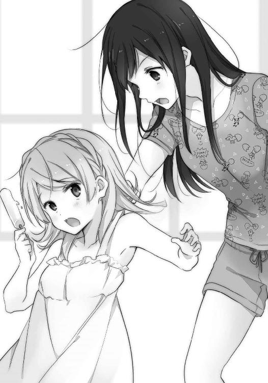

| 安達としまむら6 (電撃文庫) | |
| 入間 人間 | |
| 株式会社KADOKAWA (2016) | |
本書（電子版）に掲載されているコンテンツ（ソフトウェア／プログラム／データ／情報を含む）の著作権およびその他の権利は、すべて株式会社ＫＡＤＯＫＡＷＡおよび正当な権利を有する第三者に帰属しています。
法律の定めがある場合または権利者の明示的な承諾がある場合を除き、これらのコンテンツを複製・転載、改変・編集、翻案・翻訳、放送・出版、公衆送信（送信可能化を含む）・再配信、販売・頒布、貸与等に使用することはできません。
『なにかと向き合うときは常に本気であること。でないと、本気がいつまでも更新されないよ』
顔は覚えているけど名前が曖昧な中学の先生がそんなことを言っていたけど、言われた頃には手遅れになっていた気もする。その頃のわたしに過去の面影はなく、川を流れて研磨された石のように丸く、よく言えば淀みなく悪く言えば引っかかりがなく。するする、時が流れる。
そんなやつになっていた。
きっかけと呼べるようなものは特にない。ただ小学校から中学校へと環境が移り、人付き合いの在り方に背伸びしてしまう同級生も増えた。わたしはそこに適応しただけなのだと思う。
善意は正面から心の扉を叩くもので、悪意は隙間から忍び寄るもの。そして無邪気であれば、付けいる隙を与えてしまう。無防備に事態の悪化を招くことに、誰も同情なんてしてくれないし救いの手を差し伸べてもくれない。傷つく前から、大体そういうことを理解する。
だから傷つけられる前に、わたしは、心の隙間をぬかりなく埋めた。
そうすれば心の隙間から悪意は寄らず、そして、わたしからも出ていくことはない。扉を埋めきったせいで興味や関心さえ表に出なくなってしまったような気もしたけど、執着しないというのは気疲れもなく、かえって楽なものだった。あるがまま、流れの一部となる。
そこに良いも悪いもなく、ただそういうものだと思っていた。
日差しが強くなれば暑いと感じて、冬が近づけば寒いと感じる。
目の前の変化をただ受け入れるわたしは、ある意味、根っこは特に変わっていないのだった。
だから自分に疑問を持ったことはない。
これからも、こういうわたしでいるのだろうと思う。
思っている。
このままでいいと思っていた。
誰と出会っても、失敗しても、望みが遠く離れていっても。
それに追いすがることはなんとなく良くないことで、ただ目を伏せていればいつかは痛みや後悔も薄れていつもの自分になれると思っていたし、実際、そういう風にやり過ごせてきた。
だけどしまむらとの出会いは、私に目を伏せることを許さなくなった。
そしてしまむらに出会ってからも、このままでいいわけではなかった。
ここまで走れば安心、なんてものは一向に見えてこない。
安住の地なんてものはなく、ただ進むだけ。
流されるように前進するのではなく、一搔き、また一搔き。
見えている、綺麗なものに近づいていきたい。
だから来たよ的な思念を強く込めて「遊ぼう！」と誘ってみたら。
「え、無理無理」
出迎えたしまむらがいともあっさりと手を横に振る。
勢いよく出鼻をくじかれて目を戸惑わせていると、しまむらが説明してくれた。
「いやだって、お盆は祖父ちゃんたちの家に行くから」
至極真っ当な理由である。私自身が拒否されたわけではないようで、僅かに安堵。
お盆の里帰り、そういうのもあるのか、と親戚付き合いの希薄な私には馴染みがない。
「そうなんだ......」
ちゃんと電話で確認を取ってから来ればよかった。でも電話は、少し怖い。
この間のやり取りが私にためらいを生んでいた。
それにこうしてしまむらの顔を見られたから、少し満足している自分もいる。安い。
「うん。ついでに言うと出発は今日です」
「あ、うん......お盆だもんね......」
要領を得ない返事しか出てこない。あと、関係ないけどしまむらの着ているシャツは卵のイラストだらけだった。割れた生卵からは黄身じゃなくて様々な生き物が生まれ出ている。どこに売っているんだろうこんなシャツ。多分、しまむらには売っていない。
「何泊？」
手汗を拭いながら尋ねてみる。
「三泊四日の予定でございます」
なぜかバスの添乗員みたいな口調だった。仕草も手のひらを外に傾けてそれっぽい。
「じゃ、じゃあ。四日後、また来ても......」
ぼそぼそと喋りながらしまむらの反応を窺う。しまむらは「うん」と頷いていた。
「それならいいけど」
そう答えてから、しまむらが私の顔を眺める。そしてなにかを察したように付け足した。
「あー、じゃあ帰ったら電話するから」
「待ってる」
本当はしまむらの部屋でずっと待ちたいぐらいだった。
しまむらがそのまま、私の額や首筋を観察するように眺めてくる。なになに、と戸惑いながらも身じろぎしないでいると、廊下を引き返していく。なんだろなんだろと不安と共に待っていると、しまむらがすぐ戻ってくる。違うのは手ぶらでないこと。
手にしているのはミネラルウォーターとアイスクリームだった。
「せっかく来てくれたし、んー......残念賞だと響き悪い？」
しまむらが二つを持ったまま首を捻る。
「また来て下さいで賞......語呂が悪いな。暑いで賞、は意味分かんないな」
真剣に検討し始めてしまった。しまむらは普段こだわりを感じないのに、変なところでまじめになる。そういう不可思議な部分にも引き寄せられてしまう自分を感じていた。
「ま、なんでもいいか。はいどうぞ」
しまむらが結論を投げて微笑み、手にした二つの景品？ を私に差し出してきた。
ぶわぁっと、目の周りに熱が迸る。
不可思議でないものにも、この劇的な反応。
身も蓋もないこというと私は、しまむらのすべてに惹かれてしまうのだった。
言葉を失って見惚れそうな私にしまむらが疑問を持たないうちに、顔を軽く撫でて表情を整える。それからミネラル水とアイスを受け取った。どちらもしっかりと冷えて、汗ばんだ手のひらを癒やす。
「そんな力いっぱい握ってると、アイス溶けるよ」
しまむらに指摘されて、慌てて、アイスをそのまま落としそうになった。
結局、少し力を込めて握って支える。
「ありがとう」
顔の横にペットボトルとアイスを添えてお礼を述べると、「いやいや」としまむらが緩く手を振った。そうしているとしまむらの父母がやってきたので、頭を下げてから「じゃあ」とそそくさ、家を後にした。そうして外に出た途端、現実がぶり返す。
しまむらと向き合うことで感じていた温かさは、猛暑の熱に取って代わられた。
それでも、しまむらの気遣いは消えつつある冷たさとして手に残る。
ペットボトルを掲げる。
ミネラル水を透かして空を眺めると、体育館の二階を思い出す。
あの場所からすべてが始まった。細胞のすべてが入れ替わるように、新しい私が生まれた。
昔の自分に未練はない。
昨日の自分さえ忘れてもいい。
今日と明日の自分が、しまむらに近づいていければ、それで。
キャップを外して、ミネラル水に口をつける。
思い出に浸るのではなく、新しい自分に活力を与えるために。
ごくごくと、滝のように一気に流し込んだ。
安達家にはお盆なんて関係ないのだろうなぁと、見送りながら思った。安達はどちらかというと都会の匂い、言ってしまえば鉄筋に囲われた空気を纏っている。白く、清潔で、冷ややか。
土に触れないで生きてきた、というイメージだ。
......そうか、鉄筋だから熱くなりやすいのかもと変な納得をしてしまうのであった。
「もうすぐ出るから用意しておいで」
「はーいー」
母親に返事しながら部屋に戻ると、ヤシロが布団に寝転がっていた。家の物か持ち込みか判断つかないけど、棒アイスをちろちろ大事そうに舐めてはにまにましている。アイスより髪の色の方が煌やかだなぁと一瞬和みかけたけど、わたしの布団の上でなにしているんだと慌てて首根っこを摘む。
わたしの細い腕一本でもヤシロは悠々持ち上がる。宙にぷらぷら手足を揺らしながらヤシロがこっちを見た。
「どーしました、しまむらさん」
「布団の上でお菓子を食べないと約束したでしょ」
「していませんが」
「あ、これは妹か。まぁいいや、今日からあんたとも約束ね」

布団の外まで運んでから解放すると、ヤシロがわたしに寄りかかってくる。足を背もたれに使ってきて動けなくなり、そのまま腰を下ろすと足の間に座り込んできた。いつものことではあるけど、ヤシロは側にいても暑苦しさがない。色合いからむしろ、涼やかにさえ錯覚する。
そのヤシロがにっこりしながら食べかけのアイスを差し出してくる。
「一口いかがです」
「んむ」
貰った。真ん中の色合いで食べる前から想像ついたけど、イチゴ味だった。
「甘いねぇ」
「でしょう」
なぜかヤシロが自慢するようだった。そういえば、安達にあげたのもイチゴ味だったな。
安達としまむらイチゴ味。
「.............................................」
今と大差なさそうだった。
それはさておき、見上げるヤシロの頰をふにふに摘む。
「うーむ」
だらしがないほどに柔らかい頰をこねたり引っ張ったりしながら、ヤシロを眺める。
ある意味で一番気楽に付き合えるのはこの子なのかもしれない。責任を感じないというか、適当でもなんとかなってしまうというか......良くも悪くも、軽い。誰かがわたしに似ているなんて評したけれど、そうした部分が似通っていると感じるとこなんだろう。
いつも天真爛漫に笑みを浮かべて人当たりはいいけれど、どこか表面的というか、よく分かっていないけれど取りあえずやってみているという印象があった。
とはいえ、暢気な性格は本人そのものなんだろうけど。
「ほひゅひー」
なにか言っている。しかしよく伸びるほっぺだこと。奥に骨も感じないし。
その頰越しに、堪能しているアイスの冷気が伝わってくるのだった。
「あ、ヤチーいつのまに」
「しょーさん、こんにちはー」
汗を浮かべながら妹が戻ってくる。お隣さんまでとはいえ水槽を運んだからこその汗だろう。旅行で家を空けるとき、妹は飼育中の魚の世話を隣のおばさんに託す。妹は生き物好きだ。
最近はこういう変なのも飼っている、とふわふわするヤシロの髪を摘んだ。
そのまま装飾や細工に使えそうな手触りと光だった。
「いかがですかな」とヤシロがアイスを妹にも勧めて、妹が端っこをかじる。
それを味わいながら、妹がわたしに向いた。
「そうだ、ねーちゃん。お父さんがもうすぐ出かけるよって」
「あ、そうだった。はいはい」
ヤシロをそのへんに転がして「あらー」用意しておいた鞄を手に取る。
単なる里帰りだから荷物はあってないようなものだ。
これが日野みたいに海外への旅行なら、鞄が膨れあがるだけじゃあ済まないのだろう。
部屋の戸締まりを確認した後、妹を連れて玄関に向かう。
両親はもう靴を履いて外に出ていた。
「おせーぞおら」
チンピラかヤンキーみたいに急かす母親はいつものことなので適当に流す。
靴を履いて、さて。
「......さぁ出発だ、と行きたいけれど」
アイスをれろれろしながらこっちを覗くヤシロに視線が集う。ヤシロは気にせずれろれろ。
「おーい」
やむなく声をかける。ヤシロがぺったぺったと暢気な足取りでこっちにやってきた。
「なんでしょう」
「いやなんでしょうじゃなくて」
ヤシロが一家総出の様子を丸い目で捉える。大きく開くとその水色の瞳は地球儀のようだ。
地球が、ふるふる優しく震える。
「みなさんでお出かけですか？」
「そーですよ」
妹がヤシロの口調を真似しながら返事する。そうそうと便乗して頷き、お帰りを促す。
「おぉ、そうでしたか」
まったく気づいてなかったみたいだ。周りが慌ただしいから気になったりしないのかな。
「この家はわたしがお守りしますので、どうぞどうぞ」
ヤシロは雰囲気をまったく逆に解釈したらしい。鼻筋をピンと立ててキリッとしている。
どうぞじゃない。実力行使、てぃっと家の外に放る。
「なぜですー」
「馴染みまくっていて麻痺気味だけど、あんたうちの家の子じゃないから」
少し譲ってもペット枠で隣のおばさんに預かってもらうぐらいの立ち位置だ。
家に置いていってもくっちゃ寝するだけで悪いことはしないだろうけど。
「お土産買ってきたげるからいい子にしてようね」
「いつもいいやつですぞっ」
妹がヤシロの頭を撫でて姉ぶる。そしてヤシロは変なとこで昂ぶる。
しかもお土産なんて安易に約束していいものか。
祖父ちゃん祖母ちゃんの家は今や稀少な『コンビニの少ない田舎』なのに。
あと信号機もほとんど見かけない。人も少ない。車も少ない。
じゃあなにがあるかというと。
「.............................................」
友達がいる。
十年来の付き合いの、わたしの友達が。
胸いっぱいの喜びに満たされて会ったのは、いつの頃までか。
今ではその喜びと同量の侘びしさが広がる。
石を底に敷き詰めるように、胸の痛みさえ覚えるようになっていた。
「おみやげまってまーす」
「行ってくるよー」
ヤシロに見送られて車に乗る。よく分からない状況だなぁと正直思う。
車に乗ってすぐ、電話が震える。安達からのメールだった。なんだろねと開いてみると。
「なにこれ」
本文にハートマークが一個あるだけだった。......誤送信？
でも間違って変換するようなものじゃないだろう、ハートは。
イチゴのように赤いハートマーク。
旅の無事を祈る、ともまた違うのかな。
「......んー、まぁ」
素直に頂いておくとしよう。
こっちもハートを送信と。
お返しした後、走り続ける車に身を任せる。
窓から照りつける夏の太陽は大きな瞼のように、わたしを真っ白なもので覆っていく。
『今日の安達さん』
メールの最後にハートをくっつけるか迷う。
試しに表示させてみたら、うわ、目立つ......と驚く。
こんなのを送ったらしまむらの目に留まらないわけがない。
すぐに削除して......あ、ハートだけ送ってしまった！
母方の祖父母の家は川を遡るようにして向かう。道中の傍らには大概、大小問わず川が見えていた。そして、向かうときは季節柄か晴れた日が多く、水面に反射した光の眩さに時折、目が驚く。同じ川ながら見せる景色は流れにも、そして月日によっても変わっていく。
少しくらいは背が伸びたのかもしれない。頭に手を乗せて、そんなことを感じる。
乾いた田舎から、土の香りのする田舎へ。
同じ県内ながら、取り巻く環境は大きく異なるものだった。
大きく螺旋を描くような橋を越えて、また川沿いに流れるように進み。建造物が乏しくなって山間の地味な色合いの景色が目立つようになってきた頃合いに、最後の小さな橋を通り抜けてようやく、祖父母の家に到着する。
祖父母の家は駐車場がいやに広い。家よりそちらの土地の方が大きいぐらいだ。水はけの悪い土地には真ん中にくぼみのようなものがあり、先日に降ったであろう雨が濁りながらまだ残っていた。車から下りると周りに木は見えないのに、蟬の声が四方から迫る。ステレオだ。
駐車場と家の間には貼りつけたように薄く植物が生い茂り、壁の役目を果たしている。その植物の向こうにあるのは家の裏側だ。わざわざ表側の玄関まで回るのは面倒なので、この家を訪れた親族は大概裏口から出入りする。その途中には使われなくなって、屋根の黒ずんだ犬小屋があった。一応中を覗いてみるけど、毛布が畳まれているだけで主の姿はない。すぐに前から離れる。
土の上を歩いていると、足もとから熱と匂いが立ちこめる。焦げたような匂いを感じると、帰ってきたという気にさえなった。加熱された頭の影響か、視界が水を帯びるように揺らめく。
「.............................................」
もし亡くなっていたら話の一つも入ってくるだろうからきっと、生きていると思う。
去年の時点で弱っていたその姿を思い出しながら、両親の後に続いて裏口をくぐった。
屋内に一歩入っただけでも、空気が少し涼やかなものへと変わる。
「ただいまー」
母親が気軽な調子に挨拶すると、すぐ返事があった。
「いらっしゃい。爺さんは今丁度隣の家に行っててね、すぐ戻ってくるよ」
そう語ってわたしたちを出迎えてくれたのは祖母と、そしてもう一匹。
へたり込むようにしていたけど、見た瞬間にお互いの顔が上がる。
「ゴン」
母親の横をすり抜けて、その名を呼ぶ。
歯も抜け出して左目は白内障。耳まで遠くなっている老犬だけど、今は機嫌良さそうに尻尾を振っていた。屈むと、のしかかるように抱きついてきた。肩に乗せてくる頭と、細い背中を撫でて再会の挨拶とする。この時期にしか会わないから、丁度一年ぶりだ。
ちくちくとした毛並みに、頰を寄せる。
「むー、なんでねーちゃんにばっかり懐くんだ」
妹が不服そうに膨れる。憤りは生き物係の矜持めいたものだろうか。
「そりゃあ年季が違うもの」
引き取られた幼子の頃からお爺ちゃんに至る今まで。ずっと、友達なのだ。
お互いに子供の頃に出会ってからもう十年の付き合いになる。
「抱月が来たらすぐに動いたよ。匂いで分かるもんなんだねぇ」
そう笑う祖母ちゃんは子供のときから祖母ちゃんでほとんど変化がない。これはこれですごい。でもゴンはそうもいかず、大きくなって、元気いっぱいでそして、老いた。
小さかった頃は跳ねて躍るように歓迎してくれた。嬉しすぎて粗相までしてしまうこともあった。今は随分と控えめだけど、その時の気持ちはお互いに変わっていないと思いたい。
祖父ちゃんの家ではもう一匹飼っていたのだけど、その子は二年前に亡くなった。後でお墓参りに行くつもりだ。......しかし。お墓の前に立つと、またわたしは自分に疑問を覚えるんだろうなぁと思う。どうしてもそれだけが思い出せないってことが一つあるのだ。
「あれ？ 抱月、髪戻したのかい」
「あだっ」
祖母ちゃんが尋ねながらわたしの髪を引っ張る。数本摘むだけでも痛いものは痛い。
「ねーちゃんはやっと不良をやめたんだよ」
妹が好き勝手に言ってくれる。髪を染めただけで不良とか、うちの妹は本当に現代っ子か。
「残念だね、あっちの方が綺麗だったのに」
「え、ほんと？」
染めてから褒めてくれる人なんて今までいなかった。床屋も褒めたけどそれは当たり前だ。
「間違いナス」
祖母ちゃんが良い笑顔でわけわからん太鼓判を押してきた。
噓くさかった。
「お、もう来ていたのか。すまんすまん、つい話し込んでしまった」
祖父ちゃんが表の玄関から家へ入ってくる。その祖父ちゃんの他にもう一人、じーさんがくっついてきていた。そっちのお爺さんは近づいてくるだけで、噎せ返るほどに土臭い。日に焼けているのか、元々なのか肌は浅黒く、生やした髭の白さが浮き上がるように目立つ。青色のターバンを巻いて、服もだぼっとして砂漠の住人みたいな格好をしている。そんな厚着でよくこの暑さの中を動けるものだ。そしてさりげなく、妹がわたしを盾にするように後ろへ隠れた。お隣に住んでいるお爺さんなのだけど、覚えていないのだろうか。
「あ、岩谷のジジー」
母親が子供じみた調子で反応する。呼ばれたお爺さんも目尻をほころばせる。
「良香ちゃんではないか」
母親の名前にちゃん付けされるのを初めて耳にする。
ちゃんって。
「なんだその目は」
母親が目聡くわたしの反応に気づく。
「いや、すごく違和感が」
「まー生意気。抱月生意気」
後ろから母親がわたしの耳を引っ張る。すると顔を寄せていたゴンが母親に向けて威嚇するように吠えた。口元に耳を寄せていたからいきなり鳴かれてびっくりして、それから。
もう一回、じんわりと驚く。
「へへへ」
ゴンが味方してくれたことを、素直に嬉しいと感じる。それを理解する自分が笑っていた。
「うーむ」
母親がわたしの耳を離してから思わせぶりに唸る。そして聞かないでいると勝手に話しかけてきた。
「あのさぁ」
「なに？」
「ほうげちゅって呼ぶとなんだかよくない？」
今までの流れと一体なんの関係があるんだ。
「ほうげ、ちゅっ」
「うぜー」
なにを考えているんだ、この母親は。
そんなことをやっている間に、祖父ちゃんとお爺さんはいつの間にかいなくなっていた。
「面子集めて麻雀やるとか言ってどっか行ったよ」
頭を振って姿を捜すわたしに、祖母ちゃんが呆れたように教えてくれる。挨拶もそこそこに奔放なところは変わらないみたいだ。笑っていると、振っているゴンの尻尾が見えた。毛並みもよれよれにくたびれているし、勢いが全盛期に比べると見る影もなかった。
「......ゴン」
もう一度、名前を呼んで背を撫でる。心臓が汗ばむような湿り気を、胸の底に覚えた。
わたしたちもそれぞれの荷物を置くべく解散する。ゴンを残して、わたしと妹も部屋に向かった。宛がわれるのは二階の部屋だ。本当に狭い階段を上がってすぐの一室で、元は母親が使っていた部屋と聞く。部屋の方もさほど大きくないベッドを置いただけで縦幅が埋まるぐらいの広さで、しかも整頓が為されていない。母親の使っていた頃そのままだ。
ベッドの足もとに隣接する押し入れの中には当時の少年ジャンプが積み上げられていた。
その押し入れの襖には遠い都会の夜景が描かれていて、部屋を薄暗くしてからベッドの上で眺めるとなんとなく心が落ち着いた。ヤシの木があって海があるから外国かもしれない。少なくともそのどちらも、わたしの生活圏では見られないものだった。
「相変わらずベッドが狭いなぁ」
ここに妹と一緒に寝るのだから、年々狭く感じるようになって当然か。
わたしよりは妹の方が成長しているだろう。そうでないと困る、と脇腹を服の上から摘む。
「ねーちゃんがもっと瘦せれば広くなるよ」
「わはは」
怖いもの知らずな妹にはちゃんと相応の仕置きを果たしておいた。
部屋に転がっている「.............................................ぺぷ」転がっている妹を置いて一階へ戻る。なんとはなしにゴンの姿を探すとすぐに見つかる。ゴンは風通しのいい居間の隅にできた日陰に、沈むようにへたり込んでいた。目を瞑っていたけど側に屈むとすぐ反応して、やわやわと目を開ける。なんでもないよと手を振ると、察したようにまた瞼を下ろした。
屋内に入り込む蟬の声も気にならないように、静謐に。
ゴンの周辺だけ、時間が色を失ってモノクロに時を刻むように錯覚した。
再会を喜んだだけで力尽きた感じだ。
そっかそっかそんなに嬉しかったか。
多分、わたしもだ。
ゴンの脇に体育座りする。口を噤んで息さえ潜めるように、空気を共有する。
以前は二匹いたけど、今はゴンが大人しくしていれば犬の鳴き声は聞こえてこない。二年前に死んだのはゴンより前に飼われていた犬だった。こちらもご長寿だった。出会ったときには大人だったからか、ゴンほどではなかったけれどわたしとも打ち解けていた。
その子が死んだと聞かされたとき、わたしは泣いていただろうか。
それだけがどうしてもはっきりとせず、思い出せない。
温度とか、胸の痛みとか。そういうもので分かるかもしれないのに、ピンと、こない。
夏の暑さに参ったわたしからこぼれるものは、涙と汗の区別がつかないのかもしれない。
「.............................................」
ゴンは、確実に弱っている。
去年にその姿を見たとき、来年はあるのかと不安だった。
そんな不安の中で今年が来て、そして、来年は？
ゴンが死ぬとき、わたしは泣くのだろうか。
そんなことを自問するだけで胸に黒いものが溜まり、息が詰まるようだった。
当たりのないくじを面白くもなく眺めるようだった。
これから三日間、町のどこにいてもしまむらと出会うことはあり得ない。それのなんと味気ないことか。町に艶がなく、ときめかない。外出する気にもなれないのだった。
冷房を効かせた部屋で大人しくしていると時計の進みの遅さが気になる。机に突っ伏して、時々姿勢を変えてと耐える。三日は長い。正確に言うならしまむらと過ごす三日は短くて、いない三日は長いという単純なものだ。今の自分には他になにもないのだなと、身を蝕まれるような退屈と苛立ちの中で感じるのだった。それ自体はいい。でも、しまむらがいないのはよくない。電話しようかなメールしようかなやめようかなと、手が行ったり来たりした。
あまり送るのも迷惑かなと気が引けるし、それに、話題がない。私の毎日は取り分け休みになると平坦なもので、特別語るようなことはなにもない。しまむらと出会わなければなにも始まらないぐらいだ。出会っても挙動不審に陥るだけで前に進めているかはさておき。
机から身体を起こして、壁掛けのカレンダーに目をやる。
しまむらの帰る日につけた印だけが、カレンダーで目立つ。つけなくても忘れることはないけれど、その印を目にする度に胸が疼く。感情は張り詰めた紐を弾くように跳ねて、ぶるぶるといつまでも収まらず、座っていられなくなる。ぐるぐるする。部屋の中を、ぐるぐるする。
しまむらの側にいたい。
離れて一日も経っていないのに、切に願っていた。
うろうろしたあげくベッドに飛び乗って正座する。前に倒れて頭をかけ布団に埋める。
そうなると真っ暗だ。一時期、この無明にずっと浸っていたいとさえ思った。
今はただ耐えるためにだけ、目を瞑る。
開いた先に素晴らしいものがあると知ったから。
だからもう黒色は好きじゃない。
しまむらは何色が好きなんだろう。そういえばそんな、当たり前に思えるようなこともまだ知らないのだと気づく。しまむらへの理解は未だ穴だらけで、でもそれを埋めていこうと思える意欲が私にはあった。分からないなら、聞いてみよう。話題を見つけたので手が伸びる。
『何色が好きですか』
メールしてみる。なんで同級生に丁寧語で畏まっているのかと、打ってから首を傾げた。
正座する足の間に手を挟んで左右に身体を振りながら待っていると、ややあってから返事が来る。
『青とか白かな』
「あ、そうなんだ」
特にないって返事も考えていたので、少し意外だった。
しまむらの染めた髪を思い起こす。今思うと、あれはあれで素敵だった。
もっと写真を撮っておけばよかったと少し後悔する。
勿論、今のしまむらも素敵なので帰ってきたら一緒に写真を撮ろうと思った。
それはさておき。
青と白か。......棚を開けて服を確認すると、青系統は少なかった。白はもっと少ない。買い足し決定だ。でもしまむらの好みに合わせた色にしたら、会ったときに服が似たような色合いになるのか。お揃い？ いや好きな色を聞いておいてそれは露骨？ 引くかな？ 実は私も好きな色なんだでなんとか......まだ服さえ買っていないのに落ち着かなくなってきた。いよいよもって自分が重症になってきている気がする。
下着は別に色にこだわらなくていいだろう。わざわざしまむらに見せつけるような状況なんてまずない。......ないと思う。そのあたりは想像すると頭に靄がかかって、思わず棚に額をぶつけたくなる衝動に駆られる。実際、ぶつけるほどではないけど額を当てて、ごりごりと擦る。
額に痛みだけを残して落ち着いた後、棚の端に畳んである一度しか使っていない水着を摘み上げる。......水着、もう一枚、買っておこうかな。
どうしよう。もうしまむらと水辺へ遊びに行くことはなさそうだけど、でも。
カレンダーの下半分を見上げる。
夏休みはまだ半分近くある。そして水着が必要なのは夏だ。どんな流れからまた水着が必要になるかは分からないので、用意しておくに越したことはない。そんな気になる。
幸いにも私はすぐのお金に困るようなことはなかった。
なんの気なく、時間を潰すためだけに始めたアルバイト。貯めているお金も結構な額になったけれど使い道を見出せないでいた。無趣味で、買いたいものもなく。でも今は分かる。
こういうときに使えばいいんだと最近学んだ。
正しいことにお金を使っている、という感覚は貴重なものに思えてならない。
そのアルバイトの時間が迫っていて、服もそのままに家を出る。家の外に出た途端に出迎えていた蟬の声も、やや落ち着いたように感じる。夏は折り返しを過ぎようとしていた。
今年の夏の前半は、強い日差しの辛い日々だった。身体にも、心にも。
夏休みの後半には一体、なにが待っているのか。
自転車をこぎ続けて、面白くもない汗を流しながらバイト先に到着する。バイト先の中華料理屋はいつの間にか店名が変わっていた。表の看板に上から新しくもみすぼらしい看板を貼りつけて強引な転換を図った。経営者も、内装も、料理の種類にも変更はない。一体なんの意味があるのか分からなかった。風水的なお告げでもあったのかもしれないけど、嫌な予感をひしひしと覚える。こういう小手先の変化に走る店は総じて先が長くない。
店の裏口から入って更衣室兼事務室で着替える。
いつものチャイナドレスを着て、これも青系だと気づく。
しまむらが褒めていたのは色のせいもあるのかもしれない。
裾を引っ張りながら店に出ると、店長がペンギン風に歩いて近寄ってきた。
その後ろには、見慣れない女子が一人。
「夏休み限定だけど、新人サンヨロシク」
店長がそう言って、後ろに控えていた女子を紹介する。
年若いからか私と同じようにチャイナドレスを着せられていた。私とは異なって赤系統で、梅柄の刺繡がされている。更に私と違うところは、取り立てて恥ずかしがる仕草を見せていないところだった。
普段では体験できないそれの着心地を受け入れているようでもあった。
あと、足が長い。過剰に長いように見えた。
「よろしくお願いします、先輩」
「あぁえっと、はい」
同年代と思しき同僚ができるのは初めてだった。少し年上の店員さんはいつの間にか辞めていなくなってしまったし。辞めたというか、別の店舗に回されただけだと思うけれど。
台湾系の人間が経営する中華料理屋は親類だらけだ。店員の貸し借りなんてザラである。
そんな事情あれども雇われの身には大して関係なく。いやしかし人手を増やす必要があるほど客が来る日もそうないのに、なぜ増やしてしまうのか。雑に貼り替えられた看板を含めて、暗雲を覚えるのは杞憂というものだろうか。もっとも、潰れたらバイトを辞めるだけだ。
しまむらのために使うお金（仮）は既に蓄えられている。
「あのねのね」
声をかけられて振り向く。なに、と目で問うと新入り、後輩？ そんな感じはしないがにこやかに話しかけてくる。自分で着ていると分かりづらいけど、チャイナドレスの光沢は目を引くものがあった。
「先輩というほど威厳を感じない。というか、年下かな？」
年齢を確かめる前から態度を崩してくる。年下と決めつけているみたいだ。
無言でいても、後輩は私の側から離れない。
「うーん」
恐らく年上の後輩が顎に手を添えながら首を傾げる。居心地悪い。
「どこかで見た覚えがあるんだよね、きみ」
......もしかしたら。ここで話し込めばなにか別の物語が生まれたのかもしれない。
目の前の相手のことを少し考えれば、なにか芽生えたのかもしれない。
「私はないから」
でもそんなものはまったくもって、不要だ。
突っぱねて距離を取る。人当たりがいいを通り越して馴れ馴れしく感じてしまう。
しまむらとの間に時折訪れる、淡いような心地よさとは雲泥だ。
しまむらも基本、私には柔らかい態度で接してくれる。
なにが違うのだろうと、接客の合間に考える。
でもしまむらのことを考え出すとすぐに脱線して、想像は頭の中を跳ね回り、収拾つかなくなる。顔も緩むのでほどほどにしなければいけないと意識しても、そうすると余計にしまむらのことばかり思い浮かんでしまう。悪循環？ いや、でも、気分はとてもいい。
そうして冷房の空気さえ一時忘れるほど燃え上がるものに触れて、実感する。
具体的にその要因を語ることは難しい。
むしろ言葉にしてしまえば味気なくなりそうで。
だけどしまむらじゃないと駄目なんだと、強く、気づかされる。
祖父ちゃん祖母ちゃんの家を訪れたときの、いつもの夕飯がテーブルに並んでいた。
カツだ。とんかつとチキンカツ。子供にとってのご馳走だからだろう、たんまり用意されている。あと土地柄でかけてみそも常備。どちらも見ると自分の背が縮むように錯覚する。
でも椅子に座ってみれば向かい側の祖母ちゃんさえ、わたしより小さいのだった。
「いただきます」
妹と一緒に手を合わせて挨拶する。そして手を離すときには既に母親が食べ始めていた。童心に返ったように味噌をかけたカツをがふがふ囓りながら、母親が祖母ちゃんに向けて笑う。
その顔を見て、ああここは母親の家だったと納得する。
幼少の時間を過ごした場所なのだ。
「実家はいいねぇ、ご飯の用意しなくてもいいから」
ご満悦にそんなことを言う。それを聞いた祖母ちゃんは「これ」と咎める。
「子供の食べる分がなくなるからその辺は塩梅利かせるんだよ」
「いやいや」
とても食べきれなくて、翌日の昼ご飯にも回されるのがお約束じゃないか。
「そうそう」と頷く祖父ちゃんも一緒に食卓を囲んでいる。小食な父も含めて、いやいやと緩く首を振っておいた。ヤシロがいたら、あの身体に見合わない大食漢ならこの量でもどうにかなってしまうのかもしれない。あいつはちゃんと生活しているだろうか。わたしの家にこっそり上がり込んでいないだろうか。色々な意味で、目を離すとつい心配してしまうあたり、既に我が家のペット枠に潜り込んでいるのかもしれない。
にゅりにゅりとカツに味噌をかけながら、台所の隅のゴンに目をやる。
ゴンは祖母ちゃんが細かく砕いたパンをついばむように食べている。小鳥の餌と形容してもいい量だ。もそもそと顎を動かすのも億劫な態度で、仕方なく口にしているようにも見えた。
昔は少しおやつをあげると、もっとくれってねだってうるさかったものだ。
そういえば、そういうときの表情というか態度は安達に似ているかもなぁと思った。
安達はそんなにうるさくないけど......ああでも、この間は少し大げさだったな。長話で要点がまったく絞られていなくてどろどろとして、結局なにが言いたいのか摑みづらいけどごめんもう一回最初からお願いしますとは絶対に言えない空気だったので、有耶無耶にして電話を切ってしまった。
涙声で滑舌が悪く、非常に聞き取りづらかったのも原因と言える。
なにしろこちらからすればこんな感じだった。
『私は！ しばむらがしだないどこでばらっているとかぁ！ 嫌でぇぼかのごとてをつだぐのも！ わだしだがよって！ までぇりだっでぃだかったし！ しばむらだのじそっにしでると、わらっでっど、そろぞばに私いて！ ぞぉいうのがよくて！ 頭がんいなのぐるじいの！ しばらのごとばっかんがえて、どぅにかじっそ、なっで......しまらがでんばしてくでるのばっでぃーるの！ だまにばなじでよ、私にばなじでよ、私ばふぁりだやだ、しまらもっしーぐらい......すごっじは私んごどぎにならない？ じょっども？ ばたく？ ばんでもないの？ どもだぢだげ？ ふどぅーのどぼだちの？ ふづぅーじゃばりないないの、ふづぅーよりっこでいっから、ふづぅーじゃばりないのが、いい......べぇ、しばむら、どずるばいいばな、べぇ。しばらぎってる？ ぎいて。わだしのごんぇをぎってなかもう？ おぼってくべる？ あんしんでもいっよ、ばんでもい、なみかもって。そういぶのほっじ、ぃ、そういうのぼめちゃだめ？ しばむら！ しばむらばんだぼー、わたじね、しばぶらがいいの。しばむらいがいらばいし、いらだい......しばむらだけでぃから。わがばば言ってなびよ、いっどから、いごじゃん。みんばばんでうでもいいじらないしぁちゃってほっしいにばんでしばらばそっちくの、ごっちきて、ごっちにきて、そばにーて、はばべないで。嫌だ、しばぶらのとなりにーるのばだし、私がーい、わだしがーい、いさせて......だれぁのこ、わだじらないよ。しらないまむらにばるのはばだ、しばむらのことぜんぶってったいし、しりだくないことーるのもやだし、でもしらなっのはぼっとやだっしぐっしいの。ぐるしい、いだ、だ......しばぶらぁ。しばむらっとあそびにこうれ、いいったのまっつりっでびっくとうおぼっつてん、だっと、いびったう、でもびぶらっばのっおっとく、あそっでっの？ びばどこにびるばらだべかとりの、しばら、しばるぁ......べっきて？ さっきからわたしばっかっりだべべるの、いつぶぉらはぼっとべえってえるよべ、べな？ いっつじゃない？ 私おかっしい？ おかっし、ね、そべわっか、る、ん、でもしりった、く、しばらのこど、しりだっく、て、へんびにるのっ。しばらとばれぃくのいつもったくないの、どこでいいいっびゃならっの、からしばむらとあってなびか、らー、あびったい、いまったらなぐ、ぐ、ぐ、で、なびてっし、あのこどばんでろうとそれ、それば、っくきてる？ わだしばぶぶるよあのこっごいの？ わだし、わだ、だべ？ どこはもめ？ なぼっす、すかいって、なぼすっておぼして、きびた、の。しばらは、しばむらだからしばむらだからほかの、じゃそっくりでもんけ、いなーのいはな、けど、べぇそんばぼ、じゃなくて、しばむらばばいとだめ、ばの。だからなかよ、なりた、んか......こう、もっとちがっ、はなっ、きになっ......だっ、しっ、えっ、よ？ よぉ？ わたっし、ばらう、や。やぁ、じゃ？ そうじゃな？ しばむ、ない、だれがっき、すきな、すき、なに、こわっ、なんで、とな、り。ともだひに、なひって、思ってくれて、そういう......うぅう、ぇえ、しばむ、こえ、ききたい。わたし、話して、いちばん、ききた......わかっほし、い。わかって、わかった、一番にね、一番、なえりた、くて、でもくじ、ぐし、ぐふ、ふ、ふっ、は、しま、しば、むら、ちが、ちがう、けっど、でぼ！ きた、うらぎ、うらぎって、うら、ぎ、どうにも、どうすれ、しま、しば、むら、電話......電話して、きっちぇ、やあ、あいたい、あって、あっで、あって、頭、撫で、ぐっ、ひ、ふ、え、えぇえ、しば、しあむら、えぇ、え、ぇええ......』
煮込みすぎた粥を耳に流し込まれるようだった。
でも今更になって、少し悪いことしたかなと思った。
やっぱり勇気を出してワンモアプリーズと言ってみるべきだったのか。
「んー......」
口に残る衣を嚙みながら悩む。蒸し返すのも面倒くさいし......何事もなかったように振る舞うのが無難かな。それは解決ではなく問題を置き去りにするということで、負担が軽くはなるけれど、いつかまたその問題と鉢合わせることになる気がしてならない。
学校の勉強をなおざりにした結果、後で苦労する羽目になったように。
もうすぐ夏休みが明けて、二学期がやってくる。
今年はもう体育館に逃げることもないだろう、きっと。
多分、安達も。
「ねーちゃん、味噌の海になってるよ」
「え？」
妹に指摘されて皿に目を落とすと、味噌の沼が出来上がっていた。カツが沈んでいる。
「おおっとおっととおおっっと」
慌ててカツを救助する。香ばしい衣がくたくたになっていた。
「おいおーい」
母親が年甲斐もなく煽ってくる。招くように両手を内側にぐるんぐるんする。
握った箸の先から味噌がちょこちょこ飛ぶ。
「こういう大人にはなりたくないと思いました、まる」
「なりたくてもきっとなれないぜへーい」
なんだそのテンション、と怒るより先に啞然としてしまう。
「そういえば母さん、膝の調子悪いって言ってたけど大丈夫なの？」
母親が口回りを味噌で汚しながら話を振る。初耳だった、そういえばの意味は分からないけど。みんなの目が祖母ちゃんに向く。祖母ちゃんはチキンカツを囓りながら、「ん、治った」と素っ気ない返事だった。
「本当なの？」
「歳取るとどっかかんか不調が出てくるものだよ」
はぐらかすように、ぶっきらぼうに追及をはね除ける。
その言葉を聞いて、わたしは、ゴンを見る。
濁った左目が、台所の隅の虚空を見据えていた。
不調じゃないとこがないくらいだ。せめて痛みが伴っていないといいのだけど。
不自由さが募り、縛られたゴンは今の世界になにを求めるのか。
安らぎか、解放か。
それとも、もっと前向きななにかを。
「......塩辛い」
味噌をたっぷり吸い込んだカツはさすがに味が濃すぎた。
しかも皿にはまだ、文字通り山ほどの味噌が残されている。
「使い切れよヘイヘーイ、残すなよヘイヘーイ、最後は舐めてもいいぜへーい」
「.............................................」
身から出たなんとやらとはいえ、わたしも解放されたかった。
水着と電話を並べる。......改めて見ると、よく分からない状況だ。
アルバイトの帰りに買ってきた水着と電話を交互に眺める。この水着をしまむらに見せて、どうだろうって聞いてみようか。馬鹿っぽいかな......馬鹿っぽいぞ。よし、失敗する前に判断することができた。今日の私は冷静といえる。でも、評価が気になるのは解決されていない。
わざわざ聞かなくても水着の出番がある場所へ、また一緒に行けばいい。
......誘ってみようか、と前屈みで電話に顔を寄せる。別に、前にプールへ行ったからってまた行ってはいけない理由もない。他にも行きたいところ、誘いたい場所はいっぱいある。
夏祭りも一緒に行ってみたい。水族館もいい。プラネタリウムだって見上げてみたい。
親に連れられて、色々なものを見て。そこで感じたものを上手く伝えられなくて。
だけど今度は、今は、もっと素直に喜べる気がした。
しまむらと一緒ならどこへ行っても意味があり、価値がある。そんな確信があった。
だから電話だ、と引けそうな腰回りに力を込める。
いつまでも怖じ気づいていると、また機を逃しかねない。
忘れるはずもない、見送るしかなかった景色。思い出すだけで瞳に影と熱が宿る。
夏祭り。笑うしまむらの隣に、親しげに寄り添っていた子。
あの子は、なんなのだろう。知りたい。でもしまむらの口から聞きたくない。他の子とどれくらい仲がいいかなんて、説明してほしくない。聞いた途端、私の耳は切りつけられたように鋭い熱を持って、その身を焼いてしまうかもしれなかった。平静でいるのは不可能で、激情を心の水面下に抑えられる自信もなかった。もう一度同じように爆発したら、今度こそ愛想を尽かされてしまうかもしれない。それだけは、絶対に嫌だった。
自制しなければいけない。でもしまむらを想う度、出会う度、溢れてくるものによって水かさは増すばかりだ。増せば増すほどうねり、心に荒れ模様を描く。荒立ててはいけない、でも遠ざかるのも間違っている。そのさじ加減を取るための経験が私には欠けていた。
客観的に見て自分は、幼いのだと知る。
その稚気が促す先には、印が一つだけ目立つカレンダー。
あと三日。
今のしまむらは遠く、カレンダーの向こうにいる。なにをしているんだろう。
「.............................................」
声が聞きたい。電話という形でも、繫がっていたい。
だって電話している間、しまむらは私のことを意識してくれるから。
電話に手が伸びる。恐怖を、情念が乗り越える。
いきなりかけるのもなんなので、かけていいかと聞いてみることにした。
『電話していいですか』とメールを送って返信をじっと待つ。
......だからなんで、丁寧語？
「ということで今はモア田舎の祖父ちゃん家」
『あ、そっかそっか。お盆はそうだったよ』
太陽もようやくとばかりに遠くへ消えて、訪れるのは蟬の鳴く夜。音ばかりが息づく暗夜の中を歩きながらの電話の相手は樽見だった。明日遊ぼうぜどうだいと誘われても、今は祖父ちゃん家にいるのよと断るしかない。そしてそう言われて昔を思い出したようだった。
『お土産になにか貰った覚えがあったなぁ......』
「あったっけ？」
『んー、なかったかな？ 特産品とかなんにもないもんなぁ、うちの県』
「あるでしょー、柿とか、鮎とか。後は、栗きんとん？」
地元のことながら県外の人が持つようなイメージしかなかった。犬小屋の前で屈む。
大きくない家なので話し声が気にならないようにと、電話を片手に外に出ていた。
携帯電話って便利だなぁと、お年寄りみたいな感想を抱く。
『いやほんと、なんにもない町だよねって思うわけ......しまちゃんはさ、都会に出て行きたいとか思ったりしない？』
「ん？ んー......」
『東京の大学、いやせめて名古屋の大学を希望するとか』
尋ね方や言葉の勢いから、樽見は都会に進出したいのが伝わる。町に出れば......いいことあると考えているのだろうか。分からないけど、都会はいいところらしい。近所の家のおにーさんおねーさん方も東京の方へ出て行ってからはまったく戻ってこないと話していた。
樽見も、他の人みたいに魅力的ななにかを見ているのかもしれない。
「あんまり考えてないけど。大学も行くかまだ分かんないし」
正直に答えると、『えっ』と激しく驚かれた。
『そうなの？ しまちゃん就職すんの？』
樽見が声を大きくする。そんなに意外だっただろうか。でも大学に通って勉強するほどの意欲はわたしにない。それなら行くなとうちの母親は言うだろう。
「就職先が見つかるならね。それで、地元でいいかなーと」
近所にあるパン工場なんてどうだろう。パン好きだし、知り合いの大人も結構いるし。......そういう問題じゃないかな？ ただ就いてみたい仕事も特に思い浮かばない。展望はないのだ。
今だって真っ暗で、犬小屋の中なんてなんにも見えやしない。
なんにも住んでいない。
「.............................................」
『ふぅん、そうなんだ......そっか』
樽見の声がわたしの周辺を探るように巡る。未知のものを観察する野生動物のように。
正体を嗅ぎ分けたらどう出てくるのだろう。
出方を見る前に、話題を変えてしまう。
「ところで今のはお土産の催促ですか？」
『え？ いやいや、ううん、そうじゃない、そうじゃない。......まぁ、頂けるのなら、ねぇ？』
締まりのない笑い声がくっついてくる。なにかあるかなと思いつつ、何の気なしに犬小屋に手を入れてみる。暗がりの中、触れた毛布の手触りに違和感を覚えて摑み、引っ張り出す。
ごわごわとせず、優しい感触だった。
顔を寄せて確かめると、懐かしい浅葱色の毛布。わたしが買った毛布は小屋の汚れと裏腹に綺麗なものだった。しっかりと洗濯されている。洗濯して、ここに置かれている。
もう使われることのない犬小屋に。
気づいて、暫し言葉を失う。
思わず暗闇の向こうに祖母ちゃんを探してしまう。
『しまちゃん？』
「ああ、ええっと、なんでもない。お土産は見つけたら買ってく」
早口になっていた。
『ああいいいい、いや、うん。お土産っつーか、あの、しまちゃんと会えたら』
樽見も負けていない。
「わたしと？」
『そのー......会えたらいいねって、それだけ。それだけで、いいっていうか。あ、いえ余計なことを喋りすぎだよな。うん、喋りすぎた』
樽見の長い独り言とも反省ともつかぬ喋りを半分聞き流しながら、毛布を丁寧に戻す。
感傷ってやつ、なのかな。
胸の空いた部分に冷たい空気が入ってくるように、少し苦しい。
『これ以上はどんどん駄目になっていきそうだから、あっと、このへんで逃げておくわ』
樽見がわけの分からない宣言を快活にする。前向きに言うこととは思いがたい。
「分かんないけど、それじゃあ」
『うん。またこっちで、会おう！ しまちゃん！』
「はーい」とやんわり電話を切る。
そして十秒後。
『電話していいですか』
安達からのメールが届いていた。人気者だなわたしと少しおどける。
安達はいつもこうやって確認を取ってくる。一々面倒じゃないのかなと思う反面、そうした慎ましさのようなものは嫌いではなかった。安達の人柄が表れているように思うからだ。
『いいですよ』と返すと間を置かずに電話が鳴るあたりも少し微笑ましい。
ベッドの上に正座して待機する安達の姿が思い浮かぶのだ。
「はいはい」
『もしもし』
順番が逆な気もした。
『しまむら？』
「はいはーい」
微妙に言葉を伸ばしながら繰り返す。知らない虫の鳴き声が、どこかから聞こえてきた。
『あ、なんか......元気？』
「元気っていうか、喋り慣れた延長？ さっきまで友達と電話していたから」
つい言ってしまったけど、安達はまた不機嫌になるだろうか。......安達も困ったものだなぁとは、少し思う。
わたしも人のこと言えるか微妙だけれど、安達はもっと人付き合いに向いていないみたいだ。そんな安達がわたしとは仲良くしようと苦難しているみたいで、どういう心境からそうなるんだいと些か興味はあるけれど、聞けばまた厄介なことになりそうでつい流してしまう。
でもそういうものが溜まり積もって、前みたいなことが起きたのかもしれない。
人付き合いはかように手間のかかるものである。
当たり前か。複雑怪奇な人間を相手にしているのだから。
『ふぐ』
なにかを飲みこむような音が聞こえた。安達が息を強く吸い込む音らしい。
まるでなにかを堪えるように。
『し、しまむらはそっち、どう？』
声が少し硬いけれど、安達が話題を振ってくる。不自然だ、でもどこか成長を感じる。
「どうって？」
『懐かしい、とか空気が美味しいとか......私そういうのなくて、分からないけど』
「うん......懐かしい、かな」
噓を吐いた。
そして噓の反対側にあるものから、逃げた。
「安達は今日なにしていたの？」
『私？ えっと、アルバイト行って』
「おーエライ」
『それから帰りに、水着を買った』
「水着？ 持ってなかった？」
プールでの格好を思い出す。なかなか攻めている安達だった。
『あるけど、えっと、もう一枚くらいあってもいいかな、って』
「ふぅん。海水浴でも行くの？」
家族と一緒に行く歳ではないし、関係でもないだろうけど。
『そ、そんなこと......あ、あーあーあ、ある。しまむらと行く予定が』
「え、しまむらさんは初耳なんですけど」
『行けたらいいな、と......思うわけだけどどう、かな！』
耳に嚙みついてくるような剣幕でのお誘いに、頭がくらっとくる。
声も派手に上擦っていて、あぁこっちはいつもの安達か。
「どうかなって、うちの近所に海ないよ」
『じゃ、じゃあ川！』
「川かぁ。川遊びは危ないよ」
川辺で足を滑らせて石で頭打って血だらけになった人にそうやって注意されたことあるよ。
『そ、それなら......池？』
それも却下されたら今度は沼にでも誘うつもりだろうか。
水辺にどうにも拘りがあるみたいだ。ようするに新品の水着をお披露目できればスーパー銭湯でもいいのかな。そんなに素敵な柄なのか。......面白い。
「ねぇ、ちょっと撮って送ってみて」
『......え、え、なにを？』
「水着」
からかうように催促すると、『なんで』とかぼそぼそ言いつつも声が離れる。
撮影に移ったようだ。妙に素直なのでやっぱり自慢したかったのかもしれない。
こちらも顔を離して待っていると、ややあって画像の添付されたメールが届いた。
床に並べた水着の写った写真である。水着はわたしの好きな青色だった。
んー。正しいけど、違うそうじゃない。
「安達が着たとこを見てみたいと申したのです」
『......な、な、なんで？ どうして？』
「ワンモア」
安達の疑問などどこ吹く風に撮り直しを要求する。どうしてと聞かれても困る、そういう安達の反応を引き出したいだけなのだから。鏡もないけれど自分の頰がにまにま緩んでいるのが分かる。そのまま少し意地悪に待っていると、安達の淡い息づかいが離れるのを感じる。
撮影に移ったようだ、そのに。
なんでか少しわくわくしながら待つ。そして、送られてきたものが期待通りだったので。
「あはっ」
水着よりも安達の顔の方が興味深い。笑おうとしてでも恥ずかしさに負けて、というところかな。口もとを固く引き締めるようにして耐えながら、目はなんとか微笑もうと崩れて前髪が緊張による汗で額に貼りつき、極めつけは変なポーズと来る。自撮りしようと左腕を伸ばして、そこにへっぴり腰が組み合わさることでヒーローの変身ポーズみたいだった。
静止している画像なのに、今にも全身ぷるぷる震えるのが見えそうである。
「あははは、ありがと」
お礼を言うと、ばふばふ音が聞こえた。クッションか枕でも叩いているような音だ。
「なかなか派手なやつだね」
感想を述べるとばふばふが増した。水着姿でやっていると想像すると尚愉快だ。
「これを着てどこ行きたいの？」
海か、川か、沼か。意地悪を重ねると、安達の尻込みした声がぼそぼそと膨らむ。
『......スーパー銭湯』
本当にそこでいいのか、と想像と一致して笑うほかなかった。
「じゃ、帰ったら行こうか」
女子高生二人で銭湯に通うなんて、どんな趣味だと人に言われそうだ。
でも安達とわたしの付き合いは、それくらい変でこそ続くのかもしれない。
ふとそんな風に感じてしまう。
それから、しばらく下らない話をした。珍しく、少しだけ話が弾んだ。
そうして喉が渇いて鳴き声が虫から鳥へ変わる頃に、丁度いいかなと挨拶する。
「それじゃあ、安達。おやすみ」
声は思いの外、優しさに満ちていた。自分でも予期しない柔さに、少し戸惑う。
『お、おやすみなさい』
なんでか物腰が丁寧だった。これはこれはと頭を下げつつ電話を切って、ほぅと息を吐く。
そうかぁ、水着を買ったかぁと。安達の変化を思う。
今日一日で安達のことは時々考えた。でも、そんな行動は一切予想もできなかった。
カレンダーの向こうで、時を重ね、変化していく。
わたしが見ていない間も日は暮れて、人は生まれ、誰かと出会い、誰かが死に、どうにもならない大きな問題があって、遠くの国の風車は回り、どこかの自販機でコーラが売れて、深海の生物はひっそりと息づく。
変わって生まれて満たされて。
老いて乾いて失われていく。
わたしはそこのところをあまり、分かっていなかった。
無知と無邪気の合わさった子供の頃から、なにも変わっていない。
曲げた膝の上に腕を重ねて、顔で覆う。小さな呼吸の音に耳を傾ける。
この犬小屋を前にしていた幼い自分と、今の自分がどうしても重ならない。
だからきっと、涙はいつまで待っても流れないのだ。
音がして顔を上げる。目もとを押しつけていたせいで、少しぼやける。
元より不確かな夜の闇さえも滲む。
安達からメールが来ていた。また、ハートだけのメールだ。
「癖になったのかな」
返すか少し悩んだけど、こちらからもハートを送信しておいた。
あぁ、わたしのハートが薄れていく。
胸を押さえながら暫しおどける。これ以上薄くなったら、自分が保てなくなっちゃうよ。
夕飯の味噌の海を連想する。あんな風に、心がどろどろになったら、きっと苦しい。
そういうものと向き合ってこなかったわたしの心は、思った以上にひ弱なのかもしれない。
身体と感覚が剝離して、その変化にさえ鈍感となってしまったように。
電話を握る手を下ろす。
空っぽの犬小屋を覗きながら、田舎の夜に浸る。
表を走る自動車の音が、襖の都会の夜景を思い起こさせた。
おまけ「永藤来訪者ならず」
たまには日野を脅かしてみようと、事前にアポを取らないで日野の家へ行ってみることにした。うん？ 脅かす？ 驚かす？ 混乱したけどどっちも同じような意味だろうと深くは考えないことにした。ようするにびっくりすればどっちでもいいのだ。
日野家へ通じる竹林に入ると空気が変わる。強い光は竹藪に吸い込まれて、間をすり抜けてくる風が焼けていない。するすると肌を撫でるその手が優しい。
竹林の石畳を進むと日差しを搔き分けて生まれる、穏やかな空気の中を泳ぐようだった。
その涼やかな時間も竹の景色が途切れると同時に終わる。広がるのは亀どころか鶴でも飼っていそうな緑陽に満ちた庭と豪邸。改めて見るとお屋敷だ。遠くからでも質のいい木の香りがする。日野が小さいから比較して家が大きく見えているわけではないみたいだ。
玄関先にインターホンが見えたので押してみる。
『はい』
出迎えた声は日野のお兄さんだった。名前は......コータローだったかな？
「こんにちはー」
『おや、晶の学友の......』
相手も覚えていたみたいだ。
「おにくでございます」
間違えた。でもくねくねし始めているので今更訂正もできない。
『少しお待ちください』
お兄さんが廊下の奥へと声を出すのが聞こえる。
『晶、友達が来ているぞ』
『あー？』
日野の声だ。機嫌のいいときの声ではない。
『友達だ。とーもーだーちー』
「いぇーぃ」
便乗してみる。なんとなく。
『友達って』
「勿論私だ」
『あ、お前なにしに来た』
「そりゃあ遊びに来たのだ」
それからすぐ、日野が小走りで表まで出てきた。残念ながら和服ではない。
日野は浴衣姿も似合うのに。
「お前な......ひょっとして忘れてるな？」
日野が額を搔きながら私に呆れる。忘れてなどいないぞ。
「ちゃんと一人で日野の家まで来られたし」
「おーおーそりゃエライ」
「はははははっ」
日野に褒められると嬉しいものだ。多分、他の誰よりもだ。
「......褒めてないぞ？」
「なぬ？」
そんな風に話していると、日野のお母さんがぱたぱたと早歩きで通りすぎるのを廊下に見た。日野母はいつも着物で、家族参観でもあの格好だったから見つけやすかった。日野はなんだかいつも恥ずかしがっている気がしたけど。
「なんか慌ただしい」
玄関の下駄箱の脇に用意されているのは二種のキャリーケース。と思っていたらお手伝いさんが運んできてまた一つ追加された。それを一瞥してから日野が言う。
「昼からわいはーに旅行なんだよ」
「そうなのか？」
わいはーとな。もう小麦色なのにこれ以上、どこを焼くのか。
「旅行に行くって一週間ぐらい前に言っておいたぞ」
「ごめん覚えてない」
「うんまーお前ならそうだよね」
日野のことでも忘れるときはある。都合の悪いことは大体忘れる。
「今日から何日？」
「六日。それも話しておいた」
「ごめん覚えて」
「それはもういい。だからお前とは遊んでやれねーぞ」
「ふむ」
暑いので中に入ってから考えることにした。玄関内に座り込む。
「そういえば日野は毎年海外に行くねぇ」
「まーなー」
小学一年生の時から恒例となっている。ああ今頃思い出した。
去年も同じだったけど、その間は一体どうやって過ごしたんだったか。
玄関に座っている私に日野が振り向く。だから力強い笑顔で請け合う。
「留守は預かった」
「帰れ」
ぽーんと追い出されてしまう。むぅ、忙しいからか扱いがぞんざいだ。
とはいえ慌ただしい日野の邪魔をするのも気が引けるし、仕方ないので帰ることにした。
蟬の鳴き真似をしながらとっとこ歩く。竹藪にも蟬がいるのかなぁと上を向いていると。
「おい永藤」
日野が走って追ってきた。竹藪の中、影の差す日野は日焼けと相まって夏を強く意識させる。
「ほら」
日野がペットボトルを緩く放ってくる。程良く冷えた緑茶のボトルを受け取った。
「旅行から帰ったら連絡するよ。で、うん、すぐ来い。いややっぱりわたしが行く」
家を振り返るようにしながら日野が訂正混じりに言う。私の家か、日野の家か。
まぁ日野がいればどっちでもいいか。
「永藤さんに任せなさい」
「なんでそんなことで偉そうなんだ」
日野が息を吐きつつも笑う。
「お土産よろしく」
「分かってる。菓子でも買ってくるよ」
分かっていた。日野がまた走って家に戻っていく。家の中に引っ込むまで見送っていると、最後に振り向いて小さく手を振ってきた。こっちは大きく手を振る。それを受けた日野が渋そうな顔になった後、大きく振り直した。更に大きく振ったら無視された。むぅ。
てってこと日野家を去る。が、しかし。
「うむ困った」
竹林道を引き返しながら途方に暮れる。他に行くところも特にない。大人しく家に帰って扇風機の前に転がっていようか。しかし六日も日野がいないのか。頭が爆発してしまうぞ。
「お？」
道の向こうからやってきて、ゆらゆら揺れる水色の頭に見覚えがあった。たまにうちの店へ買いに来る子だ。私と似たような雰囲気で歩いてくる。向こうも気づいてこちらをじーっと見つめてくる。
「.............................................」
「.............................................」
「うおおお」
「おおおお」
二人で揃って走り出した。そして「どーん！」ぶつかり合う。
水色の子は短身なのに意外にも転がることなく平然としている。足腰が強いようだ。
「あなたはころっけ屋さんですね」
「大体合ってる」
「しまむらさんとしょーさんがお出かけするので居場所を失いましたぞ」
「私も日野が旅行に行ったから退屈ですぞ」
二人でがっしりと抱き合う。
「ぐっすんおよよ」
「びぇぇぇぇ」
ひとしきり泣いてから離す。あー暑い。この子は熱くないけど派手に動いて蒸した。
「で、暇なの？」
「ですな」
にこやかな水色娘は汗一つかいていない。髪は淡く柔らかかった。
人工物と思いがたく、さりとて自然のどこで見られるかも曖昧な、不思議な髪の色だ。
「じゃーうち来るか？」
「お招きに与りましょう」
深く考えないで誘いに乗る。勿論、私はいっぱい考えている。
ふふふ、家に連れ帰って私の代わりに店番させようと。うちのイメージキャラに似ているし。
「飲む？」
ペットボトルの蓋を外して勧めると、水色娘が飛びつくように受け取る。
薄く白い喉は、通過するお茶の色が透けて見えるようだった。
そんなこんなで拾いものをして家へと戻る。
「今日はいい売り子を見つけてきた」
店先に立つ母親に水色娘を紹介する。「あらおつかいの子」と常連客に目を丸くする。
「こんにちは」
うむ、礼儀正しい。これなら接客に使えそうだ。
「いいかね水色娘、ヤスイヨーとかオイシイヨーとか言って手を叩いていればいいのだ」
「はい？」
「ちょーかんたん」
「お前はそれさえできないけどな」
奥のお父ちゃんの嫌みは聞かなかったことにした。「さぁいけ」とその狭い背中を押す。
水色娘はショーケースの脇に立って、ぱむぱむと小柄な手を合わせる。
「ヘイ、ラッシャイ」
「お、乗り気で結構じゃないか」
「ヤスイヨヤスイヨー」
ぱむぱむと水色娘が手を叩く。その頭の上には、日野の描いたイメージキャラが飾ってある。見れば見るほどそっくりだった。そしてよくよく考えてみると、お肉とあまり関係ない。
「そういえばあんた、泊まってくるんじゃなかったの？」
母親に聞かれて、お泊まりセットの入った鞄を揺らしながら答える。
「日野は家族でわいはー行くんだって」
がっかりである。
日野がいないと夏休みも片手落ちだ。言葉の用法合っているかな？
現代っ子なので特に調べもしない。
ぱむぱむしながら、水色娘が監督中の私を見上げる。
「永藤さんは日野さんと仲良しですね」
「まぁねー」
ショーケースに寄りかかりながら肯定する。あれ、名前教えたことあったかな。
「わたしもしょーさんやしまむらさんと仲良しですぞ」
水色娘が鼻を高くする。上を向いて流れる髪は日陰でさえ輝く。
どうもそれが自慢したかったみたいだ。
「ほーぅ」
しょーさんってのが誰か分からないけど、しまむらと仲良しなのは珍しい。
あれは人当たりがいいように見えて淡泊だし。私や日野のことも好き好き大好きってわけじゃないだろう。
「ちなみに日野と一番仲いいのは私ね」
そこは一応はっきりさせておかないといけない。
「うーん......」
日野と一番仲いいっていうのが私の特徴、長所、みたいなものだな。
それなら将来は日野の家のお手伝いになるのも悪くないかもなぁ。
コネで雇ってくれないだろうか。いや逆に猛反対しそうな気もする。
日野の考えていることは時々分からないし。
それから水色娘は夕方まで売り子を果たした。客引きはその髪の物珍しさからそこそこの成果を収めた。足を止めてぎょっとしたおばちゃんたちを店の前へと引っ張り込むのだ。やはり私の見る目に狂いはない。あと、友達との正しいあいさつについても少し教えておいた。
その後に当たり前のように晩ご飯食べて、やたら温いお風呂に入ってから帰っていった。どこに帰ったのかは知らないが、その髪の色と同じ粒子はしばらくの間、店先を舞うのだった。
『今日の安達さん』
水着のまま部屋の中央で正座する。口を開こうとすると、背中に汗が噴き出す。
頭を抱えながら床に蹲り、後悔と気恥ずかしさに身もだえする。
私の水着写真なんてどうするの、どうするのしまむら！
ていうかなんだあの引きつった顔！ 酷い！
でもそれならどんな顔で撮ればよかったのだろうと、ますます悩む。
ぐねぐね、床に額を擦りつける。

本当は、最初は行きたくなかった。祖父ちゃん祖母ちゃんといっても面識はそんなにないし、友達もいなければ漫画もなくてと退屈で、三日もそんな暮らしが続くのは正直、嫌で仕方なかった。でもあからさまに不満に膨れていたであろうわたしの顔はまったく無視されて、大人の都合に逆らうことはできずに田舎の祖父ちゃん家へ向かうしかなかった。
でもそんな手のひらを、すぐに返すことになる。
わぁ、とふわふわしたそれを見た瞬間につまらない田舎が鮮やかに彩られる。
手を伸ばすと、吸いつくように飛びついてきた。お互いに出会った当初から警戒心は薄く、遊び相手を求めるようにじゃれ合う。祖父母の家に新しくやってきた子犬、ゴンとわたしはたちまちの内に相手の頰と鼻を舐め合うほど打ち解けた。いやわたしはあまり舐めないけど。
ゴンにしてみれば周りは大人ばかりで、『こいつが一番弱そう』みたいな打算が働いたのかもしれない。わたしとしてもその後ろに控える大きな犬よりは、ゴンの方が抱っこしやすいとは思っていた。まだ小さく、毛並みも若い。わたしの手にも収まるその子のことを、すっかりと気に入ってしまった。
ゴンはゴンでどこに行くにもわたしにくっついてきて、嫌がるのはお風呂に入るときぐらいだった。布団まで一緒に入ってきて、寝返りをうってゴンを潰さないかと心配になって上手く寝られなかった。結局壁に貼りつくような姿勢で寝て、生まれて初めて寝違いを経験する羽目になった。まぁそんなこともあったけど、ゴンはこの田舎において最良の友達としてわたしと共にあった。
三日だったけどすっかり情が移ってしまって、帰る日になるとゴンと別れるのが嫌で、家に帰りたくないと泣いて駄々をこねてしまった。思えば泣いてすがることなんて生まれて初めてで、そして、それ以降は一度もなかったように思う。
困った両親から家でも犬を飼おうかという話は出たけど、そうじゃないのだ。
わたしはゴンがよかったのだ。
そこをすぐ察してくれたのは祖母ちゃんで、『これ』と母親の頭を軽く小突いて窘めていたのをよく覚えている。それから『泣くんじゃない』とわたしに静かに注意したのも覚えている。
その低く重い一言でわたしを泣き止ませた後、祖母ちゃんは頭を撫でてこう言った。
『来年も来てね』
優しく髪を撫でられると、自分が最初は来たくないと愚痴っていたことを思い出して。
その優しさに申し訳がなくなって、また泣いた。
今度は別の味の涙が次々に浮かんでは頰を流れていった。
涙を唾に混ぜてまともに喋れないまま、絶対にまた来ると祖父ちゃん、祖母ちゃんに約束する。それから最後にぐずぐず、鼻をすすりながらゴンを抱っこする。
ゴンが嬉しそうに顔を寄せてくる。
そのゴンの温かさを、ずっと覚えていたいと思った。
忘れたくないと願った。
たとえそれがどれだけ遠い日の中でも。
そして、夢の中であっても。
ありがちだけど、そんな昔の夢を見た。
「.............................................」
どうやって客観的に見ているのか分からないけど。自分が子供とはいえ、遠慮のない泣き顔は直視できない。恥ずかしさと、後ろめたさに似たなにかが胸をついて頰を焦がす。
寝汗を背中と額と鼻の上に感じながら、ゆっくりと目を開く。意識の目覚めは歯切れ悪い。にゅるにゅると押し出されて、取り留めなく拡散されていくようだった。軽い頭痛を伴いながら窓に目をやると、カーテンの隙間が明るくなり始めていた。夜明けではあるようだ。
同じベッドに寝ている妹は背を丸めて、蟬のように眠りに就いている。かかっているタオルケットを極力揺らさないようにして、ベッドから下りる。起こさないように足音を潜めて部屋を出て、階段を下りた。珍しく、寝起きなのに寝直したい欲求もなりを潜めていた。けれど別の靄が頭にかかり、それを紛らすために外の空気を吸いたくなる。
「......かゆ」
肘の近くを搔く。昨日の夜に、めっちゃ蚊に刺された。ノスタルジックだろうとセンチメンタルだろうと容赦なし。与しやすい獲物を逃すほど羽虫は悠長じゃなかった。
一階に下りても空気と音は沈んで、まだ誰も起きていないようだ。寝室の前を避けて居間へ回ると、テレビの側でゴンが横になっていた。夏場なのに毛布にくるまって動かない。不安になって側に屈むと、微かな寝息を確かめられて安堵する。ゴンの寝顔は柔軟だ。
重たくなった身体を暫し忘れて、安らかに眠っていると信じたい。
見つめていて、口が開く。なにかを言おうとして、でも具体的には出てこなくて。
表したいものをどう語り尽くせばいいのか、答えは見つからず。
まるでいつもの安達みたいに、気持ちだけが空回りする。
結局かける言葉がないまま、側を離れる。逃げるように裏口へ向かい、サンダルを履いて外に出た。鍵をかけていないけど、家の前まで出るだけだからいいかとそのままにする。泥棒だってこんな時間にはまだ眠いだろうと、今更のように欠伸を一つ漏らした。
蟬の声はなく、駐車場の土を踏む自分の足音だけが短く、単調に聞こえる。空は朝焼けを間近に控えながらも薄暗さを払拭しきれていない。空気も別段涼やかというわけではなく、昨日の光の余韻を未だ残すように生温い。灰色の景色を歩き回る感覚としては極めてイメージそのままに正しいものだった。
この色合いには覚えがある。夏休みに訪れて、異なる環境で眠りも浅くなり、つい早起きしても誰も起きていない。やむなく独り大人しく遊ぼうとして、外に出たわたしを追ってくる元気な姿がある。ゴンだ。わたしの気配にすぐ反応して、一緒に駐車場で走り回ったものだった。
まだ妹が柵つきのベッドで寝ていたときの話だ。
追ってきてくれたゴンに頰ずりしたときの感触は、他の景色は滲みながらもはっきりと覚えている。胸や頭がばぁっと広がって、真っ白なものに包まれるように高揚していた。
嬉しかった。幸せなだけだった。ゴンもわたしもただ無邪気で、無知で、その先になにがあるかなんて考えるわけもなかった。ゴンとは毎年必ず会えるし、別れるときはいつも少し泣きそうになるし、それでもずっと元気に一緒に遊べることが当然だと思っていた。
その思いが、今となっては哀切に胸を握り潰す。
ゴンが生きていることに安心して、でも同時に辛いものも覚えて。
好きは違う。大好きというのも少し違う。元気でねもしっくりこないし、ありがとうにはまだ早すぎると思いたい。じゃあわたしは一体、ゴンになにを伝えたいのか。胸と喉に溜まり続けて頭にまで引っかかるこの鬱屈とした思いは、どう、解き放たれることを望むのか。
いくら俯いても知恵の一つもこぼれてこなくて、寝癖のついた髪をかき乱す。
なにかがある。
燻り、自分を平静でいさせないなにかが確かに居座っている。
だけど、わたしは。
「お、こんな時間に散歩かね」
いきなり声をかけられてぎょっとする。こんな時間に、はお互いさまでまだ人影も満足にできあがらないような朝方に活動している人が、新聞配達以外にいるとは思わなかった。更に言うと他人様の家の敷地に堂々と入ってきて暢気に話しかけてくるのも想像つかなかった。
お隣のお爺さんだった。岩谷さんだったか。昨日と同じようにターバンを巻いている。
大型の鞄を背負って、皺と浅黒さで化粧した肌は旅人といった風情を醸す。とても田舎の家のお隣さんには見えなかった。
「おはようございます」
少々腰は引けているものの挨拶する。「うむおはよう」とお爺さんは動じない。
「しかしこれくらいの時間の方が人も少なくて歩きやすいというのはあるね」
「そう、ですかね。そー、かも」
元々人なんて少ない土地なので、賛同しかねる。
「で、きみは......あーうむ、お孫さんだな」
「島村です。島村抱月」
「なんとも文学の香り漂う名前ではないか」
ふぁふぁふぁとお爺さんが笑う。そういえば子供の頃は一緒に遊んでくれたおねえさんがいた気がすると、その笑顔で思い出す。丁度、同じような時期に田舎の家へ遊びに来ていて、わたしやゴンと同レベルで遊んでくれる人だった。年齢からするにこのお爺さんの孫だろうか。
それはそれとして、少し気になるものがある。お爺さんの手元に注目する。
すると待っていましたとばかりに、腕を突き出してそれを主張してきた。
「気になるかねこれがっ」
「はぁ」
普通は外に持ち運ぶものではないし。
お爺さんが手にしているのは、無骨な造りの茶碗だった。
曖昧に反応すると、お爺さんは嬉々として茶碗を掲げる。
「実はだね、これは孫娘に作ってもらったのだよっ」
「え？」
「私の孫は陶芸家の見習いでな、今回は私用の茶碗を作ってくれたのだ。私用なっ」
「あー、はい」
察する。それを誰かに自慢したくて茶碗を抱えたまま外をさまよっていたみたいだ。蟬の鳴き声もまだ早い朝に、茶碗を片手に独り外をうろつく風変わりな老人。色々な意味で身内外野諸々から心配されそうだ。
「どうだね、この無地の中に秘めた知性を感じるかね」
「いやぁ、生憎と無教養なもので」
へらへら。
「安心したまえ、我が孫娘の傑作は無知なる者にもその深みが伝わる出来映えだ！」
「へぇ」
怒りはしないけど、笑うのも止めた。
「だからきみにこの釣り竿を進呈しよう」
「だからの意味が今ひとつ......」
この地域に住んでいる人（母含む）はどうも話の繫がりがおかしい。そして本当に持っていた釣り竿を渡してくる。貰ってどうすると思いつつも受け取ってしまった。簡素な黒塗りの竿で、なんだか前にも見た覚えがある。値段にして三百円という感じだった。
「童心に返って存分に耽ってくれ」
「なんで釣り......」
釣りなんて去年、日野に付き合って以来だ。
「なーに、使ったらきみの祖父さんに返しておいてくれれば結構」
「あ、そういう」
「考え事をするときは釣り糸を垂らすのが一番だよ」
胸の内を見透かされたような気がして顔を上げると、お爺さんはふがふがしていた。
豊かな髭と相まってそう形容するしかない口の動かし方だ。
「なにもせず真剣に考えるぞと意気込んでも眠くなってしまうしなぁ」
「あー分かります分かります」
腕組みして物事を検討すると、五分後には布団の上に転がっているという。
「おや？」
老人の首が伸びる。わたしの後方を覗き込むように。
そして裏口の扉にこつこつ、なにかが当たる音がして振り返る。
朧気なシルエットは、その背の低さと耳の位置を知らせていた。競歩のように急いで近寄り、扉を開けるとやっぱりゴンだった。眠気に押されてしょぼくれた目でわたしを見上げている。
「ゴン、」
わたしが外に出ることに気づいて起きてしまったのか。それなら、悪いことをした。
昔のように追ってきたゴンは、飛びついてくることもない。左目は濁り、快活さは見る影もなかった。見下ろすわたしの影もいつの間にか伸びて、ゴンを包むほどになって。
鼻の血管が切れたように、鋭い痛みに襲われる。押さえずにいたらそのまま右の鼻から血が溢れていくんじゃないかと思うぐらいだった。実際、鼻の回りに水気を感じる。
多分汗だろうけど。
ゴンの姿に思うことはたくさんあった。でもいつものようにそれは具体的な言葉を成さず、いくら考えてもなにも言えそうになくて。だから屈んで、その頭を撫でる。
「ゴン、おはよ」
まず挨拶だろうと思い直す。ゴンは応えるように喉を鳴らした。
でもこれじゃあ、安達を笑っていられないよと自嘲する。
「おぉゴンよ、まだ生きていたか。お互いにしぶといな」
お爺さんがゴンに握手を求めるように手を差し出す。ゴンはわたしの足もとから動かず、お爺さんの手が前足を摑むのも拒まなかった。軽い握手を交わして、手を離す。
「まぁ私はこいつが来たときからジジイだったがね」
がっはははと痛快に笑い飛ばしたお爺さんが、「ではな」ともう一度、ゴンに挨拶する。
老人と老犬の視線が重なるようにして、時が暫し静止した。
単なる朝の別れにしてはやや過剰に、長い挨拶が過ぎる。終えて、お爺さんが背を向けた。
潑剌とした後ろ姿。
元気の有り余っている老人。
そんなお爺さんをつい、呼び止めてしまう。
「あの、」
「なんだね？」
お爺さんの優しげな口調に促されて、少し重い質問も案外、滑らかに滑り出る。
「歳を取るって、辛いことですか？」
聞いてどうなるものでもないのに、尋ねることに抵抗がなかった。
お爺さんがターバンと共に頭を揺らしながら、「ふぅむ」と目を転がす。
「さすが文学的少女、質問にも哲学の芳香がある」
「なんじゃそりゃ......」
思わずぼやいてしまう。お爺さんの返しこそ難解で、実のない文学だった。
「孫から茶碗が貰えたのでまったく辛くないのだが、これ意見として参考になるかね？」
澄んだ目で尋ね返されてしまう。
「ええまあ」
ならない。尋ねる相手を間違えたみたいだ。
「そういう質問は、答えを聞きたい相手に聞くといい」
お爺さんはゴンを一瞥した後、少し大げさに飛び跳ねて鞄を背負い直す。
「さてと、今日からまた財宝探しに出発だ」
「ざいほう？」
「海底にも宝を探しに行きたいのだがなぁ......」
最後にそんな独り言を悔やむように残して、お爺さんが去って行った。
ターバンが動きに合わせてたなびく度、朝焼けが見え隠れし始める。
その迫る光に向けて釣り竿を放つ。
太陽を釣り上げて時間が戻せるならどうするかなと、益体なく考えてしまう。
「聞けと言われてもねぇ......」
分かる？ とゴンへ頭を傾けて問う。
ゴンは口を前に突き出すようにしながら、目を細めるばかりだった。
「大丈夫かい抱月。ついていこうか？」
釣りに行ってくると話すと、以前に頭打って血だらけになった祖母ちゃんに身を案じられた。
「いいよ。祖母ちゃん、膝悪いんでしょ？」
「キェーイ！」
祖母ちゃんがいきなりキレのいい奇声と蹴りを繰り出した。思いの外、足が高々と上がる。
ビシッと爪先まで力を込めて決めたところで急に足を押さえて蹲る。
「大丈夫？」
「足の裏の土踏まずんとこがつった」
「......あーうん、母親の、母親だ」
あの母にしてこの祖母あり。性格形成のルーツが垣間見えた。
「よし治まった。えぇと、昼ご飯はどうするんだい」
「どうしよ。そんなに遅くまでやるかなって気はするけど」
時計を見ると朝ご飯を食べてから一時間も経っていない。昼までは三時間近くあった。
「取りあえず弁当持ってきな。おにぎり作ったげる」
「ありがとう」
祖母ちゃんが小走りで厨房に立ち、てきぱきと冷やご飯を握る。具はとんかつだった。
「水筒と一緒に鞄入れとくから。これでお昼まで保つと思うんだけどね」
「大丈夫だよ。日陰探すし」
鞄を受け取ると、影が目の端で動く。見ると、白内障の瞳がわたしを捉えていた。
「ゴン」
近寄ってきたゴンが鼻先をわたしの足に擦りつけてきて、くすぐったい。「どうしたの」とその背を撫でていると、ゴンの様子を覗き込んだ祖母ちゃんが眩しいように目を細める。
「ゴンも一緒に行くとさ」
祖母ちゃんがゴンの意思を汲む。分かるけど、という言葉を飲みこむ。
「いつものことだね、抱月の後をついてまわりたいんだよ」
「......うん」
いつもの、って、いつから、どこまで続けられるいつものなんだろう。
長い距離を歩けるのか心配がよぎる。昔は道がどこまでも長く続いているように思えた。だけど同時にお互い、どこまで走っても息切れしないような気さえしていた。
背と足が伸びた今は、それが逆に感じられるのだろうか。
ゴンを見下ろしている間に祖母ちゃんがパンを細かく砕いて、袋に詰めてくれる。
「じゃあこいつはゴンのご飯」
「ありがと」
「お腹が空いたら抱月もお食べ」
「......う、うっす」
「やーねー、冗談だよぉ」
祖母ちゃんが快活に笑う。一拍遅れたけど釣られて笑っていると。
「ボケてないよ」
直後に目を見開いた真顔で念押ししてきた。目の端が血走って、怖い。
玄関に向かう途中で、歯磨きを終えた妹と出会した。顔の脇に水滴が見える。
いつものように顔の正面しか拭けていないなこいつ。
「ねーちゃん、どっか行くの？」
「それ」
壁に立てかけておいた釣り竿を指す。振り向いた妹が「川かぁ」と呟いて。
「わたしも行く」
「だめ、危ないから」
妹にノーと手のひらを突きつける。当然、妹は不満顔だけど川遊びに連れて行くわけにはいかない。妹を危ない目に遭わせてはいけないと意識するのは本能に近かった。
「ゴンは行くのに？」
「なに言ってんの。ゴンはあんたよりずっと年上だよ」
わたしと一つか二つしか違わない。......違わないのだ。
それなのにと、世界の仕組みに微かな憤りめいたものを感じる。
「よしよし、じゃあババアが遊んであげよう」
祖母ちゃんが、膨れている妹の肩に手をかける。妹の頰が少し引っ込んで、「お祖母ちゃんと？」と小首を傾げる。
「オババとボンバーマンやろう」
さぁさぁと妹を促す祖母ちゃんの声が弾む。単に祖母ちゃんが遊びたいだけじゃないのか。多分、そうなんだろうなぁと苦笑する。
わたしも近所のおねーさんと遊んだような覚えがある。お隣さんだとしたら、あの変わったおねーさんが茶碗作っているのか。......確かに、折り紙を色々と折って貰って、手先は器用だった気もした。広告とかチラシで大きな船も作って貰ったことがあった。
「あ、抱月。帽子も被ってきな」
妹を連れて去る前に、祖母ちゃんが靴入れの脇の棚を開けて取り出した野球帽をわたしの頭に載せてくる。外にペンキの付着した跡の残る、藍色の帽子だ。被ると日に焼けた匂いがした。
「あとはね、あ、日傘。傘もいる」
棚の奥から真っ黒い傘も引っ張り出してわたしに持たせてくる。レースの入った婦人用の傘で、祖母ちゃんの使っているものだろう。受け取ったそれと鞄と釣り竿を担ぐと、かさばる。
でもどれもいらないと切り捨てるわけにはいかなくて。
しっかりと世話を焼かれてしまうのだった。
「気をつけて行っておいで」
「うん。帰ったら遊んであげるから」
妹に向けて姉ちゃんぶると、「べつにいらねーし」とそっぽを向いてしまった。
「あ、そ」
素直じゃないやつ。たまにはヤシロみたいにうにょーっと頰を崩して......も、困るか。
家を出て戸を閉めてから、ほぅと熱を吐く。
「なんであんなに優しいんだろう」
優しくなれるんだろう。
わたしには、人の優しさに触れる度に目を伏せそうになる人間には、分からなかった。
「......行こうか、ゴン」
促して共に行く。ゴンは早くも暑さに参るように舌を出していたけど、へたへたと、やや頼りない足を前へ出す。傘を差すとすぐに日陰に潜り込むように、わたしの足もとに寄り添ってきた。走ったらきっと追いつけない。いつの間にかそんな立場は逆転していた。
今日の蟬の声は網目を張って宙に浮かぶように聞こえた。ずっと耳にしていると、意識が曖昧になりそうなくらい規則正しい。頭を振って追いだして、前を向いた。
駐車場では父親がホース片手に車を洗っていた。家の駐車場よりずっと広いので、洗いやすいのだろう。背を向けていたけど磨かれた車にわたしたちが映ったらしく振り返る。
出っぱなしの水が危うくかかるところだった。
「出かけるのかい？」
「うん」
父親の目がゴンに、次いで釣り竿に向く。
「たまには鯉こくとか食べたいな」
「無茶言うねぇ」
「送っていこうか？」
磨かれた車体をやや得意げに顎で指す。ゴンの顔を窺って、上を向いて。
隠す雲もない日差しを傘の向こうに捉えてから、緩く首を振った。
「いい。歩いていく」
「そうかい。気をつけて行くように」
父親が洗車に戻る。洗っている本人も既に汗だくで、いっそ頭から水を被ってしまえばいいんじゃないかと思った。それから祖父ちゃんが姿を見せて「うちの車もついでに頼む」と良い笑顔で父親に要求するのを見届けてから、敷地の外に出た。
来たときに越えてきた小さな橋を通って、下り坂となった道を進む。下りて下りて、その途中で折り返して川沿いに下る。丁度、通った橋の下を交差して山の方へ進んでいく形となる。町の間を通り抜けて山の方へ続くというのも、実際に歩いてみると誰も知らない秘密の道を歩いているようで、少し気が高揚する。昔は親に内緒でゴンと出かけたものだった。
迎えに来た祖母ちゃんが足を滑らせたのは、今でもよく覚えていた。
当時は頭を血だらけにした当人が大笑いしていたので深く心配していなかったけど、振り返ってみると大事だ。そしてその原因が直接的でないにせよ、川へ遊びに行ったわたしにあることにも後年気づいて、罪悪感というものを学んだ。今でも、後悔に似たものがある。
わたしはなんというか......優しくない方だ。スーパーいいやつからはほど遠い。だからだろうか、人に借りを作ることに大きな抵抗があった。借りがあるなら気を遣わなければいけない。
優しくしなければいけない。
でも『しなければいけない』優しさというのは間違っている。前提に矛盾があるのだ。そうした誤りを重ね続けるのは確実に無理が来るものであり、日々を健やかに生きる上でよろしくない。人間関係を潤滑なものとするのはよりよい生活を送るうえで大事なことだけど、その積み重ね方に問題があるのなら、それは......なんだろう。感覚は理解しているのに、子細に言葉で説明しようとすると難しいものだった。日々、頭を使っていないなぁと実感する。
「よく分かんなくなってきた」
熱に侵されて立ち眩みでも発症するように、目の前がくらくらと回る。手で顔の半分を覆って過ぎ去るのを待つ。見るとゴンも大人しく待ってくれていた。いや、疲れて休んでいるようにも見える。屈んで、その頭を撫でながらもう暫くここに留まることにした。祖母ちゃんが貸してくれた日傘のお陰で、夏の日の下でも意外と耐えられるのだった。
「.............................................」
こんな場所でも眠たげに、瞼の重そうなゴンを見下ろして。
もしも。
この場にゴンを置いて走り去ったら、どうなってしまうのだろう。
そんなことを考えてしまう。もう、駆けて追いつく体力と気力もないだろう。ゴンは大きく遅れて帰ってきてわたしに嚙みつくだろうか。それとも、家へ帰ってくることさえできなくて、そのあたりで潰れて、乾いて、干からびて......想像しただけで気分が悪くなる。
正体の摑めない汗が垂れると、ゴンは逃げるように身を捩って、位置を変えてきた。
「嫌がるなよー......って普通嫌か」
ひひひひと乾燥した笑い声が漏れる。逃げる動きも鈍重なものだった。
うらーらーらーらー、と取り留めのない声をあげて暫く俯いていた。
「休憩終わり」
宣言して立ち上がる。答えは、なにも出ていない。
把握しきれず、自分はこうこうこういう人間だとはっきり割り切ることもできない。
面倒くさいなぁと、心底億劫になる。
川沿いを進む。建物が消えてくると足もとは踏み固まった土から小石の集まりへ変わっていく。文明を遡るように脇に自然が増えて、道が開け始める。土の匂いが、水の匂いに変わる。
蟬の声が増しながら自動車の音が遠退き、流水が身近なものとなる。その水の音が、浮かんでいた汗を洗い流すように引かせていく。
川沿いの道にははみ出た枝葉が不格好なアーチを描き、屋根代わりとなる。その下を歩くと、夏日に溶けた緑色が滴るようにわたしとゴンに注がれた。河原の石を踏んで微かに目の高さが変わる度、景色も切り替わる。深緑を取り込んだ空気を吸い込むと、なにかが芽吹くように錯覚するのだった。
川へ突き出るように位置した大きな岩の上に座り込み、釣り糸を垂らす。気楽に構えて、徐々に前屈みになる。岩は日陰にも拘わらず熱を蓄えて、服の上からも足を暖めた。
風が気持ちいいので帽子を脱いで、髪を川風に泳がせた。首から離れた髪が機嫌良く風に乗り、こんな季節なのに寒気に似た清涼さを覚える。身震いが混じるほどだった。
ゴンは傘の下に潜って目を瞑ったまま動かない。岩にへばりつくように伏したゴンは身じろぎもしないで、時々不安になってその背を撫でる。弱々しいけれど呼吸している手触りが感じられて安心する。ゴンが右目を開けてこちらを見たので、もう少しだけ背を撫でてから手を離すと、また目を閉じた。祖母ちゃんの話ではほとんど一日中寝ているらしい。
ゴンはずっと、夢を見ているのだろうか。
ここまでの道のりも夢現の一部に過ぎないのかもしれない。
「......あ、魚を入れるバケツ忘れた」
腰を落ち着けて、今更ながら忘れ物に気づく。釣った魚を素手で摑んで持ち帰れるほど野性的な性格ではないので、鯉こくは諦めてもらうしかなかった。どっちみち釣れないだろうとは思う。なにしろ釣り針に餌もつけていない。そんなのではヤシロさえ引っかからないだろう。
考え事には釣りが一番というから来てみたけれど考えることなんて、あったかな。
「......んー」
なんとなく、安達のことを思い浮かべる。ゴンのしょぼくれた寝顔に安達を見たからかもしれない。安達は期待通りに物事がいかないと、こういう気の抜けた顔になるのだ。
分かりやすくていいと思う。伝わりやすいっていうのは、案外と重要なことだ。
安達はなんというか、人との触れ合いに不慣れで、だからかえって新鮮な感覚を保っている。人付き合いの中で摩耗しきっているわたしとは対極に位置する。だからそれを時折、懐かしむように慈しみたくなるのだった。
他の子とも仲良くしてみようと、ごく当たり前の忠告をしてみたわけではあるけど。
安達はいくら誰がそう言っても一般的というものに馴染まない気がしてならない。
人格の形成される幼少期やらなんやらを、身を硬くして過ごして今更、情緒を養い始めているのだから。こればかりは学校の勉強と異なり、今から学んでも追いつくことは難しい。むしろ単純なやり取りを飛び越えて、他者の固まった人格という劇薬をどばどば注ぎ込まれている状態の安達はなるほど不安定で、そしてその側にいるわたしから受けるものは当然のように影響を増すわけで。懐かれるわけだなー、と柔い風の中で納得する。
愛しているぜ、なんて言われてもさほど不思議ではないくらいだ。
その安達から丁度訴えでもくるように、電話が鳴る。鞄から取り出して、確認すると。
「あ、違った」
樽見からの電話だった。すぐに出ようとして、指が止まる。
ゴンを見る。すぐに目が合い、喉の奥が蠢くように揺れた。
電話の音は自己主張が強く、蟬の声を遠ざけて前へと押し出てくる。鳴き声が遠巻きにわたしたちを見下ろしているように感じられた。音に覆い被さられて後頭部を重く、煩わしく感じる。
電話が鳴っている。鳴っているのを、ただ見ている。
結局、わたしは電話に出なかった。鳴り終わるまで握りしめて、待っていた。
終わったらすぐに電源を切って鞄に放り込む。
なんで電話なんか持ってきてしまったのか。
電話を意図的に無視するのは酷く落ち着きを失う。心が乱れる。
でも、だけど。
もしかすると、いや、そんな言葉でごまかさずに直視したら。
これがきっとゴンと過ごす最後の時間になる。
だから、だからと。どこか言い訳のように言葉を重ねる。
こういうのを誠実と言っていいのか。
「どう思う？」
傍らのゴンに意見を求める。ゴンはなにも分かっていないような顔で、大人しくしていた。
昔は目が合えば、すぐにでも飛び跳ねた。嬉しすぎて、楽しすぎて二人で躍った。
今はどちらも動かない。走り回って感じていた強い風の流れは縁遠く。
悠々とした風に吹かれて、身を震わせる。
ゆっくりと、遠くの景色に向いた。
「大人になったねぇ、ゴンも」
自分で発したその一言に、胸と喉と目の下が締め付けられる。
息ができないくらいに引き絞られて、張り詰めたものが目の縁を走る。
なんだったかな、これ。
自分になにが起きているときに、こんな風に身体が引きつるんだったか。
川はわたしの変化も厭わず、粛々と、穏やかに流れている。
空も、水も。狭間にあるわたしたちのことなんて構わず、無情さえ伴って。
特別なことはできない。
ゴンの命を繫ぐこともできない。
十重二十重に夢を重ねても、現実は夏の暑さに溶けるばかりで。
それでも、この時間を過ごすことでなにかが残るだろうか。
ゴンの夢に光は射すだろうか。
釣り糸を垂らしながら、頰を川風で冷たくして。わたしは、考える。
考える。
釣果もなく、持って帰ることができるはずもなく来た道を引き返す。
ゴンは途中からあからさまに足取りが重くなっていた。なので道すがら一緒に座り込んで休憩して、お弁当を広げてみる。わたしの手を皿の代わりにしてパン粉を口に運ぶゴンは、図体の大きい小鳥のようだった。おやつをよこせってうるさかった口もとの歯抜けに、目を伏せる。
ゆっくりと、時間をかけて川の流れに逆らって帰った。
祖父ちゃん家の駐車場に戻ると父親だけでなく、祖父ちゃんまで一緒になって車を磨いていた。祖父ちゃんの車を結局二人で洗っているらしい。丁度いいので、近寄って釣り竿を返しておくことにした。
「祖父ちゃん、これ」
「お帰り。なんだいこりゃ」
スポンジ片手にてかてかとした汗まみれの祖父ちゃんが首を傾げる。おや。
「お隣さんに、祖父ちゃんに返しておいてって言われたんだけど」
「貸したかな？ 覚えてないが、あいつの方が記憶はしっかりしていそうだな」
ありがとうよと受け取る。それから父親の視線を感じて手ぶらを披露する。
「鯉ないよ鯉」
「残念だ」
父親が首を振って嘆く。本気なのかなんなのか、時々分からなくなる。
裏口へ向かう途中、犬小屋を一瞥する。意識するわたしと異なり、ゴンは犬小屋に興味を示す素振りもない。この小屋はゴンより先に飼われていた犬のための寝床だった。ゴンはあの犬とどういった関係を築いていたのだろう。犬小屋を見て寂しさを覚えたりはしないのだろうか。それとも、もう、忘れてしまったのか。
肩に疲労めいたものを背負いながら裏口を開く。
真っ先に聞こえてきたのは甲高い笑い声だった。
「うぃっひひひ、快勝だ快勝」
居間のテレビの前で祖母ちゃんが気味悪く肩を揺すっていた。横には「ぶー、ぜんぜん勝てない」と分かりやすく膨れた妹がいる。祖母ちゃんに手心というものはないようだった。
「ただいま」
「お、抱月。おかえりっひひひ」
振り向いてもまだ笑っていた。コントローラーを握りしめてひっひひしている。怖いよ。
靴を脱いでいる間にゴンが家へ上がり、一息吐くように俯く。尻尾も垂れ下がっていた。その弱った背中につい「おつかれ」とねぎらってしまう。ゴンはのそのそと部屋の隅に移動して、毛布を身体に巻き付けるようにしながらへたり込む。あの毛布も以前にわたしが買って贈ったものだ。物持ちいいなぁと感心する。
側に座ると妹が横から頭を叩きつけてきた。痛いと文句を言う前に寝転がってくる。
妹は特にコメントしないまま、わたしの足の上で身体を揺すった。
「なんだ甘えんぼう。どうしたの」
「うっさい」
なんでそっちが怒るのだ。痛みに顔をしかめていると、祖母ちゃんの笑い声が来る。
「ほほほ、抱月モテモテ」
「そうかな......」
「ぜーんぜん」
なぜか妹が否定してきた。寝転ぶ妹の髪を指で掃き、耳を露出させる。引っ張る。
「ぎにゃ」
「お弁当は食べたのかい？」
祖母ちゃんがゲームのコントローラーを操作しながら聞いてくる。
「うん」
「お腹は？ まだ空いていたらカツ温めるよ」
「んー」
服の上からお腹をさする。
「大丈夫」
「そうかい。お腹空いたらいつでも言いな、おやつに草団子買ってあるから」
「......ありがと」
妹の耳を引っ張るのを止める。「なにすんだよー」という抗議は「ぎゅむ」頭を押さえる。
祖母ちゃんは声も、行動も慈愛に満ちている。受け取るわたしはそれを優しさに変換する。
なんでだろう、と不思議は尽きない。
「ねえ、祖母ちゃん」
「なんだい」
「どうしたらそんな風に優しくなれるのかな」
画面の中で、爆弾が爆ぜる。
祖母ちゃんは操作もそこそこに振り向いた。
「抱月？」
「あ、いや......ちょっと」
真正面から見つめられ、尋ね返されるとバツが悪い。
祖母ちゃんはそのまま、なんてことないように、わたしの質問に答えた。
「別れたらもう会えないかもしれないからね。やれるだけのことはしておきたいじゃないか」
肩肘や胸を張らないで、当たり前のようにそんなことが言える。
祖母ちゃんの、人間としての広さを感じる見解だった。
一期一会ということらしい。そういうものなんだよな、なんて理屈としてはすぐに分かる。
ゴンに向けるべきものは、そうした誠実さなんだろう。
でもそれが自分の身に加わり素直に実践できるかは、まったく別物で。
そんなに思い切りよくは生きられない。
陰る。俯いた先には、目を瞑るゴンがいた。
「そんなこと聞かなくても、抱月は十分優しい子だよ」
ゴンから祖母ちゃんへ目を戻す。いやいやと否定した。
「そんなことないよ」
それは贔屓目に過ぎるというものだ。優しさの不足した性格だとは自覚している。
柔らかさとか、しなやかなものに欠けているというか。
当の本人がそう否定してどう思ったのか、祖母ちゃんが身体ごとこちらを向いた。
そして、こう言った。
「抱月、あんたは潔癖すぎるとこがあるね」
「......潔癖？」
初めてそんなことを言われて、受け止め方に困惑する。
「そんなに律儀に生きなくてもいいんだよ」
「......えぇ？」
律儀どころか。
「十五で不良なんて呼ばれていましたが」
「安心おし。ちっちゃな頃はいい子だったさ」
「今は？」
「もっといい子」
祖母ちゃんが近寄ってきて、頭を撫で、ない。がしがししてくる。
がくがくと頭が揺れて視界が定まらなくなった。
「周りとの関係を真っ平らであろうとしすぎる。高さがあることを不自然に思う。あんたはうちの娘の子供とは思えないくらい誠実な子だよ」
さらりと貶められた母親はいいとしても、誠実？ わたしが？
丁度、川での電話の対応を思い起こして混乱を招く。
「よく、分かんない」
まるで子供に戻ったような言い分だと、自分でも感じる。
そんなわたしに困ることはなく、あくまでも祖母ちゃんは穏和だった。
「抱月、あんたの番号を教えて」
「え？」
「電話番号だよ。私の電話で撮って、ゴンの写真を送ったげる」
祖母ちゃんが草団子のように顔を丸く、にっこり柔和なものにする。
ゴン、と思わずそちらに目をやってしまう。
質問との関連性なんて匂わせていないはずなのに。
全部見透かされているようで、大いに、恥じる。
そんなわたしの葛藤は知らず、妹が興味津々とばかりに尋ねる。
「お祖母ちゃん、ケータイ持ってるの？」
「スマホあるよスマホ」
ひひひと懐から取り出して、印籠みたいにかざす。いや、印籠がかざすものかはともかく。
「いいなー」
「買ってもらったらオババと番号交換しような」
祖母ちゃんが笑いかけると、妹が「うんっ」と大きく頷いた。
「抱月も、後で電話番号の交換な」
いぇーいと親指を立ててくる。見ていて取りあえず、肩の力は抜けた。
「......いぇーい」
歩き疲れも忘れる程度に、程良く脱力する。
それから祖母ちゃんが電話に代わって、コントローラーを掲げる。
「抱月も一緒に遊ぼう」
「......うん。でもコントローラー二つしかないよ」
「マルチタップあるから大丈夫」
いそいそと、テレビを支える台から複数のコントローラーを繫ぐための道具を取り出す。その用意が終わると妹が身体を起こして、放り投げたコントローラーを拾った。
「大人じゃないの」
わたしと祖母ちゃんの会話にほとんど口を挟まなかった妹を褒めると、べーと舌を出してきた。なにかにつけてわたしに反抗的なところはまったく成長していない。ので、前言撤回。
寝室側の扉が開く。母親が目を擦りながら大あくびをこぼし、側に座った。
「ああ、寝てたの」
「たの」
ほげ、と後頭部を晒すと寝癖で迫り上がっていた。見覚えある個性的な寝癖だった。
というか、起きた直後の反応が誰かさんと瓜二つである。
「ああボンバーマンか。よし、私もやるぞぅ」
母親の目に光が灯り、立候補するように挙手する。祖母ちゃんはそれに対して「もうちょっと早く言いな、二度手間になるだろう」と文句を返す。でも、そうやって愚痴りながらも、準備する祖母ちゃんは手と声、どちらも弾んでいる。
そんな祖母ちゃんとゴンを一緒に視界に収めていると、鼓動が強まる。
変革を願うような、強いリズム。指でその音を追うように、膝を叩く。
どこまで追いかけても、身体の奥が熱く滾るばかりで不快なものは見えてこない。
いつまでも耳と身体を傾けて、浸っていたかった。
そんなこんながあって、二日後。
今年の夏の里帰りも終わり、祖父ちゃんの家を後にする。
帰りはわざわざ遠回りに、表口の玄関から出るのが習わしのようなものだった。
「祖父ちゃん、祖母ちゃん。また来年ね」
「来年と言わず毎月来てもいいよ」
祖母ちゃんの言葉に、そうそうと祖父ちゃんが頷く。
「お小遣いくれるなら来るよ！」
母親の寝言は涼やかに無視される。おほほほ、とみんなで笑って流した。
そして。見送りだからと祖母ちゃんが連れてきた友達に、挨拶する。
「ゴン」
名前を呼ぶ。反応して顔を上げたゴンを抱きしめて、その毛並みに顔を埋める。
覚えていた温かさに、現実が重なる。
「ゴン、」
声は静かに震えて、続きは潮が引くように出てこない。
さようならは、どうしても口にできなかった。
頭に手が重なる。上を見なくとも、祖母ちゃんの手だとすぐに分かった。
「ゴンの写真、いっぱい撮って送ったげるから」
声は、ただ優しい。
「な？」
「......うん」
諭されるような声を受けて、しばらく目を伏せていた。
やがて立ち上がったわたしの肩を、母親が気軽に叩く。
「駄々はこねなくなったな、偉いぞー」
「うるさいよ」
母親の茶々を蹴る。それと妹がわたしを見上げて目を丸くしていた。
「ん？ どうした？」
「なんでもない」
なにか言いたそうな妹が、珍しく遠慮したように口を噤んだ。
わたしは少し気になるそれを深く問うことはなく、前を向いて歩き出す。
ゴンに振り向いたら、また抱きついてしまいそうなので自粛した。
表からぐるりと回って裏手の駐車場に向かう。裏口に、普通に祖父ちゃん祖母ちゃんがいた。
「意味ねー」
もう一回、大きく手を振って別れた。父親の磨いた車に乗り込む。
座って、車が動き出して、振動に身を委ねて。
得体の知れない、満足感に似たものを受け取る。
ゴンを思う。深く思う。
なにも言えなかった。でも、それも一つの意思表示だ。
割り切ることだけが答えじゃないのだ。
どうにもならない想いを抱えて、吐露できず、それでも身をすり寄せたくなる。
そんな激情がわたしの中にもあったのだ。
家に着いて車を降りた後、それは行動に結びつく。
道路の方を向いて、肺を握り潰すように。
全身の躍動を伴って、叫んだ。
「お、おおおおぉおおおぉおおおおおぉおおおおおぉおお、お、おっおっ、おぉー！」
脳が酸欠に悲鳴を上げるまで、叫び続けた。
声と喉が嗄れる頃には耳鳴りが酷くなっていた。溜まっていた汗が一気に噴き出して、熱湯に塗れるようで。でも、目が冴えるようだった。目の奥に自前の太陽が生まれたのを感じる。
煌々と、わたしの頭の中を照らしていた。
背後の家族の反応はこの際、一旦無視して電話をかける。
電話はかけた途端に繫がって、わたしを出迎えてくれたゴンを連想する。
だからだろうか、思わず、笑ってしまった。
がらがらの、枯れた石を積み重ねたような声で挨拶する。
「あ、安達。ただいま」
おまけ「ヤシロ来訪者その10」
「ねぇねぇ、このへんの有名なお土産ってなにかある？」
庭にいたお祖父ちゃんに聞いてみると、すぐに答えが返ってくる。
「土産？ 干し柿が有名だな」
「ほしがきかー」
しぶい。でもヤチーは甘い物に目がないから、案外いいかも。
お祖父ちゃんはメダカの住む壺に水を足しながら「ああ」と発言を訂正する。
「夏は季節外れか」
「あ、そっか」
今の時季に外につるしていたら、すぐに腐りそうだった。
人間だって、外でぼけーっとしていたら溶けそう。
「土産いるのか？」
「友達に買ってってあげようと思って」
「ほぅほぅ」
水面を覆うように咲いた花を取り除いてから、お祖父ちゃんがこっちに戻ってくる。そのまま台所の方に向かっていくから、なんだろうと後ろにくっついていった。
台所ではお祖母ちゃんがネギをすごい勢いで切っていた。
「なんですか」
「うむちょっと」
お祖父ちゃんが冷凍庫を覗く。後ろに立っていると開けたときの冷気が肌にすーっとして気持ちいい。
「まだあったかな......」
冷凍庫の中身を出してはごんごん床に置いていく。お祖母ちゃんが難色を示す。
「終わったら片づけておいてくださいよ」
「うんうん」
お祖父ちゃんが生返事しながら魚を並べていく。そして、奥に見つけたそれににんまりする。
「やっぱりあった。俺エライ、記憶力ばっちり」
なんでかちょっとカタコトっぽく自分を褒めて、お祖父ちゃんがジップロックを取り出す。その中からラップとペーパーに包まれたそれを一つ手にとって、わたしに見せた。
「冷凍しておいた干し柿だ。ジジイ作だがこれでどうだ？」
「おー」
指に吸いつくような冷たさの干し柿はくるまれているから外見が分からない。
「ふぁふぁふぁ」
お祖父ちゃんは超得意げだった。そしてお祖母ちゃんは少し呆れていた。
そんな風に貰ったお土産を持って家に帰る。帰ってから早速、ヤチーに干し柿を渡そうと思った。でもヤチーの住んでいる場所なんて知らないことに気づく。いつもヤチーの方から家に来ているので連絡も取れないし、あらあら困ったと廊下をうろうろする。
やがて待っていればいつもみたいにすぐ来るかと思って、そわそわしつつも大人しくしていることにした。冷凍庫にしまった干し柿を確認しては部屋に戻るのを何度か繰り返した。
そして、翌日。朝になっても、ヤチーは来なかった。
いつもなら一日の間に三回は見るのに。
あらあらどうしたのと廊下をうろうろしていると、寝起きのねーちゃんに見つかった。
寝癖で髪が後ろから迫り上がってすごいことになっている。ライオンみたいだ。
「なに独りで盛り上がってんの」
むしろ頭が盛り上がっているのはねーちゃんだ。
「いや、ヤチーが来ないなって......」
「呼べばすぐ来るんじゃない？」
ねーちゃんが気軽に言ってくれる。
「どうやってだー」
「えーと......」
ねーちゃんが欠伸混じりに台所へ向かう。あーあれは寝ぼけてなんにも聞いてないなと思っていたら、珍しくなにか手にして戻ってきた。持ってきたのははちみつ飴の袋だった。
「この袋を掲げてそのへん走ってごらん」
「......ヤチーと関係ねーし」
「前そうやったら出てきたよ」
袋を押しつけてねーちゃんが行ってしまう。ふらふらと左右に頼りなくて、途中で壁に頭を打った。我がねーちゃんながら朝はほんとに情けない。
それはさておいて、飴でヤチーを釣れるのだろうか。
そもそも、なんでねーちゃんはそんなことしていたんだろう。
信じられなくて飴の袋をぐるぐる回す。ミツバチの可愛らしいキャラが涼しい顔で回転した。
「うーん......」
騙されたと思って、飴の袋を掲げる。誰も見ていないのになんだか恥ずかしい。
そのまま廊下を小走りしてみる。両手を上げて走り回ると、身体が無防備になっているようで落ち着かない。外の日にもまだ当たっていないのに顔が熱くなり、むず痒くなってきた。
こんなことで誰かがなにかを感じ取るとは思えない。
だけどヤチーならという微かな気持ちも拭いきれなかった。
ヤチーには、この星のあり得ないを超えるなにかがあった。
......あれ？
三周目のことだった。足音がもう一つ、てってってと背後に聞こえてくる。
はっと振り向く。
ヤチーがいた。
わたしと同じように両手を上げたポーズで固まっていた。
そして、目が合う。
「おー、しょーさーん」
ヤチーがすぐぺったぺったと走ってくる。両腕をめいっぱい広げてこっちに駆け寄ってきて、なかなかとまらないな、大丈夫かなと心配していたら案の定、大丈夫じゃなくヤチーが体当たりしてきた。「ぐぇー」と二人で廊下をごろごろ転がる。ヤチーの髪がわたしの顔の上を跳ねた。
さらさらするそれに掃かれると、積もる湿気も取り払われるようだった。
「ぉぉぉー、しょーさーんっ」
「わわわ」
ヤチーが抱きついて頰ずりしてくる。ぐっにゅぐっにゅとほっぺが上下するのが見えた。
なんだなんだと目が回り、頭がじくじくと熱くなる。
擦りつけるヤチーのほっぺや髪からは、嗅いだことのない香りがした。
形容できないけれどとにかく爽やかにわたしの中をそれが吹き抜ける。
銀色のなにかを、口の上側にまぶされるようなイメージが伴う。
それが鼻へ行き、そして目の奥で瞬くようにさえ思った。
ヤチーが急に頰ずりを止めて不思議そうに首を傾げる。
「しょーさんはやらないのですか？」
「え、や、やるの？」
「うじゅうじゅ」
顎をすりすりしてくる。ヤチーは一体、どこでこんなことを学んでくるのだろう。
「う、うじゅ」
ヤチーの動きに合わせて少しだけほっぺをすりすりする。されるより、する方が少しの動きでもずっと恥ずかしくなってしまうのはなんでだろう。目の下にお湯の雨が降ったように熱が集う。そうしてわたしが固まっている間も、ヤチーはぐにょぐにょする。
わたしに会えて喜んでいるのかな。くれるのかな。
そういうとこを意識すると、余計に頭が真っ白になって、耳が塞がるようだった。
二人で廊下に転がったまま、しばらくそんな時間が続いた。
「お帰りでしたかしょーさん」
ようやく起き上がった後、ヤチーは照れる様子もなくにっこりしている。すごい。
そしてちゃっかり飴の袋を持っていた。
「う、うん」
なんで飴に釣られてとか、どうやって感知したとかそのへんは深く考えないことにした。
「ちゃんとお土産あるよ」
「おいしいものですか？」
むぅ。わたしよりお土産の方に目を輝かせてないか。
......ヤチーらしいけど。むぅ。
「多分おいしいよ。こっちこっち」
ヤチーを台所に案内する。台所ではねーちゃんがテーブルに突っ伏していた。
寝癖に引っかかっていない髪がばらまかれてクラゲみたいに広がっている。
「おー、しまむらさーん」
そのねーちゃんを見つけて、ヤチーが体当たりする。真っ直ぐ進んでねーちゃんの膝に丁度額がぶつかって、ヤチーがころんころんと軽薄に床を転がる。いつも感じるけれど、ヤチーにはじゅーりょくってものがないみたいだった。
「んあー？」
ねーちゃんが顔に机の跡をつけながら起き上がる。口も目も半開きだった。
「ねー......むー......」
「勉強もしていないのに夜更かしするからだよバカタレ」
流しを掃除するお母さんがねーちゃんに注意する。
「遅くまで電話に付き合ってさー......切る雰囲気になると、慌てて話してきて......」
言い訳するように呟きながら、ねーちゃんが再び倒れる。まぁねーちゃんはほっとこう。
それよりもと冷凍庫を開く。パックに入っている干し柿を一つだけ取り出した。
触れた指まで冷凍されそうな、冷ややかさの固まりがこの季節には嬉しい。
ラップとペーパーを取り除いて、実物をヤチーに見せる。
「しわしわですな」
見たままの感想だった。
「干し柿だよ」
「ほしがき？」
ヤチーが首を傾げる。やっぱり知らなかったので、説明してあげようと軽快に口を開く。
「まだ解凍していないから」
「がじ」
「あっ」
説明の途中でヤチーが干し柿にかじりついてしまう。がじがじがじ、と小刻みに歯を入れてかちんこちんに凍っている干し柿を削り取る。えぇぇ、と驚いているとヤチーの頰がほころんだ。
「あまー。これはかなりあまーですね」
ほっぺと口もとが緩んで大満足という表情だった。ヤチーはほんと、甘いもの好きだな。
「うーん」
見た目はメルヘーンだけど、実際にお伽話にいたらお菓子の家を食べ尽くして追い出されそうだ。
「気に入った？」
「おいしーです」
「わたしのお祖父ちゃんが作ったやつなんだよ」
別に自分のお手柄でもないのに自慢する。ヤチーは「ほーほー」と干し柿をかじったまま頷く。甘味を嚙みしめるようににまーっとしてから、その綺麗な瞳がわたしを見つめた。
「しょーさんもご一緒にどうぞ」
「えっ」
ヤチーがかじっている方と反対の部分を、どうぞとばかりに持ち上げる。
一緒に食べようってことなんだろうけど、これ、凍った干し柿なんだけど。
ちぎることもできなくて、食べるにはヤチーみたいにかじりつくしかなかった。ええ、とかいいの、とかそもそも食べ方おかしいと考えがぐるぐる回る。周りを見てみるとお母さんは掃除中で気にしていないし、ねーちゃんはクラゲだった。わたしたちだけしか、お互いを見ていない。
窓から入り込む朝日が、頭を真っ白にしていく。
その光へ近づく羽虫みたいに、干し柿にそっと口をつける。
ヤチーの目と鼻と口が、近い。
鼻なんか少し顔が動くだけで擦れてしまう。
ヤチーは遠慮なくがじがじして、その度に髪と額が側へやってくるようだった。
喉がきゅっと締まって、緊張に似たものが走る。
このまま。
最後まで食べきったとき、どうなっちゃうんだろう。
その唇のどきどきで、凍った干し柿も解けてしまいそうだった。
『今日の安達さん』
電話を貰って、大慌てで髪を梳かす。化粧も、着替えもまだだった。
急がないとって、身体の色んなところがけつまずくように渋滞を起こしてもどかしい。
だけどその慌ただしささえ、鼓動と嚙み合えば心地よく感じて。
高揚に身を任せて、躍るようだった。
しまむらに、会いに行こう。

「前から思っていたけど安達はどっちかというと犬だよね」
「......え？」
そうなの？
大慌てでしまむらのもとに駆けつけたら、挨拶も抜きにいきなりそんなことを言われた。
自転車をめいっぱい飛ばしてきて自然、浮かぶ汗とあがった息から連想したのかもしれない。
以前にもこんなことを言われた覚えがあった。
「うーん」
しまむらが腕を組んで悩んでいる。しまむら家の玄関先で靴も脱いでいないまま、私はしまむらを見つめていた。二日、三日？ ぶりのしまむらに対して、あぁ綺麗だなぁという月並みな感想しか出てこない。時間が空いたからかもしれないけど、瑞々しさに溢れているように感じられた。でもシャツのセンスは変わらず謎で、今日はサンドイッチが大きく印刷されただけという絵柄だった。
「やっぱりやめとこう」
しまむらが残念そうに目を瞑る。独りで悩んで勝手に結論出されて流せるわけがない。
「な、なになに？」
「いや、こーいうのはよくないとね、思うのね」
うんうんとまた独りで頷いている。説明になっていない、する気ないかもしれないけど。
「気になるんだけど、すっごく」
「そうかなー、でもなー」
謙虚なのか思わせぶりなのかさっぱり分からない。
「い、いいよ。やってみて」
それが自分に関係するのかも不透明ながら、好奇心に駆られて催促する。
しまむらを一つでも多く理解することは、私に確かな幸福をもたらす。
「本当にやっていいの？」
「ど、どんと、こい？」
いつかのしまむらを意識する。さすがに両腕を広げるところまでは再現できなかった。
浮かんだ汗が次々に肌を滴る感触に、背中がぶるりと震える。
「じゃあはい」
しまむらが手のひらを上に向けて差し出してくる。なにかが載っているわけでもない。そこからなにが来るのかと緊張していると、しまむらにそれ以上の動きはなかった。
私を待つようにジッとしている。
これはもしかして。
恐る恐る、手をその上に重ねてみる。
いわゆる、お手だった。
犬扱いされたのとさっきの発言が重なって、次第に熱が高まる。
「うむ」
なぜかしまむらはもの凄く満足そうだった。
「暑かったでしょ。あがって涼もう、わたしも暑い」
まるで儀式は終わったとばかりにしまむらが案内してくれる。このマイペースぶりがなんともしまむらだなぁと感動に近いものを味わうあたり、いよいよもって私も末期だろうか。
あっさり離れた手を惜しみながらも靴を脱いで、その背中に呼びかける。
「しまむら」
その名前を口に出来て、その声が相手に届いて、振り向いてくれる。
それだけの繫がりでなぜこうも、頰がほころぶのを感じてしまうのか。
「おかえり」
直接そう言いたかった。しまむらは一瞬、目を泳がせた後に口もとをうっすらと緩める。
「大げさだなぁ。と思ったけど、電話でただいまって言ったのはわたしか」
踵を軸にするようにしまむらが滑って、全身振り返る。そして足取りも軽く、ふわりと。
「帰ってきたよー、あだちー」
火にかけられた炭が爆ぜて欠片を飛ばすように。
硬化した心臓の一部が跳ね飛ぶ、鋭い痛みを確かに感じた。
「の、のあ......」
泡立つ。手首を走る血管で、血の泡立つ感触があった。
ばぐばぐばぐばぐ、心臓と目が同調して裏返る。
しまむらが、私に抱きついている。
わたしからだくわるち、じゃなくて私から抱きついたことは何度もあるけどしまむらからだきしめあっれる、抱きしめられるのはこれが初めてで、あぶくぶく、あぶくぶくと。
溺れるようだった。肩の骨が抜き取られたように脱力する。そうしている間にもしまむらの手が背中を撫でる。髪の間を梳き、私を根こそぎ搦め捕るように指が優しく動く。
気を抜けば、溢れだした血の泡が口から漏れてしまいそうだった。
そんな私の背中を、しまむらの手が三回叩く。
ばふばふやられて、げほげほ噎せて。
「なんてね」
しまむらが至極あっさりと離れて、あぁ、と嘆くのを抑えきれない。
「な、なんーんてね」
動揺を収めつつ私もおどけようと追随する。目がぐるぐるして、無理があった。
未だ泡を噴く右手首を押さえつけながら、聞かずにはいられない。
「しまむら、なにかいいことあった？」
「んー？ ぜんぜん」
軽やかに否定する。
「むしろ、胸の痛くなるような現実と向き合ってきたよ」
一瞬、俯いて声も落ちる。けれど。
「でも、」
その呟きの続きは飲みこんだのか、聞くことはできなくて。
だけどそれを胸の内に収めたしまむらの表情は、切なくも明媚なものだった。
その背中に抱きつきたくなるのを必死に抑えて、廊下を歩いた。
一階のしまむらの部屋に案内されると、部屋にいたしまむら妹がすぐに私に気づいて表情を曇らせる。そしてちょろちょろと早歩きで横を通り抜けて、出て行ってしまう。歓迎されていないのは明白だ。
しまむら妹は、正直苦手だ。だって自分と似ているから。つまりなにを考えているかということも見透かせるわけで、私が自分をどう思っているかを踏まえればそれは決して、喜ばしく受け入れられるものではなかった。きっと、どっか行けって思っている。
「あいつにも困ったものだな」
しまむらが苦笑する。私は他人事と思って笑えない。でも、譲らない。
それがしまむらの家族であっても、遠慮したくないものがあった。
「帰ってきたばっかりでまだ片づけてないけど気にしないで」
「うん」
と言っても旅行用の鞄が一つあるくらいで散らかっているわけではない。
つけていた扇風機を、しまむらが私に向けてくる。その気遣いに会釈するように頭を下げた。
「まさか電話したらほんとにすぐ来るとは思わなかったから」
足を伸ばして座りながら、しまむらが笑う。慌ててはきたけど、私にとっては格別おかしいことでもない。ずっと待っていたから、溜め続けたものがあった。デコピンの指みたいにぎゅうっと溜めて溜めて、それが放たれたらしまむらのもとへ駆けつけるのは自然といえた。
「ふむ」
しまむらが顎を撫でて、私をちらり。そしてまた手のひらを差し出してくる。
側に座っていた私はやわやわ、そろそろと手を乗せた。
「うむ」
またしまむらは満足そうだった。そして私もなんだか、どきどきした。
そのまましまむらの手を、今度は離れないようにと握る。夏場に握りしめるにはお互いの手は少し熱く、でもだからこそそこに相手がいるのだと、目を離してでも意識できた。
しまむらも振りほどくような態度は取らないので、そのまま側に留まる。
扇風機は、明後日の方向に風を送り続けていた。
「あの、どうだった？」
「どうって？」
なんと言えばいいのか、少し悩んだ。縁がなくてすぐに思いつかなかったのだ。
「お祖父さんの家」
「んー、まぁ」
しまむらが目を逸らす。なにかを深く語りたくないという態度だった。
「まあまあかな。それより、安達は水着ちゃんと着た？」
話を逸らされてしまう。そういう秘密を打ち明けて共有してくれるほど踏み込めていないことに、微かに落胆する。その境地に辿り着くためには一体、なにを満たせばいいのだろう。
でも水着をちゃんと着るってなんだ。あ、水に入るときに着るってことか。
部屋で着て撮影するのは、いやそれもある意味正しい......の、かも。
考えるだけで頭が茹だって、舌が上手く回らなくなる。ごにょごにょの返事になってしまう。
「まだ、二回だけ」
しまむらに写真を送ったときと、それと。
「それはいけない、もっと着なさい」
しまむらが深く考えないで適当に言っているのが分かる。もっと着なさいと言うぐらいなら、着る場を与えてほしい。服に手が伸びそうになって、でもいやまだだと後回しにする。
そうしていると、しまむらの電話が鳴った。しまむらは電話を取るために身体を伸ばそうとして、私がその動きに連動していることに気づいて振り向く。握りしめた手が私たちの間に橋のようにかかる。しまむらはなにか言おうと一瞬、口を開いたけど結局、そのまま私を引っ張るようにして電話まで手を伸ばした。私は姿勢を崩しながらもしまむらの手を離さないよう努めて、無言で待つ。電話の呼び出しは短かったから、多分メールだろう。誰からだろう。
あの、祭りのときに側にいた女の子だろうか。
あれが誰なのか、しまむらといつからどれくらいの関係なのか。未だに何一つ分かっていない。こうして記憶が掠める度、しまむらに問い詰めてはっきりとさせたくなる。でもしまむらの肩を摑んで詰問して、もし冷淡な瞳がその返事だったらと想像すれば、血気も冷える。
自重するまでもなく、蛮勇はぺしゃんこに潰されてしまうのだった。
電話を確認したしまむらが短い笑い声を漏らす。なんだろう、そんなに楽しい内容だったのか。心が弾むようなものを、しまむらが私以外と共有していることに胸がむがむがする。そう表現するしかないような燻りが胸の中を気持ち悪く満たす。自分が、濁るのを自覚する。
むがむがしていると、しまむらが私に気づいたように電話を見せてくれた。
見せていいのかと思いつつも、覗いてみる。
映っていた画像は、犬とお婆さんの変な顔だった。
「わたしの祖母ちゃんと、一緒に暮らしている犬」
しまむらが穏やかな声で紹介してくれる。祖母にも犬にも、家族を紹介する調子があった。
随分とくたびれた印象のある犬だ。左目は濁り、恐らく見えていない。
その犬の横に顔を並べて、顔を真似るように口を突き出しているのがしまむらの祖母らしい。
なんと、コメントすればいいのか。
「楽しい顔、してるね」
「あの母親の母親だから」
しまむらが苦い笑いと共に息を吐く。あの母親と聞いてしまむらのお母さんを思い出す。確かに少しはしゃいだところのある人だ。じゃあこのお婆さんの子供の子供であるしまむらも、こういう性格なんだろうか。
ちょっと、違うよなと、優しげな横顔をジッと見る。......あぁ、と舌が根っこから震えた。
しまむら、かわいいなぁ。
三日も焦がれていたからかそれとも、心境によって及ぼされたものか定かでないけれど、普段は当たり前すぎて特別に感じないようなものを、殊更に受け止めてしまう。なんだろう、この温かい海に浸るような胸の心地は。全身が浮遊するようで、落ち着きを失いながらもそのまま享受していたくなる。夏に似つかわしくない、優しい熱が私を包んでいた。
「で、どうしようね。毎回言っている気もするけどさ」
「え？ なに、が？」
「いや、なにしようかと思って」
部屋を見回しながらしまむらが言う。テレビ、本棚、棚のゲーム機と目が動く。
「退屈じゃない？」
じゃない、としまむらの肩に寄り添いながら否定する。
しまむらと触れていれば、そんなもの感じている余裕は私になかった。
顔を近づけて、しまむらの瞳が大きく見える。その目に、見据えられて。
「ならいいけど」
しまむらの肩の力が抜けて、寄りかかる私の頭が上に収まる。
髪の端が私の顔をくすぐって、しまむらだ、と強く意識する。そうして体と心が揺れ動き、服と肌が擦れて。
あ、そうだと思い出す。
そうだった。
「うぅ......」
どうしよう。心地いいのでこのままいるべきか、少し冒険してみようか。
私はこのままでいいかもしれないけど、しまむらは退屈なのかもしれないし。私だけが満足するのでなく、しまむらのことも考えて、行動したい。視野を広げるってそういうことだ。しまむらも以前にそんなことを私に言っていた気がする。でも私の視野はどれだけ広がっても結局、しまむらを探すこと以外には用いられないだろう。
危ないかもしれない。もしかすると、変な雰囲気になるかもしれない。
でも危ない橋とはいうが、橋は渡るためにあるのだ。
つまり危なかろうと、渡らなかったらそれは橋じゃない。
橋と認識できたのなら、それは渡れる、渡れる場所なのだ。
暗示めいた後押しを受けて起立し、服に手をかける。頭に赤い渦を巻き起こしながら上着を脱いだ。丸くなっているしまむらの目と鉢合わせると、目の奥で車輪が回るように混乱が加速する。がーっときた。その勢いに吞まれながら、がーっと脱いだ。細々とやっている余裕はない。
服の上下を脱ぎ捨てて、振り落とし、しまむらの前に頼りなく立つ。
かぁっと、熱が急激に上昇する音を、血流の滾りを内に聞く。
中に着てきた水着を、さらけ出す。
「......ど、どう......かな......」
流石にポーズまでは取ることができない。足を擦り合わせながら、しまむらの反応を窺おうとしてもなかなか、顔を上げることができなかった。俯く頭の上に、しまむらの声がかかる。
「水着、着てきたの？」
頷く。
「見せるために？」
浅く頷く。でもそれだけでは正解ではない。
誰にでもではなく、しまむらに見せたいだけだ。だから、私は。
「あの、どう......」
ようやく、少しばかり顎を上げることができた。しまむらは私の胸元を凝視している。
「ふぅん......」
なに、なにそのふぅん。ふぅんはどこにどんな意味を持って、ふぅんなの。
「写真より、直に見る方が色鮮やかだね」
しまむらが腰回りに顔を近づけて、まじまじ観察してくる。あ、わ、は。
目が縦に回転しているとしか思えないくらい、景色が忙しなく回る。
「あーああーあれれあれ青いからね白いしなぇ」
「安達の肌もね。いや白い」
しまむらが私の腿をぺたぺたと触ってくる。思わず足が跳ね上がりそうになった。
ぞぞぞ、と頭の血が上下して目眩を催しそうになり、後ろによろめく。
「あらら、大丈夫？」
「いぃいうぃうぃうぃい」
「あ、大丈夫じゃないと」
しまむらが深々と納得する。だ、誰のせいだと思っているのだ。
「い、今のせ、せくはら、だよ、ね？」
おどける余裕もなくむしろ尋ねてしまった。「えぇ」と、しまむらが半笑いになる。
「ふつーふつー」
「い、いや......せく、はら」
しずしずと座り込む。なぜか正座の形となってしまう。膝に手を置いて固まり、強ばった肩と背中がびきばきと引きつる。肩胛骨が皮を破って飛び出しそうなぐらい張り詰めていた。
「あははは」
しまむらが急に笑い出してびっくりして顔を上げると、まだ笑っていた。
「なんか面白いね」
「......いや、うん」
楽しいのは、いいこと、だ？
「あの、えっと......それで、」それでってなんだ。「......入らない？」
「入る？」
「うん......」
「なにが？」
「私と、しまむら」
「は？」
「お風呂......」
目の周りに火がついたように錯覚する。か、かかっと、光が二度弾けた。
「ふろ？」
しまむらが困惑して反芻する。当然の反応だけど、ここは、押し切りたい。
「いや、あの......着てるし」
「着てる？」
「水着......」
理由、繫がっているか？ 繫がってる？ 水に入る、水着、水、というかお風呂。いや正直微妙だ。でも、他に結びつける要素がない。だからこのまま否定もせず曖昧な態度に徹してしまむらが納得してくれるのを期待するしかない。まぁいっかを、期待して待つ。
すると。
「あは、はははっ」
しまむらがお腹を抱えるようにして笑い出す。
「なにそれ。ほんと、なにそれ。変なの」
「へ、変？」
私が？ と声が裏返る。途中でねじくれるようで、自分で聞いても奇妙だった。
聞くまでもなくたった一言で証明してしまう。
「変だよー。考え方が変。行動も変。どうしたらそうなるのか。実に、安達らしい」
私は心身共に変なのか。少なくともしまむらから見れば。せめて見た目は普通でいてほしい、と思ったけど部屋で一人水着のまま大人しく座っている私は確かにどう考えても、普通の出で立ちではない。正座しているとお尻に足の裏が当たって、なんとも落ち着きを奪う。
上からまた服を着るべきではないのか。どうだろう、でもしまむらの前で服を着るのはどうも恥ずかしい気がしてならない。なぜだろう、脱ぐのとまた違う抵抗がある。
露出した二の腕を抱くようにして悶えていると、しまむらが「じゃあ」と明るく言う。
「せっかく用意してきたんだし入ろうか」
「えっ」
まぁいっかではないけど、期待以上の返事があって色めき立つ。せっかく用意してきたという意を汲んでくれたのは嬉しいけど、汲むのかそれをという驚きも少しあった。しまむらだって十分変じゃないか。そしてそれでこそしまむらだ、と塞がりかけていた視界が明朗となる。
「なんだかよく分かんないけどさ」
そう言いながらしまむらが立ち上がり、釣られるように身体が跳ね起きる。その様子に微笑を浮かべるしまむらの後に、ぎくしゃくと手足を動かして続いた。移動途中、緊張で胃が痛くなってくる。蟬の鳴き声が遠くなって、代わりのように耳鳴りが強まる。
がちがちだった。今、少し深いプールにでも踏み込んだら前のめりに倒れて浮かんでこられないと思う。しまむらと出会ってからはよくあることだ。......今まで無事だったのが不思議だ。
通りかかった居間で荷物を片づけるために広げているのは、しまむらの母だ。
その背中に、しまむらが声をかける。
「ちょっとお風呂入るから」
「なにぃ、お前昼間だぞバカか」
振り向きざま、しまむら母が罵倒する。ついでのように、隣の私に気づいた。
「あら来てたの」
「お邪魔しています」
頭を下げると、「あらまーうちの子と違って、礼儀、ただし」と言葉が途中で止まる。
「なじぇ水着？」
当然の疑問を持たれた。娘の友達が他人様の家の廊下で水着姿なら、それは、なじぇだろう。
やっぱり手間を惜しまないで服を着ればよかった。
「お風呂入るために着てきたんだって」
しまむらが代わりに答える。それはあくまで期待していただけで、最初は見せるために......とごにょごにょと訂正を試みたけどしまむら母子のどちらの耳にも入らなかったみたいで無視された。しまむら母は「んー」と、芳しくないというか、微妙な顔だった。
そりゃあ、そうだろう。
「娘が変な性格だからか、友達まで影響されている感があるね」
困ったものだな、と少し前に聞いたような評価をしまむらに下す。
それを受けた、あんたに言われたくないよとばかりの、しまむらの表情に目が向いた。
違和感のようなものさえ覚えた。
しまむらに、こんな顔があったのか。
こんなに感情が豊か......いや違う、もう少し別の言い方がある。
感情を、露骨に出すような性格だっただろうか。帰省している間になにかがあったのかもしれない。そしてそれはきっと、今の私に話してくれることではないのだろうと、先程の反応から悟る。話してくれないのなら、いっそその現場に立ち会いたかったとさえ思う。
変わらないように思えたしまむらの変化に立ち会えなくて、侘びしさばかりが募る。
やっぱり、三日も目を離してはだめなんだ。
安達が蟹になっているのを、横目で眺める。
体育座りして口もとを湯船に浸けた安達が定期的に泡を噴き出すのだ。目線はわたしと自前の膝を行ったり来たりと忙しない。顔は早くも茹で上がり、大丈夫かと少々心配になる。
「昼間からお風呂入るのも久しぶりだわ」
独り言のように言うと、安達もこくこくと小さく頷いた。水面に微かな波紋が生まれる。
「それも同級生と一緒に入るのは初めてだし」
もっと小さい頃は泊まりに来た樽見と一緒に入ったこともあったけど。
安達がまた無言で頷くけれど、今度は少し嬉しそうだと見分けがつくぐらいには、安達への理解が深まっていた。
というわけで、自宅の風呂である。祖父ちゃんの家の風呂よりは大きい。
わたし一人だけ裸なのもバランスが取れない？ ので、学校の水着をわざわざ着てみた。自宅でこんな格好をするのは正直、違和感があった。そして横に並ぶと流石に狭い。片方が小学生ならともかく、高校生二人には辛かった。肘も足もがんがんぶつかる。特に安達の方から当たってくる。
「安達落ち着きないね」
風呂に入ると普通、心安らぐものなのに。
安達は指摘されたことを恥じるように、より深く俯く。そして泡を吐く。蟹は継続だ。
「落ち着いてる安達も懐かしいけど」
体育館の二階で出会った最初期に少し見かけただけで、以降は常に混乱気味だ。ゲームによくある呪いの装備かなにかつけているんじゃないだろうか。人づてに聞いたところでは中学時代だと冷淡なところ多々だったようだけど、わたしと出会ってからの安達は......あれ？ そうなると安達がおかしく......もとい愉快な人間になったのはわたしのせいということになる。
......ふむ。
「ところで今更なんだけど、なんでお風呂入ろうって思ったの？」
お湯の影響で頭が温まってきたためか、今更そんな疑問に至る。自慢の水着を膝で隠して奥ゆかしい安達が、濡らした髪の先端から水滴を垂らしつつ答える。泡のようにぽつぽつと。
「仲良くなるには、お風呂、かと」
「なじぇ」
ついさっきの母親を真似してしまう。安達も大して考えはないのか、泡をぶくぶくしている。
確かに仲悪い人とは入らないけど、順番が逆になっていないか。
結果ありきの過程は、大概において破綻するものだけど。
「は、」
「は？」
なにか言おうとした安達に、急に赤みが差す。そして沈む。ぷくぷく泡を立てて、目玉ばかりがきょろきょろ慌ただしい。なにが言いたかったのと目で問う。
見つめていると安達は観念したように浮上して、ぼそぼそと続きを吐き出す。
「裸の、付き合い......みたい、な」
ぱちゃぱちゃと、上下した髪が水面を叩く。
「あーそういう。どっちも裸じゃないけどね」
あはははと笑い飛ばすと、安達は「あら」潜った。額まで湯船に浸ってしまう。あ、いっぱい泡噴いた。もう少し沈んだら髪の毛だけが残ってクラゲみたいになりそうだ。......わくわく、してどうする。巨大クラゲに夢など見ている場合ではない。安達は加減を知らないでいつまでも潜っていそうなので、サルベージすることにした。
でも問題はどこを摑んで引っ張り上げるかだ。腰、はセクハラ扱いされそうだ。脇の下、はもっとよくない気もする。では顎、は救助というより技をかけている感じになってしまう。
「うーん......ん、ん、ん」
安達の白い背中に注目する。日焼けしていないねー、まっちろいねー、そして。
やってみたかったので、つい指が伸びた。
水着の背中側の紐に指をかけて、引っ張ってみる。くいーっと。
異変はすぐに訪れた。安達の後頭部がすごい勢いで浮上して、飛沫を撒き散らしながら目を剝いてわたしを見る。効果覿面だった。魚釣りもこれくらい食いつけばなあ。
「ばっばっば！」
湯船の端に背中を、壁に手を貼りつけて言葉にならない声を漏らす。溺れているような反応だった。跳ね上がった足が水面を蹴り上げて、壁を派手に濡らす。あれ、わたし悪者？
「ごめんごめん」
なにはともあれ謝る。そうすると安達も少し落ち着いてか姿勢を戻して、「いえ......」と神妙に項垂れる。そのまま二人で口を噤んで湯船に肩まで浸かり、無言で温まる。とっくに熱い。
女子高生二人でお風呂に入っているというのに、どうも慌ただしい。
もう少しこう、華のある感じにならないものかな。
滑らかさの欠けた間柄だった。
落水の音は、わたしたちを囲う空間の外から聞こえるみたいで、雨宿りでもしているようだ。上を向くと、湯気で天井が朧気だった。遠くから桶を置く音でも聞こえてきそうである。
髪から流れた水滴が、額と鼻筋を割るように斜めに流れ落ちた。
「......安達はさ、わたしに優しい？」
ふと聞いてみる。こんな場所に二人きりだからこその質問だ。
普段ならきっと恥ずかしくなって、他の言葉でごまかしてしまう。
人に優しくなれる理由というのを知ってみたかった。
優しいっていうのは、どこから来る気持ちなのか。
少なくとも義務感から来るものではないだろう。
出所が分かれば、わたしにも展望みたいなものが見えるんじゃないかと勝手に期待して。
安達が動いた。水しぶきを「あぷ」わたしにかけて、派手に跳ねる。
「私、優しくない？」
割れる寸前の卵の様子を見守るような、心細い表情でわたしを覗いてくる。目の端がふやけて今にも涙として流れていきそうなその顔が、答えを物語っていた。
安達のそういうわかりやすさは、突き抜けて気持ちがいいものだ。
「どうかなー」
でも少し意地悪してみる。にやーっとしながら横を向いた。
向けた背中に安達の焦りを感じる。あまり焦らすのも心労溜まるだろうし、『そんなことないよ優しいよ』と言おうと振り向いた直後、額のあたりで鈍い音がした。近づけていた安達の頭と、わたしの額がぶつかったらしい。でも痛がっている暇もなく、安達が抱きついてくる。
肌の露出がお互いに高いまま、ぴったりとくっつく。安達のきめ細やかな肌を、直に理解する。跳ねたお湯が周りを躍り、不確かに形を変える中で安達だけが確かにわたしと触れていた。
水面の波が静まり、熱が、高まる。
なにか困ったら抱きついていないか安達、とも思うけれど、これが安達なりに、なにかを伝えるための最善の手段なのかもしれない。今だってそうだ、せいいっぱいの優しさを伝え届けるように。
これが安達の優しさなのか。いつもと変わらない気がする。
ああつまり、いつも優しいのか。......いいことだな。すごく、素晴らしいことじゃないか。
でも、さすがに痛くなってきた。
「安達？」
顎が痛いよ。肩の骨の間に収まって、このままだと抜けなくなってしまいそうだ。
「おーい、あだちー？」
肩を軽く叩いて加減しようと提案する。でも安達は身動きしない。石に擬態するように固まっているので、やむなく肩を押して引き剝がす。まさかのぼせて意識でもなくなっているのではと心配したけど、一応、目は動いていた。呼吸もしている。けど、なんか安達がふるふるしている。唇と目の輪郭が曖昧だった。
そして、そのまま。
「がー！」
「おぉお！」
「うびゃらびぼ」みたいな明瞭じゃない声をあげて、安達が再度組み付いてきた。
今度は離れないようにと、がっしり。足まで絡めるように。
ぐわんぐわんと、肩の上で安達の頭が激しく揺れていた。
「い、いやいやいや」
ゾンビみたいになっている安達を支えながらも、こちらも動揺してしまう。首筋か肩に嚙みつかれでもしないだろうか。そして安達のなにかがわたしに感染しかねない。
それは困る。二人とも安達になったら事態に収拾つかなくなりそうだ。
でも収拾はつけられないけど物事を動かすのは安達の尖った行動力なわけで、やはり一人は安達が必要なんじゃないかと、そう思った。そんな安達論を考察していると、その安達の口もとがあわあわと動くのを耳の端っこで感じ取る。なんだろうと、耳をそばだてると。
空気の掠れるような、小さな声で。
「......しゅき」
どこかから垂れた水滴が、水面を打つ。
「す、すき、しゅ、すうき、すき......すき、だぁあ」
「......ん？」
わたしたちの肌の間を水滴が縫うようにこぼれていく。
安達を留めようとする腕が、自然、力をなくして湯船に沈む。
頭の回りをぐるぐると巡るばかりで、その声はまだ頭の中に入ってこない。
「うぅ......」
「.............................................」
「ぐむ......」
「..........................................................................................」
「むむぐ......」
「.............................................................................................................................................ん？」
呻き声があまりに多いのでまた肩を剝がすと、今度は目に見えて問題が起きていた。
「うわ、目がぐるぐる」
本当にのぼせたらしく、今にも頭から蒸気が噴き出しそうだった。慌てて安達を湯船から引っ張り出す。風呂場からも連れ出して、なにはともあれと洗面所に転がす。
身体もろくに拭かないまま台所へ走る。丁度都合良く母親がいた。
「安達がのぼせて倒れたっ」
「なにぃ、やっぱりバカか」
悪態をつきながらも母親が手早くタオルを冷やして絞る。それから冷蔵庫に転がっていたポカリを用意して、わたしと一緒に走った。引き返した廊下はわたしの足跡で濡れていた。
母親が濡れたタオルで安達をてきぱきと拭いて、首や足を冷やしていく。そうしていると安達も意識の混濁が収まったらしく、「しまむら」とこっちを見て呟いていた。いつもの安達だ。
回復の様子を窺ってから、「バカ娘め、加減してやりな」と言い残して母親が去って行った。
なにもわたしが長風呂を強要したわけじゃないのに。多少不服ながらも、安達を見守る。
その様子を窺いながら、水滴と共に疑問が垂れ落ちる。
今のは、ついさっきのは、なんだったのだろう。
答えを知る当の本人は目を回したままで。
聞くに聞けないのだった。
「大丈夫？ 涼んでから帰ればいいのに」
表まで見送りに来てくれたしまむらが親切にそう言ってくれるけど、「いい、もう大丈夫」と頭を振って前へ進む。これ以上ここに留まって、更なる醜態を晒すよりは賢明だと判断した。
まさか意識朦朧となって倒れるということが、現実にあるなんて思わなかった。
後半はほとんど記憶に残っていない。介抱されたらしいけど、粗相はしていないだろうか。怖くてしまむらに確認できない。一緒に風呂まで入るのは勇み足だったのかもしれない。
のぼせた頭はまだ重く、指先の感覚を曖昧にしている。意識が熱を吸い込んで着ぶくれしたように散漫で、こんな状態でしまむらと話していたらなにを言い出すか分かったものじゃない。
そうやって判断できるくらいには回復しているから、多分、帰れるだろう。
自転車を引っ張り出してから振り向く。タオルを首にかけて、髪の濡れたしまむらはいつもとまた違った印象を受けて、目の置き場に困る。下ろした飾り気のない髪型に、窮屈そうに肌に貼りつくシャツ。どきどきしてくらくらして、俯くと目の前に星が散るのは決して頭を打ったからだけではない。頭を軽く振って星のまたたきを払った後、自転車にまたがる。
今日はこのまま帰る、けれど。
「夜に、電話していい？」
去り際に確認を取ってみる。いつもより本当に少しだけ、自信を持って。
「もちろん」
受けたしまむらがにかっと笑う。その不意に見せた幼さに、目を奪われる。
本人は意識していないのかもしれなくて、そしてだからこそ無垢の維持される、そんな顔つき。今まで見せることのなかった、しまむらの奥を覗かせるようで無性に、心が乱れる。
しまむらはそのまま、手をあどけなく振る。
「ばいばい」
「うん」
「運転途中に振り向いたら危ないから、挨拶はこれでお終いね」
先を見越されて、ただでさえ火照っていた頰が発芽したように火花を生む。
ぱちぱちと弾けさせながら、逃げるように自転車をこぎ出した。
しまむらの気遣いを汲んで振り向かない。振り向かない。振り向きたい。
がんばってその誘惑を除けて、でも考えるのはやっぱりしまむらのこと。
今日のしまむらを一つ一つ思い出して、夢中になって。自転車をこぐのがついでになる。
前を向いていてもどの道、危なかった。
独りになって。
夏の日を含んだ乾いた風が吹き。
その風に吹き上げられたように、のぼせた頭が唐突に理解する。
そうか。
安達は、わたしのことが好きなのか。
風呂でうわごとみたいに言っていたあれが本心だとするなら。
まああの状況で噓を述べている余裕はないだろうし。
「ふむ......」
だからわたしに優しくなれるのかもしれない。
理解がそこに及ぶと同時に、肌を強くざわめくものが走る。
自然と、右の肘を左手で摑んで身体を支えるようにしていた。
目が遠くへ移る。視界がばぁっと開けたように、町が広く捉えられた。
考えてみるとそれが一番簡単な答えだし、動機であり、なるほど......分かりやすい。
「なるほどねぇ」
振り返ってみれば、恐らくめっちゃくちゃわたしのことが好きなんだろうなぁと察する。それならわたしに固執するのも分かるし、少し他の子と遊びに行けば泣いてしまうのも納得だ。
納得、なんだけど。
「うーむ」
水気の残る髪に頰を叩かれながら、ざわざわする。髪の先端に顔をくすぐられて身震いする。
わたしを好きなのはいいけど、それは一体どういう好きなのか。金平糖に球体、たくさんの三角形が集って生まれる三角形。問いかけに応じるように様々な形が次から次へ思い浮かぶ。
ただそれがどんな形を描くとしても、悪いことではないだろうと捉えていた。
どんな根底であっても、相手を想い、優しく『なれる』。
心の変化としてもっとも素晴らしいものではないかと思う。
『しなければ』いけない優しさしか持たないわたしとは、ただ縁遠く。
「まいっちゃうーよー」
歌いながら家の中へと引き返す。
熱に侵されている肌が、扇風機を求めて動いていた。
そんなことがあって、夜中も夢中に電話して、そして翌日。
お風呂や水着のことを何度も思い返しては、自室で悶えていた。
それに疲れると大人しく座り、充電のような、休憩のようなという時間を過ごす。
自室でつけっぱなしのテレビをぼうっと眺めていると、ニュース番組に移っていた。
学生が口論の末に人を殺したとか、穏やかじゃない報道内容だった。
そんな簡単に人が殺せて、人が死ぬんだと少し見入った。
人間はいざやる気になったら、すぐにでも人を殺すことができる。
勿論そんなことやるつもりはない。でも、それぐらいの力があるのだ。そういう力をよりよい方向へ導いていけば、きっと凄いことになるんじゃないだろうか。変な勇気に後押しされて、そろそろいいかなと電話を手に取る。もう夜だろうと、時計をちらちらと確認した。
本当はもっと話したかった。離れたくもなかった。時間と、家と、常識という制約が私からしまむらを遠ざける。しまむらへの不安も手伝って、心細さや弱気を生む。
あの女の子のことは未だに気になっていた。はっきりさせたかった。
でもそれにこだわりすぎることなく、周りに気を配りすぎて自分自身が疎かにならないように。しまむらが他の子と仲良くしているとか、私といるときより楽しい気持ちになっているとか、そういう恐怖を受け入れて、乗り越えて、しまむらに、近づいていきたい。
電話が繫がるのを心待ちにしながら、前に思ったことに僅かな訂正を加える。
変わらないように思えるぐらい、しまむらの隣にずっといたいと。
安達からまた電話がかかってくる。昨日の夜もあれだけ話したのに、まだ話すことあったのかな。そう思いながらも電話を取り、やや遠い安達と繫がる。安達は挨拶も抜きに開口一番、用件を切り出してきた。前へつんのめるような、勢いと倒壊に満ちたいつもの安達だ。
『昨日言おうと思って、忘れていたことがあって』
「はい」
どうぞと促す。まさかいきなり好き好き大好き超愛してる、とは言い出さないだろう。
思いつつも少し身構えて待つ。
グゥッと、電話を握りしめて前屈みになる安達が伝わる音から連想できた。
『今週末の、お祭りに、行きませんか』
「あ、そっちか」
やや拍子抜けの内容だった。安達が『え、え？』とわたしの反応に狼狽する。
『他に、あったかな。どっちだろう』
「気にしないで。こっちの話」
なんだか言葉遊びみたいになってしまう。笑いつつ、「いいよ」と承諾した。
『......いいの？』
警戒するように、確認してくる。叱られた子供が恐る恐る手を伸ばすような調子だ。
「うん。今回は誰とも約束してないから」
それなら断る理由はなにもない。
『よかったぁ......』
深々とした吐息が安達の安堵の具合を知らせてくる。そんなに心配して誘うこともないのでは、とわたしからすれば思うのだけれど、安達の立場になってみれば一大事なんだろう。恐らくだけど、樽見のことを気にしているみたいだ。思い返してみると、以前の電話で安達が泣き崩れた際、まだ発音がはっきりしていた段階で樽見のことに喰ってかかってきていた。
一度、ちゃんと説明した方がいいのかな。しかし説明と言っても、昔ながらの友達、だった子で、一度疎遠になって最近また復縁......復縁？ 意味違うかな？ になったと語るには少しややこしい。ので、後回しにしている感がある。
『本当は、昨日しまむらの家に行ったときに直接誘おうと思ったんだけど、忘れてて』
「あーのぼせちゃったしねえ」
安達が言葉に詰まる。陸地なのに、ぶくぶくと泡の噴き出る音が聞こえてきそうだ。
カニならおかしくないけど、人間なら問題だ。
「安達ってさー」
思わずそんな風に言いかけて、「あ、やっぱりなし」と目を逸らして撤回する。
『なに？』
「なんでもない」
珍しくわたしの方が言い淀んでしまった。
『気になる』
「その内言うよ、その内。それより祭りの待ち合わせ場所どこにしようか」
少なくとも安達よりは、話をごまかすのが上手くできたと思う。
誇るようなことでもない。安達よりは人付き合いの経験があるだけだ。人と触れて、最適化されただけだ。でも最適と最善が、同じ方向を向いているとは限らないのだった。
待ち合わせ場所と時間を決めてから、安達が慌てたように電話を切る。
まだ日にちはあるけれど、今から準備を始めるつもりなのかもしれない。まさか、と笑い話に思いつつも安達のことなので、万全を期そうと動く可能性は否定できなかった。
「.............................................」
そんな安達はどれくらい、どんな風にわたしを好きかなんて聞いてしまうところだった。
聞けば安達の混乱、錯乱は目に見えていた。むしろそれを目にしたいという理由から勿体なく思って、電話越しでの問いかけを止めたほどだ。変な趣味だろうか。
でも安達が極まって葛藤して、それでも行動に移す様は傍から見ていて爽快でもあるのだ。
きっと、自分には一生、縁のない爆発だからだ。
それは花火が打ち上がるのを観賞するのにも似ている。
安達桜は、いつも薄紅色の花火に彩られていた。
しまむらにまた電話する。
しまむらに会いたいと願う。
安達と電話する。
安達が会いたいと言って、わたしは外出する。
しまむらのことを想う。
想うだけで背中を丸めて、溢れ出しそうなものを抑えて耐える。
安達に。
しまむらに。
夏休みも残り少なくなってきたのに、暑さはまったく衰えがないと不満を抱く。室内にいようとも容赦ない温度であり、そうなってくると外に出るのも億劫で大人しく部屋で頰杖をついているのは自然といえた。休みになにもしなくていいのかという焦りは間違っている。休みはなにもしないでのんびりとするべきだ。不毛万歳。
そんなわたしと裏腹に、妹は一階の部屋で大人しく宿題している。本人の心境が大人しいかは残る宿題の量によることだろう。学校では猫かぶって優等生やっているので、そんなに困るほど山積みってこともないとは思う。
「おー、しまむらさん発見です」
ヤシロが入ってきた。わたしを見つけると、嬉しそうにてこてこ小走りとなる。今日はこの間と異なり、脇にフルフェイスのヘルメットを抱えていた。それを見て、ああそういえばこいつ自称宇宙人だったと設定を思い出す。
「しょーさんとゆーじょーを育もうと思ったらしゅくだいが忙しいと言われてしまいました」
「ああ、あんたも追い出されたクチか」
わたしも宿題やるからと聞いて二階の部屋で暇を潰していた。通気性の悪い部屋で型落ちした扇風機だけが暑さに澱む心の支えとなる。その扇風機の風も生温いけれど、空気が動くことで少し癒やされるのだ。
ヤシロがヘルメットを部屋の端に置いた後、わたしの足の間に座り込む。前に机があったのに、強引に身体をねじ込んできた。ばさばさと跳ねた後ろ髪がわたしの顔を撫でる。その寒色の色合いからか、側に来て視界を埋めると涼みを錯覚する。夏の観賞用としては適当かもしれなかった。
「あんたは宿題がない、んだったね。学校行ってないんだった」
「ですぞ」
ヤシロは胸を張っているけど、どんな事情を背景としているのか。普通はこんな年頃なら学校に行く。大概謎だなーと感じるけど、この軽そうな頭を振ってもきっと、答えの一つも出てこないのだと思う。もしも本当に宇宙人だったとしても、まあ、あまり変わらないし。
「しまむらさんはしゅくだいというものがないのですか？」
「勿論ありますよ」
まだまだ、これからにござる。そんな心境で一つ納得している。
そういえば安達は宿題の進み具合どうだろう。元不良少女なので無視か、それともまじめに取り組んでいるのか。まさか以前にないと答えた冗談を信じてはいまい。性格を踏まえると計画的にこなしているんじゃないかなと予想する。安達も根っこは生真面目なのだ。わたしの前に来ると取り乱すことが多いけど。
あれも改めて振り返れば露骨だなあと感じる。人間関係に対する経験の不足が根底にあるから慌てふためいて空回りしてしまうのだけど、自分をよくしたい、よく思ってほしいという意識は強く存在する。よっぽど、わたしが好きらしい。
「.............................................」
少し照れ。勘違いということは多分ない。どういう好きかは、まあさておくとしても。
相手を好きになって思うことは大体、その人と一緒にいたいに集約される。
安達なんかもう典型的、そのままだろう。常にわたしと一緒にいたいと目と態度、ついでに顔色が訴えている。動揺すると分かりやすく錯綜する目もとは安達のトレードマークのようだ。
でも、一緒にいたいというのはいいとして。
一緒にいればなにかが始まるのだろうか。少なくとも安達はそう信じていなければ、行動に移さないだろう。安達はわたしになにを望んでいるのか。他の人には見向きもせず、ずっと自分の隣にいて、自分しか目に入れないようにして、そのまま手を握っていてほしい。
安達ならそれくらい要求してきそうだ。でもそれは正直、本当に面倒くさい。
他の人間に一切関わらないというのはできそうだけれど、安達とだけ向き合うのは辛い。
それに、そんな性格になったわたしは今とまるで別人で、そういう人間を安達はそのまま好きになっていくかということに疑問が残る。そもそも安達は、わたしのどこを好いているのだ。
聞いたら答えてくれそうな気もするし、走って逃げそうな気もする。
全部とか、参考にならない答えも想像できた。
「なにかお悩みですか？」
ぼうっと視線を外していると、不意にヤシロに尋ねられる。見下ろすと、水の星が二つ。
混ざるもののない瞳が、わたしを見上げていた。
「分かる？ 顔に出てた？」
こんな暢気そうなのにも分かるぐらい露骨だなんて。
「くっくっく、とーしのうりょくです」
びかーっと、目を限界まで開いてヤシロが強調する。どこまで開いても透き通った瞳があるばかりで真に噓くさい。綺麗すぎてかえってあらゆるものが軽々しくなるのだった。
「よろしければ相談にのりますよ」
目をびかびかさせたままそんなことを言う。尋常じゃないくらい見開いているのに、目の中が血走る様子もない。白目の部分は曇りのない水面のように均一で、その上に青い星を模した瞳が漂うようだった。これがどう見ても作り物ではないのだから恐れ入る。
しかし、こいつに相談してもねえと笑ってしまう。お菓子のことしか頭になさそうだ。
「意外とそうでもありませんぞっ」
ヤシロが柔い握りこぶしを振り回して笑顔で主張する。
ぎょっとした。口にしていないはずの心境を正確に読んだような反論だったのだ。
「わたくし白米も大好き！」
「......そっすか」
よかったねと頭を撫でる。髪と指の隙間から漏れる水色の粒が、柔らかく舞う。
やっぱりだめそうだ。と思ったけど、一応聞いてみた。
「あんたって人に親切ではあるけど、なんで？」
見返りという概念のなさそうな幼さの中で、どうして人に優しくできるのか。
ヤシロは至極あっさりと答える。
「わたしはチキュージンに好意的なのです」
「......ふぅん」
いつかのお爺さんの時といい、聞く相手をまた間違えたようだ。
「特にしょーさんとしまむらさんが好きですな。波長がよろしい」
「ほう」
真っ直ぐにそんなことを言われて、つい目を横に逸らす。
波長の意味は分からないけど、その飾り気のない素直さがこそばゆい。
でも。
昔のわたしはこんなことを平気で言っていたのだ。
歳を取って、できないことが増えてしまうなんて思いもしなかった。
「しまむらさんはわたしのこと好きですか？」
「え？ んー......まあ嫌いじゃないよ」
きっと妹に聞かれても、こんな風にごまかしたんだろうと思う。
「仲良しですねっ」
わたしにもたれかかって、ヤシロが屈託なく歯を見せつけて笑う。
眺めていると、つい、頰と肩が緩む。その突き抜けるような純心は、他の誰にもないものだった。というより、そのままじゃあ普通は生きていけない。だからわたしも昔と比べれば性格や価値観が変質したわけで、このまま平気で生きていこうとするヤシロには、不安のような、或いは羨望のような、もしくは望郷のような......色んな思いが交差するのだった。
その無邪気さは時に爪となって、わたしの胸をかき乱す。
本人はなーんにも自覚してないんだろうけど。
「むにょ」
頰を引っ張ると、これが伸びる伸びる。手触りいいなあと惚れ惚れするぐらいだった。
それからしばらくして、ヤシロは今日の分の宿題を終えた妹に持っていかれた。
『おー、しょーさん』
『宿題終わったの？』
『むー......』
部屋を覗いた妹がわたしたちに少し険しい目を向ける。それから。
『ヤチーにしとく』
『はい？』
よく分からないけどわたしとヤシロを見比べて、ヤシロを連れて行った。
今頃は友情を育んでいるのだろう、主に餌付けで。仲のいいことである。そしてヤシロの我が家への居座り具合も大したものといえる。台所で姿を見ない日の方が珍しい。
「なんかこのまま、ずっと居続ける予感」
そこに大した疑問を誰も挟まないのはいかがなものだろう。
集団催眠でもかかっていないだろうか。......まあいっか。嫌いではないのだ、ああいうの。
青系統の色が好きだから。
妹の宿題が済んだのならここに留まる理由はないし、下に移ろうかと腰を上げたところで電話が鳴る。「はいはいはい」と出る前からつい呼びかけてしまう。電話の相手は、いつもの安達かと思ったら樽見だった。珍しい、というほどでもない。結構な頻度で電話はかかってくる。小うるさい扇風機の羽根の前に屈みながら、電話を繫げた。
「もしもし、たるちゃん」
『オッス』
「うん」
部屋の暑さに茹だったわたしの声と対照的に樽見は元気なものだった。健康優良不良少女なのかもしれない。
『いや、久しぶり』
「うん？」
『最近、しまちゃんとなかなか電話できなかったし』
「え、そう？」
『うん......話し中多いし』
いじけているような、わたしを遠回りに責めるような声色。
そうかなと思い返して、気づく。
『ああいやそんなたくさん電話かけてるわけじゃないよ、多分、たまたまー、かなー』
「かなー」
と合わせつつ、むしろわたしが安達とたくさん話しているからだろうと思った。
へー、と自分のことながら無自覚だったので、軽い衝撃を受ける。
驚いていた。
人間関係が偏って疎かになることなんて、自分にはまずないと思っていた。
そうか。最近のわたしは、安達に偏っていたのか。
「そうかぁ」
新鮮なものがあった。鼻づまりが一瞬で治ったような、そんな解放感が訪れる。
押しのけた壁の向こうに、新しい土地を見つけるような......前向きなものがあった。
『どうかした？』
「んー。んー」
どう説明したものか。子細に語ればなにやらややこしいことになりそうだと理性が告げる。
友情の保管というものはげに難しきことなり。
構い過ぎて手垢がつくと綺麗に見えなくなるけれど、放っておけば埃が積もって忘れてしまう。そして飾るためのケースに入れると乾いてしまう。何事も程ほどが肝要だ、と来るけれどそのさじ加減が難しい。正直わたしみたいな面倒くさがりには過ぎた代物だと思う。
『それでさ。うん、それはいいんだけど』
「だけど？」
『実はって、いや知っているよな。今週の終わりに祭りがある、あるよな』
「ああ......」
『最近、ていうかこっちに帰ってきてから会ってないけど、それも兼ねて、兼ねて？』
そういう話か。祭りに一緒に行かないかというお誘いだと、話し出す前に察する。でも今回は安達の方が先にわたしを誘って受けて、と前回と順番が反対だった。ただ樽見と安達は性格が違う。一緒に行こうと誘ったら、樽見は他に誰かがいても受け入れるだろう。
それなら、三人で一緒に祭りを楽しむ？
いやでも、と引っかかりがあってするりと抜け出せない。
きっと、安達は嫌がるだろう。
泣きそうな顔になるだろう。
そう考えたら。
「ごめん」
柔らかく濡れた地面に指を入れて、ざぁっと線を引く。
そんなイメージが、頭の中に浮かんでいた。
「他に行く人がいるから」
生まれた溝の向こうから、樽見の動揺を含めた吐息が伝わってきた。
少し、遠い。
『そ、そうなんだ』
「うん」
全部聞く前に話を潰してしまったけれど、正解だったみたいだ。
扇風機を停止させる。
『あ、あれか。妹さん』
「ううん、学校の同級生」
それは一面を、それも薄っぺらい方を表した関係でしかない。他にもたくさんの言い方がある。友達、サボり仲間、変な子同士、面白い相手、それから他にも多数。
安達と出会って、この一年で生まれてきたものは様々な形を描き、飾られている。
どれも見ていて、まだ飽きのこないものだった。
『ほ、ほー、ほー』
樽見が鳥の鳴き声みたいな反応となる。その続きになにかの言葉がありそうだった。
「だから......うん、無理」
一緒に行きたいと言い出す前に、溝を深める。
それがなにを意味して、なにを生むのか完全には把握しないまま、奔放に。
『そうなんだ......』
そうなんです。
混沌とした空気が渦巻くけれど、後悔はよぎらなかった。
早々に電話を終えて、大きく息を吐く。吐息は重く、肩は陰るように沈む。
窮屈な人間関係と擦れ合って、関節の骨が不愉快に軋みを上げるようだった。
それでも、空気を全部吐き出して俯いていると、次第に身体が軽く感じられる。やっぱり人間は普段からして少しばかり、物を詰めすぎているのかもしれない。だから重くて、面倒くさがりなんて自覚のない重病を患う羽目になる。
電話を置いて部屋を出る。階段を下りると台所の物音に引かれて、そちらへ顔を覗かせる。首尾良く母親を見つけた。
タマネギをみじん切りしている母親に、声をかける。
「母さん、後で浴衣用意してくれる？」
「あん？」
「週末の祭りに行くとき、着てくから」
なんの気なく言ったはずなのに、胸につかえるようなものがあった。
欲しいものを欲しいと素直に言おうとして、でも自分を晒すことに抵抗を感じて。
十代になってから生まれて、久しく感じていなかった葛藤だった。
「いいけど。前は着なかったのにどーした」
「ん、なんとなく」
タマネギを切りながら、母親が「んー？」と訝しむように目を細める。
なぜ注目されたくないような場所ばかりそうやって目が行くのか。
親っていうのは、子にとってそういうものかもしれない。
ずっと見ているから、些細な変化にもすぐ気づく。
「前行ったとき、周りがみんな浴衣だったし」
「お前ほんと空気読めないよなーはははー」
その場の勢いだけに従って生きている母親は、現場を見てもいないのにこの態度である。
「ていうかあんた、また祭り行くの？」
「まぁ、誘われたから」
「ほーう」
誘いを片方断ったせいか、妙な後ろめたさがあった。「じゃあよろしく」と早々に逃げる。
別に母親から逃げなくてもいいし、やましいことなんかしていないはずなのに、台所から見えない場所まで来ると早歩きになる。なにかに急かされるように、足が忙しない。
母親への言葉に噓はない、語ったのはどれも自分が動く理由の一つだ。
そして隠したもう一つの理由はごく単純な思いつき。
安達が喜ぶかなぁと、思ったから。
おまけ「日野帰還者」
「ぉぉぉーん、日野ぉぉん」
「そーかそーか愛しているか分かったよ離せ」
着替え中にすがりつくな。服が脱げないし、別のものまで脱げそうになる。
まさか家に帰った途端、わたしの部屋に待ち伏せしているとは予想していなかった。
「忠犬永藤と呼んでいいよ」
「尻を摘むな忠犬」
「お手伝いさんに話したら入れてくれたぜ」
みんな、人の顔を覚えているものだよね。なんて永藤が尻に頰ずりする。
この、ばか。
「忘れすぎるのはお前だけだよ」
「ぉぉぉーん」
「うるせぇ」
とにかく着替えさせろと永藤を蹴って転がす。永藤は意外と素直に畳の上を転がった。多分しがみつくのに飽きたのだろう。ごでん、ごでんと壁際まで不細工に移動する。そしてごでんごでんとこっちに戻ってきた。さっきからどこが引っかかっているかは問わない。知るか。
まったく。こっちからお前の家に行こうと思っていたのに。
「わいはー楽しかった？」
「まぁいつも通りかな」
浜に泳いできた小鮫を現地の人が退治して、その尻尾を摑みながら『マイディナー！』と意気揚々と語っていたりもしたが概ね平和だった。ホテルのプライベートビーチとプールを往復するぐらいで特に観光はしていない。みんなで避暑に行っただけだった。
廊下を時折、慌ただしい足音が通過する。外側に面した障子にも、時々上の兄貴らしき人影が通っていく。行くときも忙しないが旅行の後片付けも大所帯だと落ち着かない。兄貴たちの家族もいるから子供の声も混じる。その相手を押しつけられるのが面倒なので永藤の家へ逃げたいというのに、こいつはそういう都合なんてなんにも考慮していない。
「そんなにわたしに会いたかったのかー？」
「そりゃあねー」
「ふーん」
そろそろわたしも学習しないといけないけど、永藤にこういう冗談は通じないのだ。
だから言った方が照れて、寡黙になってしまう。
外の障子、その向こうに広がる蟬の鳴き声と向き合いながらシャツを着る。
わいはーでは蟬の鳴き声もないので、帰ってきたと実感する。
別の空の下にいたんだという、心の浮き上がるような気持ちも同時に。
不思議なことに旅行というやつは、現地に滞在しているときよりも帰ってきた後の方が鮮明に、色鮮やかに見えてくるものだった。少し距離を置いた方が全体を見渡せるのかもしれない。
永藤に邪魔されながらもやっと着替え終える。が、永藤は不満そうだ。
「着物じゃなーい」
「あんな面倒くさいのを夏に着ていられるか」
涼しくなるまでお預けだ。どうせ季節が変わっても、お前とわたしはここにいるし。
「あ、そうだ」
あーいあーいと起き上がった永藤が挙手する。
「なんだよ」
「日野の家に就職しようと思うんだ」
「......はぁ？」
普段の発言は大概、その意図を察することのできるわたしでもこれは見当つかなかった。
就職？ わたしん家に？
「どういう意味で言ってんだ、それ」
「え？ だから就職だよ」
わかんねーから聞いているのに、わかんねーとこでしか永藤は話さない。
うちの家の商売は就職するという感覚で勤めるものではないし、永藤には性格上絶対に向いていない。他の就職っていうと......郷四郎兄貴と結婚？ いやいや。あり得ない。あるか。
ムカムカしてしまった。というかほけーっとしてないでもう少し説明しろ永藤。
強い視線を感じてか、さすがの永藤も一応は補足説明してきた。
「お手伝いさんになれば日野と毎日一緒にいられるではないか」
「ああ、そっちか......いやいやいや」
それはそれで、と手を横に振って拒否する。
「ぬわぁぜ？」
「いやお前......役に立ちそうにないし」
それにうちの家族はお客様にこそ寛容だけど、下働きの者には厳格だ。そして家族、兄貴たちその他に永藤が顎で使われるのはなんというか......なんか、気に入らない。
永藤は勝手気ままに永藤であるべきだった。
「そんなことないよ。一家に一人の永藤さんだよ」
ここぞとばかりに永藤がシャカシャカ動く。胸が弾むばかりで面白くねぇよ。
「お前なー」
「だってー、日野と一緒にいないと退屈だし、寂しいし、時間がものすごく勿体なく感じるし」
永藤が立てた指を次々に折っていく。項目は三つしかなかったのになぜか全部の指がぽっきり折れて、それを証拠みたいに見せつけて。
「ほら、いいことなんか一つもない」
「.............................................」
折れた指に、障子を通して光がかかる。そして開かれた指の影が、時計の秒針を描くように畳に伸びた。その針は同じ時間を指し示したまま動かない。夏の景色に通ずるものがあった。
わいはーは、ゆるゆると時が進むのを感じる。涼やかな風に吹かれる度、自分と世界が前へ進んでいくように思う。対して日本の夏は日差しの檻に時間が閉じ込められたかのように、退廃を感じる。だけどその退廃に身を委ねることの、独特の気怠さが時折心地よくなって。
「んで、おぉおおーん、日野ー」
なにかを思い出したように永藤がわたしを抱きしめる。顎を頭のてっぺんにぐりぐりしながらぎゅうぎゅうしてくる。飼い犬を愛でるかのようだった。
こいつは、と。
抱きしめられて、迂闊な言葉が出てこなかった。
「やわやわと熱を感じる。これがわいはーの日差しなのか」
「そういうことだ」
頭を抱き留める永藤の手首の白さに艶やかなものを覚えながら、投げやりを装って答える。
わいはーにない、永藤の腕の中で。
そういうことに、しておいた。
『今日の安達さん』
「今度の祭りでも屋台出すから、ヨーロシー」
「すみませんがその日は用事があります」
バイト先で店長の要求を真っ向から拒否する。
「大事な用事です」
念押しする。こればかりは譲れない。いざとなれば辞めさせられてもいい。
「んーむ」
店長が困ったふりをする顔でいると、奥からチャイナドレスの女の子が出てきた。
あ、そういえばこんな後輩がいた。いるじゃないか。
「任せます」
深々と頭を下げて押しつけることに成功した。二度も歯がゆい思いを味わう気はない。
かくして私の生き甲斐を邪魔する障害は取り除かれたのだった。
よし。
しまむらのことばかり書いてあるから、しまむらノート。
安直だ。そしてそのノートの続きを前にして、唸っていた。
知恵熱で第二の太陽が頭の中に生まれそうなほどだ。
夏祭りって、なにをすればいいのだろう。祭りというものを直接歩いた経験は非常に少ない。というよりあらゆる方面において、経験というものが不足していた。しまむらと出会ってから何度それを痛感したことか。今から学んでいても、必要なときにことごとく間に合わない。
それでも、ない知恵を絞ってその都度、全力で対処する他なかった。
それはいいとして、祭りとはなにか。屋台で買い食いして花火を見上げればそれで祭りを堪能したことになるのだろうか。その合間に手を握ったり、語らったり、あと......思いつかない。
数日ほど暇があるときに考え込んでみたけれど、結局、私が少しばかり期待しすぎているのではないかって思った。単なるお祭りを二人で歩くだけだ。それは確かに、浮き足立つのも当然だけど、過剰に気負って終わった後に失望しないよう、程ほどに収めようと自制する。そしてそれくらいのイベントであるのなら、一緒になにか食べて笑って、花火が綺麗だねで十分じゃないか。
やっとそういう結論に達してノートを閉じる。深く考えても空回りしてばかりだし、偶にはあまり考え込まないで行ってみるのも悪くないのかもしれない。これまでの失敗の数々が芋蔓式に浮かび、頭を抱えて悶えると腕の動きに合わせて浴衣の袖が擦れた。
早くも浴衣を着て、用意は万端だった。何度も着ては脱いで、やり直してを繰り返して満足いく着こなしになってからも、まだ待ち合わせには随分と時間があった。
窓の外には大きな日の華、太陽が見える。青空を引き連れて沈み始めて、欠けた輝きが室内に行き渡る。夕暮れは寒気を覚える。でも、一日がやっと終わることにホッとしていた。以前の話だ。しまむらに会う以前。自覚はある、ほとんど別人だった。
そわそわ。目は窓と時計を行ったり来たり。
部屋にいても落ち着かないので先に行って待つことにした。いつものことだ。最後にもう一度、鏡の前に立って浴衣の具合を確かめる。帯の結びは調べて真似したけれど上手くいっているのだろうか。高さも、これでいいのかと腰を左右に揺らしながら確認する。髪型はいつもと変わらなくて、もう少し手を入れた方がいいかなと出発するときになってつい気にしてしまう。どうしようと髪を摑みながら迷う。弄って変になって一から直して、とやっていると際限なくなるという懸念もあるので、下手にするよりいつもと一緒でいいかとそのまま行くことにした。
部屋を出たところで、廊下に影が伸びているのを見た。日差しの斜陽ではなく、人影を。
「あら......」
どこかから帰ってきた母親と鉢合わせてしまう。母親は私の浴衣姿に驚いているようだった。
糸でも絡まったように、お互いの動きがぎこちないものになる。
「出かけるの？」
「......ん」
前に突き出した首を、頼りなく振るように頷く。じわじわと、胃が痛む。
逃げたい。辛い。どこかにいってほしい。
およそ家族に持つべきじゃない感情がふつふつと湧く。
なんでここに生まれてきてしまったんだろうって、考えたこともあった。
首を伸ばしたまま、母親とすれ違おうとする。
その途中に。
「髪、そのままだと野暮ったいわ。結ぶ？」
最初、耳を疑った。なにを言い出すのだろうと思った。
言った本人も気まずそうな顔になっていて、居たたまれなくて。
でもその提案は徐々に私に浸透して、意味を理解していく。
この人が自分の母であると思い出して、固く、小さく。
自然に生まれた握りこぶしと共に。
「うん......」
受け入れた。母親が無言で歩き出して、その背中にくっついていく。
しまむらを前にするときとは異なる、重い緊張だった。
筋肉に電気を流すような刺激もなく、ただただ、締め付けられる。
鏡台の前に座ると一層、肩に威圧がのしかかる。母親も少し困ったように目もとを細めながら、私の髪に櫛を通す。鏡に映る母親と目が合いそうになって慌てて逃げて、一体どうすればいいのかと居心地の悪さに苦いものが浮かんだ。空気が薄くなったように息苦しい。
家族って、こんなものなんだろうか。
普段からろくに話していなくて、言いたいことがなにも出てこない。
髪を留めるためのゴムを用意しながら母親が聞いてくる。
「お祭り......友達と行くの？」
「......ん」
はっきりと返事することができない。でも、それじゃあだめなんだ。
「うん」
強く言い直す。鏡の中で、母親と目が合った。それさえも久しく失われていた。
「そう」
母親は関心なさそうにすぐ俯いて目を逸らした。私と、似た仕草だった。
その後は無言に私の髪を弄って、仕上げていく。
「これでいい？」
脇にできた三つ編みに触れて、「うん」と頷く。
嫌だなんて、言えるはずなかった。
鏡の前から離れて、微妙な空気を引きずったまま玄関に向かう。この日のためだけに用意した雪駄に指を通して、落ち着かない気分を消化しきれないまま、外へ向かおうとする。
そして。
「行ってらっしゃい」
背中を声で押されたような気がして、前につんのめる。
振り向いたときには、母親はもう部屋に入っていくところだった。
思わぬ状況に動揺して、よろめいた足が絡まりそうになる。
立ち直ってから、声にならない声が喉を行ったり来たりして。
無人の廊下に、ゆるゆると、手を振った。
別にここからなにかが始まるとも思わない。今更で、もう手遅れなのは分かっていた。
でも、悪い気はしなかった。
行こうと強く胸を張って歩けるぐらいには。
自転車の鍵を持って出ようとしたけど、今日は必要ないと思い直して玄関に戻す。つけていたはずのキーホルダーはいつの間にかなくなっていた。気にかけている暇もないくらい、しまむらを追いかけていたからだろう。後悔はなかった。これからも自身の決断でなにかを失っていくとしても、きっと私はこの道を選んだことだけは悔やまない。
私は今、前へ進んでいるという確信があった。
家を出て、足取りは次第、次第に軽くなる。
祭りに向かう足が浮かれてなにが悪いと、意気揚々。
「どぅいーんがしゃどぅいーんがっしゃ」
「.............................................」
「グォングォングォン」
髪を纏めてくれるというので任せたら頭の上がうるさい。黙ってできないのか。
日が霞み始めた夕方、蟬の鳴き声が払拭されたように静謐な時間帯、のはずだった。心に沁みる黄昏に包まれた化粧台の前で「グォングォングォン」やっぱり自分でやればよかった、と後悔し始めていた。
「でもあんたの頭弄くるのも久しぶりね」
「髪だよ、髪。頭弄くんないでよ」
めっちゃ賢くなるなら考えるけど。いやでもこの母親だとプラモデル感覚で弄りそうだ。
「最後にこんなことしたのは、中学の卒業式だったわ」
母親が髪を梳くのを一旦止めて、頭に手を置いてくる。
「背、また伸びたじゃない」
「そうかな」
「図体ばかりでかくなって」
そこは大きくなって、とか感傷的になる場面じゃないのか。しんみりしない親子だった。
「頭の上にでっかい渦巻き作ろうか。直球に言うとう」
「遊ばないで」
「ちっ。じゃあ普通にしますよ」
ふて腐れた若者みたいに渋々といった感じだ。今度から頼むのやめとこう。
今度なんて、あるのか知らないけど。
そして出来上がったのは無難にお団子となった。鏡で出来映えを確認して概ね満足する。
「これでいいや」
「なんだその言い方。まあいいや、はい」
母親が手のひらを突き出してくる。なにこれ、と上から覗くと。
「ヘアーサロン代三千円になりやす」
「あははは」
「ははははは」
「はーはっは」
「ぐわははは」
いつまで手を引っ込めないんだ、と笑いながら呆れる。結局、根負けした。
「ツケにしといて」
「分かった」
本当にメモ帳に書き込んでいた。冗談も徹底している。......冗談も。
見なかったことにして、髪型の他に浴衣も確かめる。
白地に向日葵の柄で、帯は朱色。この間、妹とヤシロが着た浴衣とはまた別のものだった。
「いっぱい持ってんだね」
「母さんから譲って貰ったものだよ。そういえば、母さんとメル友になったんだって？」
櫛に挟まった髪を取りながら母親が尋ねてくる。わたしも前髪を触りながら答えた。
「ん、うん。ゴンの写真とか、動画を送って貰ってる」
「ああゴンのね」
さらりと流すような返し。けれど、そこから急に反転したように。
「ゴンが危なくなったら、あんたも見舞いに行ってあげな」
振り向く。櫛を持ったまま、母親がなんてことないように続けた。
「連れてってやるよ、そんときは」
「.............................................」
「あ。今、お前失礼なこと思っただろ。怒らないから正直に言ってみ」
「たまに母親らしいこと言うなあって思った」
「キョーキエー」
奇声をあげたけど怒ってはいないらしい。......変な人だよ、ほんと。
髪型をもう一回だけ確認してから部屋を出る。すぐに、廊下を小走りしていた妹に遭遇した。
「あ、ねーちゃんが浴衣だ」
駆け寄ってきた。ちょっとまずいやつに見つかったかも。そりゃあ、自分の家だし見つかるのが当たり前なんだけど。このままさらーっと出て行ければそれに越したことはなかった。
「またお祭り行くの？」
「うん、友達に誘われてね」
「......ふーん......」
めいっぱい不満そうだった。今にも連れて行けと駄々こねそうだ。
でも樽見と違って安達は絶対に嫌がるもんなあ。妹も安達のこと好きじゃなさそうだし。
祭りは楽しむ場であり、人間関係でギスギスと軋みを上げる場ではない。
困ったねえと場を取り繕うように笑っていると。
「よし、じゃあ母ちゃんが連れてってやる」
助け船を出すように、後から部屋を出て来た母親が割り込んできた。
その気遣いは祖母ちゃんの姿と重なる。
「お母さんが？」
「今日は母ちゃんやる日だからな」
いつもはやってないのか。へへへ、と呆れ笑いが混じるも、なんだか愉快になる。妹も物珍しい提案を受けてか、少しくすぐったそうな顔で母親を見上げていた。......いい雰囲気だった。
言葉で巧みに説明することは適わないけど、長々浸っていたいと思える時間だ。
「わくわくですね」
ひょこっと、水色の頭が妹の側から飛び出る。
やっぱり、いつの間にかいるのだった。
薄桃色に小花の柄、帯は薄紫。他に通りかかる人の浴衣と比べると、野暮ったさのようなものが抜け切れていないように感じるのは杞憂だろうか。しまむらとの電話の後に慌てて浴衣を買いに走って選んだ柄は、後になってみると心配ばかりが募る。電話でしまむらに聞いてみた方がよかっただろうか。でもそればかりだとしまむらの着せ替え人形になってしまう。
しまむらに着せ替えされる。服を脱がされる。連想される、魚の開き。
「......アホだ私は」
顔を手のひらで覆って、大いに恥じる。外でなければぐねぐねしているところだ。
しまむらとの待ち合わせ場所は、花火会場の通り沿いにあるホテルの前だった。観光客でいっぱいらしく、入り口から浴衣姿の親子連れ等々が次々に出てきては川の方を目指している。この時間にはもう、川の堤防下のあたりは場所取りの客であふれている、らしい。実際に見ていないけど調べたらそう書いてあった。私は絶景より綺麗なものを間近で見られるので、花火には執心しない。早く来ないかなと、来た道に何度も目をやって人影を目で追った。
町は黄昏からやや濃い夜に移り、道は影の川のように一色に染まっていく。その川を流れる灯籠のような人影に、しまむらを探す。どれだけ人に溢れても見分けが付く自信はあった。
この間、屋台を手伝わされたときほどの規模の大会ではないけど、賑わいは町を包む。他に大して特色のない町だからか、少し人の流動があるとそれだけで目まぐるしい感覚があった。みんなこの花火大会に胸を高鳴らせているのか。それとも、同伴する人に注目しているのか。
私は、言うまでもなかった。
やがて、迫り来る蚊を弾く手が止まる。
「あ......」
他に似た格好がいても関係ない。
一瞬で目を奪われて、他が霞む。
浴衣姿のしまむらという不意打ちは、目の前で早くも花火が散るような衝撃を私に与えた。
手を振るしまむらに振り返しながら、小走りで駆け寄る。走っている間に自分の頰が熱を帯びる。頰の色が変わっても日が沈んできて、それをしまむらに悟られづらいのが救いか。
ぱたぱたとしまむらの前に駆け込む。しまむらはそんな私を笑いながら迎える。
お団子頭に、種類は違うけれど同じく花柄の浴衣。いつもとまるで違うしまむらは、しかしそれでもしまむらなわけで、なに言っているか自分でも分からないけど目がキラキラとし出しているのは分かった。聞かれる前に、挨拶の前に、正直に感想を吐露してしまう。
「か、かわいいよ」
「そう？」
何度も頷く。
「かわいい」
何回も言ってしまう。なんだろう、この喜びは。得体が知れない。
「悪い気はしないね」
私の褒め殺しに頰を緩めていたしまむらが目を泳がせて、それから急に手のひらにぽんと拳を置く。遅まきに、にっこり。
「安達もかわいいよ」
どろぉ、と聞いた瞬間に耳が溶けるような感覚を味わう。
最初の溜めと手のひらにぽんは若干気になるところだけど、そんなこと言われたら頭の中で花火が上がるのと同義だった。また花火か。内に外にと景気が良すぎる。
しまむらの手が伸びる。なになにと目で追って胸を弾ませると、人差し指で三つ編みに触れてきた。先端を指の腹に載せて軽く持ち上げる。視界の端で髪が箒のように動いた。
「三つ編み似合うね。自分でやったの？」
普段は髪型も変えないから注目されてしまったみたいだ。やや口を硬くしつつ、答える。
「お母さん、に」
やっぱり意外な返答だったらしく、しまむらが目を丸くする。
「へぇえー」
「うん......」
「ほぉぉー」
驚き方がやや過剰ではないだろうか。会ったこともないはずなのに。
「しまむらは？」
髪をお団子に纏めて、大人の雰囲気だ。多分、大人っぽい。でもかわいい。
「ああこれ？ わたしもママンにやって貰った」
そう言うしまむらと目が合い、お互いに照れたように頰がほころぶ。
「じゃあ行こうか」
「うん」
促されて、並んで歩き出す。私たちも不確かな、影の灯籠の一つになる。
しまむらの涼しげな横顔を覗き見て、指が自然に開く。
がっつかないように、奪うんじゃなく、優しく、そっと。下向きに、下向きにと意識して手を伸ばしたら必要以上に気負って、指が震えてしまっていた。そして力加減を誤り、またしまむらの手を強く握ってしまう。ああ、と周囲の暗黒が目もとに集うような失敗だった。
手を繫いだしまむらはもう気にも留めていないように、苦笑いを浮かべるばかりだった。
「不器用だね」
「ごめんなさい......」
反省しつつも離さない。......あれ？
「しまむら、誰かと手を握ってたの？」
しまむらの手のひらにはまだ外付けの温もりがあった。しまむらが私に向く。
「そんなこと分かるの？ 凄いね、前言撤回」
素直に感心しているような口ぶりだった。「あ、うん、その」とやや気持ち悪いこと言ったのではないかと思い直して口ごもっていると。
「途中まで妹たちと一緒に来てたから」
「あ、そうなんだ......」
同級生の女の子だったりしないで、安堵する。そうか、妹さんも来ているんだ。でも一緒じゃないということは、これはしまむらが私を優先してくれたと解釈して、いいのかな。
いいのだろうか。色めき立ちそうになってしまう。
だって身内に勝つって、つまり、えぇと、相当なことだ。語彙が弱すぎる。
盛り上がっていると、しまむらが思い立ったように身体をこちらに向けて、空いていた左手で私の手を取ってきた。
「な、なになに？」
「こっちは別の温度とか感じない？」
「うん」
しまむら生のままだった。
「そっか。どうなっているんだろうね、ほんとあれ」
しまむらが首を傾げる。やや、楽しそうに。なんの話なんだろう、一体。
「しかし安達は相変わらず来るの早いね」
時間厳守、厳守としまむらがからかうように言う。厳守、はしていないような。
「でも早いと問題あるね」
「えっ」
しまむらがにぃっと笑う。
「花火の時間までまだ少しあるんですよお嬢さん」
「あ......いやいや、別に問題ないし」
それだけしまむらと長くいられるってことだから。
具体的な返事の代わりにしまむらの手を握る。しまむらの腕が、ゆるゆる動くのを感じた。
そのまま一緒に歩いて、橋の近くへやってくる。通りに生まれた屋台群を前にして、人の流れに圧倒されそうになる。屋台の外で実際に加わると、こんなに多く感じられるものだったのか。提灯の明かりは嫌みにならない程度に夜を化粧して、彩りよくしている。
「安達のバイト先は今日も出店してんの？」
「うん。あ、バイトは今日ないから、大丈夫」
手を横に振ってアピールする。「そうなんだ」となぜかしまむらが肩を揺らした。
さてどちらに行こう。左右に広がる屋台の通りの目指す先に悩むと、「スイカうまし」と、少し離れたところで聞き覚えのある幼い声がした、気がした。人混みの中、別の光が微かに上るのを見る。淡い水色の光だった。
「こ、こっち行こう」
なんとなく逆の方向を指す。「いいけど」としまむらは素直に一緒に向かってくれた。
そのまま屋台の前を歩いていると、別の聞き覚えのある声が側にやってきた。
「ヘイヘイたこ焼きどうです、ヘイヘイ」
その呼び込みについ目を向けてしまう。
「あ」「あ」
私の口だけでなく、しまむらの口もぽっかり開いた。
屋台の中から手招きしているのはいつかの占い師だった。夜と提灯の微かな灯りの狭間でも、その頰の赤みがかった具合はすぐに見て取れた。しまむらも反応したということは、占って貰ったことがあるのだろうか。人に悩みを吐露する性格ではないから、占いに頼るのは意外だ。......あ、でも深夜番組の占いを観ていたことがあったし、実はこの手の話に関心ある方なのかもしれない。占い......共通の話題になるのかな？
「おや......彼女、髪型変わったじゃん！」
顔は平坦なのに声色だけ陽気に跳ね上がる。彼女？ ......彼女？
しまむらもきょとんとしている。けど直後、「あ、そういう」となぜか私を横目で見た。
口もとが半笑いに見えるのはなぜだろう。
「あ、嘉門達夫は世代じゃありませんかそうですか」
じゃあいいです、と話題を横に除けるように手で仕草する。
「それはいいとして、ふむ......そういうことですか」
占い師が私としまむらを見比べて、思わせぶりに目を輝かせる。
なにがそういうことなんだろう。一瞬、首を捻りそうになって、ハッとなる。
この占い師に相談したことを含めて、様々に繫がり、焦る。
咄嗟に、しまむらの手を離してしまうほどに。
「安達の知り合い？」
「知り合いというか......しまむらの？」
平静を装ったつもりだけど、言い終えて早口になっていると気づく。首筋が蒸れたように熱を帯びる。
「わたしはこの間の祭りで絡まれただけ」
「絡まれた？」
話しながら、視線を占い師に向ける。この占い師がその気前よさそうな口もとを開いて、饒舌に語り出したらと気が気ではない。そんな私を見て、占い師が声高く笑う。
「ははは、大丈夫ですよ。守秘義務ぐらいは心得ています」
一瞬安心して、直後に曇る。分かっているなら口に出すな。
「しゅひぎむ？」
案の定、しまむらが反応してしまう。守秘しろ！
「あーあー、えぇ、あ、いい匂い、だなー」
自分でも不自然であることは承知で、強引に話題を変えようと試みる。大股でぎこちなく、屋台の前まで動いた。占い師の屋台なのに食べ物しか並んでいない、しかもこれは。
「たこ焼きっていうけど」
一緒に覗いたしまむらが困惑を露わにする。しまむらの言葉が詰まるのももっともで、台の上で焼けているのはたい焼きだった。ただ中身を詰めすぎたのか、胴の部分が普通のたい焼きよりずっとでこぼこして不格好だ。
「違うもの売ってない？」
「いえいえ。これ、中にタコが入っていますから」
「え？」
占い師が売り物のたい？ たこ？ 焼きの顔面を囓ってから、中身をこちらに見せる。
断面には確かにタコが見えた。満載で押し合いへし合い、皮の外に飛び出しそうだ。胴体のぼこぼこした部分の中身は全部これらしい。知ってからたい焼きの膨れたお腹を見ると、消化不良を起こしているみたいだった。
「開運たこ焼きでタコをケチったらタコ余っちゃいまして」
ははーん、と占い師が肩をすくめる。思わずしまむらと顔を見合わせた。
「どうですこの新機軸。見た目に騙される若者続出の予感！」
その売り込みをしまむらが軽やかに無視して、私の手を取る。
「あ......」
「いいですかー、こういう人と目を合わせちゃいけません」
すったかすったかと、しまむらに引っ張られて屋台の前から離れる。
「あぁん」
嘆きが聞こえると、しまむらの足はそそくさと更に素早くなるのだった。
そしてその足取りよりも加速しているのが、私の胸の内。間接的に、あの占い師のお陰でしまむらから手を握ってくれた形になる。さっきまでも握っていたとか、そういうことではない。
しまむらから、しっかりと握りしめてくれた。結果じゃない、その過程が肝要なのだ。
「そういえば手相が専門とか言っていたっけ」
しまむらが斜め上を見て、思い出すように呟く。
「安達は手相見て貰ったの？」
しまむらが横目で私を見る。噓をつくのもなんなので、認める。
「前に一回だけ。一回だけ」
人差し指を強く立てる。「そこ強調するとこ？」としまむらが首を傾げた。
違ったかもしれない。
「なんか凄いこと言われた？」
「凄いこと......」
占って貰ったときのことを思い返す。私の方がよほど大声で叫んでいた。
「言われたっていうか、言わされたっていうか」
「うん？」
「じゃあせめて普通のたこ焼きはいかがです？」
「どあっ」
追ってきていた。占い師が一舟を手にしたまま並列してくる。
せかせかせか、と早歩きで私たちを追い抜きかねない。意味が分からない。
「これは、丸いですよ。ほら丸い、鯛じゃないさあどうだ」
「分かった分かった、買います」
しまむらがめんどくさそうに応対する。買うからあっち行けという感じが如実に表れている。
「まいどーありやしたー」
中途半端に体育会系の挨拶を残して占い師が屋台に戻っていく。視線を感じて振り返ると、『えいえいおー』とばかりに占い師が腕を掲げて応援を飛ばしていた。余計なことはしなくていいから、と追い払うように手を振った。同時に、全部見透かされているみたいで冷や汗が背中を伝う。あまりに分かりやすいのだろうか私は。やすいか、と繫いだ手を見下ろす。
「そういえばなにを占って」
「あー！ り、りんご、飴だー！」
ごまかし方に無理があるものの、もう止まれない。リンゴ飴の屋台に突撃する。
実はリンゴ飴というものは名前こそ知っていたけど、食べたことがなかった。
種類を聞かれたけどあるのも知らなかった。なんでもいいと買って受け取る。
「安達の顔みたいだね」
横からさらりと言われてしまい、それこそ指摘通りに赤面していくのが温度の移り変わりで分かる。リンゴ飴をしまむらが手にして、一つ落ち着こうとした直後。
「そういえばなに占ってもらった」
「お好み焼きー！」
その後のやり取りは割愛する。買い終わって、しまむらが見計らったように笑う。
「占いの話しようぜ」
「み、水風船ください！」
ばしっばしっ。
「安達ちゃんの占いはなんだったかなー」
「......むぅ」
いくら私でもここまで来れば気づく。しまむらをやや、恨めしく見る。
「遊んでる？」
「楽しい」
にっこり。......しまむらが満足するならいいや、とすべて許しかけてしまった。
しまむらの手元で水風船がばしばし跳ねる。......気に入ったのかな。
でも気づけばたこ焼きにリンゴ飴にお好み焼き。歩きながら気軽に食べられる量を優に超えていた。
「どこか座れるとこないかな」
たこ焼き舟を手に乗せたしまむらが頭を振って探す。流石に手も繫いでいられない。だからこそ一刻も早く食べてしまわないといけない、そんな事情が私の側にあるのだった。
「あっちに、公園あるけど」
祭りの会場付近の下見は当たり前のように済ませていた。単に待ちきれないから、前日にうろうろ巡ってみただけなのだけど。「案内よろしく」と言われて、しまむらを導くことになった。
子細に話せば子供っぽいと笑われそうなので黙っているけど、しまむらに頼られるのは嬉しい。自分に普段は縁のない、誇りのようなものを意識する数少ない瞬間だった。
いつもより少しだけしっかり伸ばした背中を維持しながら、公園へ案内する。橋から離れて自然を豊富なものとする公園は祭りの灯りを遮るように、雑木林に囲われている。賑わいから一歩距離を取って人の熱も引いた、かと思えば公園内にも大勢の人がいるのだった。
用意されたベンチは丁度、運良く空いたところだった。離れた男女とすれ違い、しまむらと一緒に腰かける。花火の時間が近いのか、みんな公園の端、川の正面に位置する方へ移動している。
祭りの灯りから少し離れているので全部は把握できないけど、すごい数の頭が蠢いている。木にへばりつく蟬よりも多そうだ。その中に女同士でじゃれ合いながら待っている姿もちらほら見えて、なぜか安堵する。
「どれから食べる？」
しまむらがリンゴ飴とたこ焼きを交互に見る。
「じゃあ、たこ焼き」
食べた経験のある方を選ぶ。たこ焼きの舟を受け取り、爪楊枝の刺さっていたやつを一つそのまま口に運ぶ。指定もしていなかったけど、かかっているのは醬油のようだった。
熱くて丸ごとは口に入れられず、冷ましながら半分ほどかじる。嚙む。おかしいと気づく。
「あれ」
かじったたこ焼きの中身をまじまじ見つめる。
「どうかした？」
「タコが入ってない」
残っている方にもネギは見えるけど、タコは見当たらなかった。
「ええ？ 余ったって言ったくせに」
しまむらが困惑して、けれどすぐに半笑いとなる。
「あ、そういうこと......」
「え？」
「余ってたタコをたい焼きに使いすぎて、今度はたこ焼きに入れられなくなったんだ、多分」
「......あはは」
声だけであまり笑っていなかった。これは、笑わないといけない冗談なんだろうか。
具の欠けたたこ焼きは、味の方は出汁が利いていないこと以外はなかなかだった。半分ほど食べたところで「はいこっちも」としまむらがリンゴ飴を渡してくる。かじられたリンゴ飴から、蜜のようなものが垂れていた。その代わりに、たこ焼きの残りをしまむらに渡す。
受け取ったリンゴ飴の赤々とした様子に、暫し圧倒される。
「リンゴ飴って、ほんとにリンゴなんだ」
「安達、なに言ってんの？」
本当だった。それから、しまむらのかじった部分に注目してしまう。しまむらが口をつけて、大きくかじった場所。別に今更、それくらいで、思うところは、ない。回し飲みもしたことあるし、平気。と思いつつ、慎重に口をつける。悶々と、甘酸っぱさが巡った。
お好み焼きも概ね半分こして、私の方が少しだけ多く食べて、すっかり胃の回りが落ち着く。食べ終わる頃には更に人垣が厚みを増して、実が熟して弾ける寸前を見るようだった。
もうじき、花火が上がり出すのだ。
「安達、楽しい？」
水風船で遊びながら、しまむらが尋ねてくる。しまむらと二人きりで心が躍動しないはずがない。水風船のように興奮とときめきが弾んでいた。
「うん」
「ならいいや」
しまむらがふにゃっと相好を崩す。気を抜いたその顔立ちの幼さに、胸が揺らされる。
「しまむらは？」
聞き返すと、しまむらはそれを予想していたようにすぐに答える。
「楽しいよ」
ほら、と水風船をばしばし跳ねさせる。水風船だけでいいのか、と思ってしまった。それでも楽しんでいるなら安心半分、次いで、押し込めていた不安が顔を出す。
聞こうか、凄く迷う。恐怖もあった。それでも抑えきれず、伏し目がちに聞いてしまう。
「こ、この間......よりも？」
他の子と来るよりも、私と来た方が充実している。
跳ね続ける水風船に一縷の望みを託して問いかけると、しまむらが優しく微笑んで。
「かもね」
あやすように、私の頭を撫でてきた。有耶無耶にされた気がして、不安は解消されない。
だけどしまむらを問い詰めて泣き出すことはもうこりごりなので、ベンチから立つ。
しまむらから少し離れて、熱くなりすぎる前に頭を冷ます必要があった。
「ゴミ、片づけてくる」
「気が利くねぇ、お願いします」
しまむらをベンチに残して、すぐ先に見えたゴミ箱へ小走りする。ゴミ箱の周囲には、恐らくは投げて外したゴミが散乱していた。放っておこうと最初は思ったけど、なんとなく見捨てられずに片づける。神様を信じるわけじゃないけれど、悪いことを積み重ねても自分の願う場所には辿り着けないような、そんな気がするからだった。あくまで、自分のためだ。
ゴミを掃除し終える頃には茹だりそうな頭も少し鎮静化していた。しまむらのところへ引き返そうとベンチの方を向くと、水風船を跳ねさせているしまむらが笑っていた。
離れてもう一度まじまじと眺めて、そういえばと気づく。
この前の祭りでは浴衣を着ていなかった。
まさか、私のために着てきてくれたんだろうか。
そんな自惚れが、いやでも、もしかしたら。もしかしたら。
「どうかしたの？ 固まってるけど」
しまむらが私の様子に気づいて小首を傾げる。
あ、と練習するように喉の奥で声が鳴る。一回、それを飲みこんでから。
「しまむらが、綺麗、だなあって」
「......ありがと」
結構、自然に言えた気がする。凄いぞ、私。ざぁっと、首に激しい血流を感じる。
それからまたしまむらが手のひらぽんとにっこり。
「安達も綺麗だよー」
「あ、ありがとー」
二度目となると、ちょっとだけ感動が薄れた。贅沢だろうか。
でもなんだかほら、前振りがあるし。
「あ、花火！」
しまむらがベンチから立ち上がって斜め上を指差す。釣られて見上げた先に、光が満ちる。
赤色の火が散って、満開の花を描く。
景色に夜に、刻み込まれるように。
いつも遠くで聞いていた記憶しかないからか、打ち上げる音が思いの外、重く強い。
「わぁ......」
しまむらが息を吞む。一拍置いて、他の人がはしゃぐ声と共に花火がまた打ち上がる。
「カーディナルレッドに、ダーククリムゾン、次はバーントシェンナだ！」
よく分からないけど、赤系統の花火が次々に弾けるのを見てしまむらがはしゃいでいる。花火に近づくように、人垣へと一歩、また一歩と歩み寄る。私はその花火に照らし出されるしまむらを目で追って、空なんてろくに見ていなかった。
幻想的な色に囚われたしまむらの、端麗さ、儚さ。
私の肌という肌を、器官を、涙を。
形成するオーガニックな部分を刺激する。
心身を震わせて、こされたように滲み出る純化された感情。
それは留まることを知らない。訴えかけることしか頭にない。
赤子が泣くように、ただ真っ直ぐ。
光る物体の飛翔に釣られるように、肩が膨らむ。
想いが、花火と共に舞い上がる。
「だい、
すき、
だー！」
大好きと、そう聞こえた。
花火と共に弾けた安達の想いが、火の粉となってわたしに降りかかる。
花火に背を向けるように振り返る。
次々に上がる花火に照らされる安達は口を開けたまま固まっていた。......ひょっとして、返事待ち？ まさか花火大好きなんて言っているわけではなくて、これは、つまり。
わたしだ。
辛いぞ、これは。辛い空気だ。
「それは、どうも、ありがとー」
以外にどう言えというのか。
安達と比べれば虫の羽音程度でしかない返事だったけど、安達には届いたみたいで顔色が変わる。それこそ頭上に次々と上がっていく花火のように移り変わる、我に返ったように。
「うわっ、すごい顔」
緑安達とオレンジ安達は相当に珍種ではないだろうか。物珍しいので近寄って眺めてみようと前に出ると、安達が後ずさる。顔面のぷるった（ぷるぷる震えたの意）安達がそのまま一歩、二歩と助走をつけるように後ろへ歩き、そして振り向いて駆け出してしまう。
「あぁどこへ」
行くのだ。前にもこんなことがあった気がする。家からすごい勢いで逃げていったときとか、他にも諸々。人混みの中で走ってはいけないよ安達、と止めようにもこれがまた速い。
花火会場と正反対、夜に消えることを願うように安達が闇夜を疾走する。止まれ止まれと念じても時間が止まるはずなく、安達に聞き届けられるわけなく。走って追うしかなかった。
花火の重厚な音が、遠ざかっていく。
待ち合わせ場所だったホテルの前まで走りきったところで、ようやく安達の足が止まる。それからそのまま転んだのではなく、精根尽き果てたようにへたり込んでしまう。ひいこらと、慣れない草履で指の間を痛めながら安達に追いつく。正面に回り込むと、安達がリンゴみたいな顔でわたしを見上げた。見慣れた赤安達だ。浴衣が汚れるからと、手を差し出す。
恐る恐る伸ばしてきた手を取り、引っ張るようにして起こす。そして立つ頃には青安達の兆しが見え始めていた。不安定な顔色は町にないはずの海にたゆたうようである。
「落ち着こう」
肩に手を置く。ついでにホテルの端っこまで蟹のように移動する。みんな花火を見るのに夢中で辺りに人気はない。でもわたしたちは既に、花火どころではなかった。
「落ち着いた？」
今の安達に無理を聞いている気がした。
「ぶん」
下顎が震えて満足に返事できていない。でも受け答えはできるくらいに回復したみたいだ。
夜空を彩る花火も霞む安達爆弾は、今にも再び火がつきそうである。
「走ると危ないから。人だけじゃなくて、車とか。ね？」
まずはそれを注意する。事故に遭ったらと追いかけている間、気が気ではなかった。
安達がぴしゃりと頭を打たれたように項垂れて、「ごめんなさい」と謝る。
姉どころか母にでもなった気分だった。
「うん。それから、えぇと、わたしに言いたいこと、というか......あるよね？」
面と向かって口に出すのは抵抗があった。安達がくしゃみでもするように口を開けて、ふわふわする。
「ど、どぁ」
「ら？」
安達が頭を猛烈に横に振った。ドアラ違うらしい。まあドアラはない、うん。
わたしもいささかながら、鼓動が速まる。照れるような、戸惑うような。
とにかく未知の体験であることは確かだった。
「どば」
安達がなにか言おうとして早速つまずく。舌を嚙んだらしく涙がすぐに目尻に滲んだ。
大丈夫かと尋ねようとするわたしをはじき返すように、安達が叫ぶ。
「だ、大好きなん、だ！ ぁ！」
嚙んだ舌から流れ出ていた血が飛沫と共に宙を舞うのが、花火の光の中に見えた。
まさか同級生に血を吐きながら告白されるとは思わなかった。
そもそも告白なんていうのも初めてだ。初体験にしては鮮烈である、血の色含めて。
夏祭りに伴う、温かく広がった光の影響もあってその非日常に目眩がする。
「そうなんだ」
承りました、と首肯する。
それだけ？ という安達の悲鳴が顔色の移り変わりから聞こえてくるようだった。
「ちょっと待って。考えるから」
急な話だったので感情の起伏が追いついていない。ここは一つ真剣に考えてみようと腕を組んでみる。でも正面の安達が小刻みに上下しているのが気になって仕方ない。アイドリングしているみたいだ。なんでそう一々面白い反応をするのか、集中できない。
「でー......安達は大好きなわたしになにを期待するの？」
安達の激しい動揺が目の前にあるからか、こっちは反比例するように落ち着いてしまう。
安達がびくっとなる。それから、俯きつつ欲望を吐露する。
「私と、一緒にいて」
「いるよ」
「私のことを、考えて」
「考えてるよ」
安達が勢いよく顔を上げる。乱れた前髪に目もとを覆い隠されるのを、振り切るように。
瞳は潤み、真昼の太陽のように揺らめく。
「私だけを、見てほしい」
「......んー」
最後はそこに来るのか。私だけ、だけ、かぁ。
そういうのを全部纏めてしまえば、ようするに。
「付き合ってくれ、ってこと？」
安達の肩が跳ねる。髪の生え際に、汗が浮かぶのが見えた。
これだけ暴れて興奮すれば、そりゃあ夜でも暑いだろう。
安達はまばたきも忘れて葛藤しているのか、動かなくなる。それでいいのかと考えを纏めているみたいなので暫し待つ。そしてどのような考えを経てか、安達が小さく頷いた。
好きです、付き合ってください。
多少の追いかけっこと血反吐は伴ったけど、清書すれば短いものだった。
さて。
付き合うって、どういうことなんだろう。
わたしと安達はどちらも女子だ。普通は、おかしい。普通じゃない。だから普通の人から見たら、おかしなことになる。安達は周りなんてまったく気にしないけど、わたしは、どうかな。
周囲から心ない言葉と冷たい視線を受けても、安達の手を握っていられるだろうか。
安達が心の底から好きだったら、きっと、耐えられるんだろう。
「.............................................」
交際は男女が基本。普通。でも仮に男子と付き合っても子供作るかといえば、こんな歳で作るわけがないし。同年代の男女はそれ以外の理由で好いた惚れたよろしくやっている。
それなら、メリットの問題じゃないのだ。
人付き合いってそういうもんじゃないだろう。
わたしは、ゴンが大好きだった。今ならそれを認められる。それはなにか得があって始まったわけではなく、その毛並み、無邪気さ、仕草のすべてが愛らしかった。
誰かを好きになるって、唐突なことなのだ。
計算とか、妥協とか、挟まる余地がない。
安達の気持ちもきっと、そういうものだ。
無下にするわけにはいかなかった。
もしも付き合う場合は、手を握ったり、デートしたり......おや？
今と、なにか違うのだろうか。
「......ないよね」
違い。
大して変わらないだろうと考えたら、気が楽になる。
事態を幅広く、包み込むような気分だった。
「おかしいよね」
安達が、反応の遅いわたしを窺う。上目遣いで叱られるのを恐れるように。
垂れた三つ編みが揺れて、なんとなく、かわいいなって感じた。
「うん」
「変だよね」
「うん」
「......嫌？」
返事に、少し迷った。なにに対する嫌悪を聞いているのか。
世間か、常識か、それとも。
「いや」
骨から肉がそげ落ちるかの如く、安達の顔が悲愴に染まる。
オレンジ安達の次は青安達。これはこれで綺麗だけど、最後がこれじゃあ締まりが悪い。
「嫌ではないね」
否定の意味ではあったけど、さっきの『いや』が否定したものは安達でなかった。
考えるのが面倒で、安達に触れる。
安達を見る。
安達を想う。
嫌なことは一つとしてなかった。
安達の悲嘆が溶けると共に、夜空を仰ぐ。
打ち上がる花火の行く末には、世界の隙間を埋めるような闇夜。どれだけの光を掲げても、夜の向こうを覗くことはできない。時間だけが、明日だけが、その先を知っていた。
難しくてややこしくて息が詰まりそうなことはきっと、明日のわたしが考える。
だから、今日のわたしは。
「まぁ、いいか」
花火の音と共に出たその答えは、安達にちゃんと届いただろうか。
かくしてわたしは、安達と付き合ってみることになったのだった。
あとがき
この間、変換しようとしてもめちゃくちゃな漢字が出て困る夢を見ました。
私の頭にはＡＴＯＫが搭載されていないようです。
残念です。
こんにちは入間人間です。最近空気が冷えてきましたね。いえ書いているときは冬だったんです。本が出る頃にはそうでもないでしょうか。そうだといいですね。寒さにはわりかし強い方なのですが、いかんせん身体を冷やすと指先がまともに動かなくなってキーボードを叩けなくなるので困るわけですね。これは強いとかではどうにもなりません。ちょっとジョジョのホワイトアルバムな気分です。
それはさておいて『安達としまむら』も６巻まで来ました。いつまで続くかは予定していませんが、取りあえずこれで終わりってことはないので続きが出ましたらよろしくお願いします。
あと関係ないけど、日野と永藤の下の名前の元ネタが分かる世代が読んでいるのだろうかこれ。カタカナならもっと分かりやすかったかもと思わなくもない。他にも数人、同じところから拝借した名前があったりします。まぁこっちはシナリオ違うんだけど。
雑誌掲載時、自著の紹介ページが作家のそれより多かったという真に正直な男である元編集長や孫かわいがりおじいさんと化した父親と母親に感謝します。またのんさんにも感謝いたしております。あとこの作品の担当編集さんにも感謝しています。つまり全員です。
ありがとうございました。
入間人間
入間人間
「みなしゃん『安達としまむら』がコミカライスしゃれました。４６４９」「ハルちゃん、それは８８４ライスよりおいしいものなのか？」「しょうだよ、じいじ。とってもおいしいでしゅよ。でッしッし」
イラスト／のん
今年もタオルケット一枚で冬を乗り切りました。
また掛布団を買うタイミングを逃してしまいました。
本書に対するご意見、ご感想をお寄せください。
電撃文庫公式ホームページ 読者アンケートフォーム
http://dengekibunko.jp/
※メニューの「読者アンケート」よりお進みください。
ファンレターあて先
〒102-8584 東京都千代田区富士見1-8-19
アスキー・メディアワークス電撃文庫編集部
「入間人間先生」係
「のん先生」係
本書は書き下ろしです。
この物語はフィクションです。実在の人物・団体等とは一切関係ありません。

 電撃文庫
電撃文庫
安達としまむら6
入間人間
発 行 2016年6月10日
発行者 塚田正晃
発行所 株式会社KADOKAWA
〒102-8177 東京都千代田区富士見2-13-3
03-3238-8745（営業）
http://www.kadokawa.co.jp/
プロデュース アスキー・メディアワークス
〒102-8584 東京都千代田区富士見1-8-19
03-5216-8399（編集）
http://dengekibunko.jp/
本書（電子版）に掲載されているコンテンツ（ソフトウェア／プログラム／データ／情報を含む）の著作権およびその他の権利は、すべて株式会社KADOKAWAおよび正当な権利を有する第三者に帰属しています。
法律の定めがある場合または権利者の明示的な承諾がある場合を除き、これらのコンテンツを複製・転載、改変・編集、翻案・翻訳、放送・出版、公衆送信（送信可能化を含む）・再配信、販売・頒布、貸与等に使用することはできません。
(C)2016 HITOMA IRUMA
※2016年12月1日発行の電撃文庫『安達としまむら6』2版に基づき制作